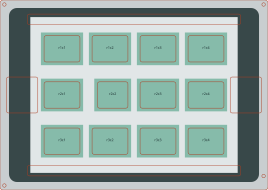

Engineering trials
153 of 270 catalog offers have replayable digital trials. They cover 53 of 53 offers with a positive modeled result at 25 sales. Each product keeps its original cost assumptions. Physical performance and paid demand are open.
Select a product to see its design, control case, results and physical acceptance check.
What the engineering changes about the build decision
All money below uses the catalog's Taiwan workshop assumptions of NT$600/hour and NT$32.947 per US dollar. The 25-sale result includes modeled parts, build labor, delivery, fees, one-time design and prototype costs for that offer. The internal-use comparison includes one design effort, a prototype allowance and one production unit. None of the products has measured demand or physical acceptance in this edition.
| Decision |
What the trial found |
Economics and next gate |
| Build the switch tester as the first repeatable shop tool. P028 |
Revised Omron holders clear by 0.195 mm in the tolerance model. The contact evaluator classified 448 synthetic cycles. A small holder has only 0.020 mm extra retaining land above the design minimum. |
NT$800 parts, NT$1,550 repeat build, NT$7,150 first internal unit. At NT$3,990 and 25 sales, modeled profit is NT$35,938 (US$1,091), or 56.3% of total outlay. The US$300 commercial listing has three stations. Measure force, stroke, retaining land and actual assembly minutes before quoting. |
| Build the green coffee divider if the shop actually needs a compatible divider. P151 |
The revised feed passes the 5% split-error criterion across ten synthetic 1 kg bead samples at 4.20% worst error. Adding an 8% feed bias drove the error to 11.40%. Actual flow through a full-width feed scoop determines whether the machine is useful. |
First build NT$8,890 (US$270) against the selected NT$15,156 (US$460) starting ask. Potential first-use saving NT$6,266 (US$190). Selling 25 at the proposed local price loses NT$2,975. Measure the actual bean size, calibrated sample mass and feed bias. |
| Try the rain recorder before buying that class of logger. P130 |
A 20 ms contact lockout captured 78 modeled tips at both tested rain rates. A 10 s lockout undercounted the faster stream by 50.47%. The trial does not measure the bucket. |
First build NT$11,235 (US$341) against a US$495 selected ask. Modeled first-use saving NT$5,074 (US$154). Selling 25 at NT$2,250 loses NT$8,150. Calibrate the real bucket at two delivery rates and cost the complete outdoor installation. |
| Develop the indoor camera rover around a clearance requirement. P030 |
The proposed loaded shell clears a 75 mm mock roof and 6 mm threshold by 6.8 mm. Raising the shell from 61 to 70 mm causes 2.2 mm of interference. The rover's camera, traction and runtime remain open. |
NT$9,250 parts, NT$10,650 repeat build, NT$55,900 first internal unit. Selling 25 at NT$16,900 models NT$34,650 profit (US$1,052), 8.9% ROI. The NT$10,400 listing is a chassis. Source and time a complete comparable camera system before claiming savings. |
| Buy the standard follower arm for the first cell. Develop the tooling it holds. Arm P049 · Fingers and nest P047 |
Moving the cold transfer station brought it within kinematic reach. A 1.5° shoulder zero error still produced 4.79 mm of tool error. The custom gripper/nest study independently shows a centered support layout within its 1 mm modeled handoff allowance. |
NT$7,088 (US$215) for the selected calibrated arm against NT$7,235 (US$220) for one repeat build and NT$20,090 (US$610) including launch. The arm loses NT$48,610 at 25 sales. The tooling models NT$16,788 profit at 25. Price the parallel mounting mechanism before applying the tooling return to this arm. |
| Keep the underwater camera vehicle at tank-study stage. Vehicle P031 · Guard set P032 |
The revised vehicle's worst modeled upward reserve is only 42.66 g equivalent. Tether loading, added mounts or absorbed water could consume it. The guard study found 0.05 mm nominal host-fit margin at its limiting tolerance condition. |
The full vehicle has NT$8,300 parts, NT$11,000 repeat cost and NT$67,300 (US$2,043) first cost. Its 25-sale result is −NT$83,380 (−US$2,531). The six guards earn only NT$563 at 25 sales. At NT$600/hour, 2.25 extra minutes per guard set consume that batch profit. Check a named host and tank loads before funding either product. |
| Treat price pressure and small fit allowances as separate reasons to pause. 8 mm film P016 · Punching cradle P232 |
The revised 8 mm window retains only 0.059 mm of image margin. The punching guide clears its modeled exit slit by 0.75 mm. Both can pass their digital geometry checks. |
At the catalog target price the 25-sale results are +NT$4,425 and +NT$11,563. Capping each price at its selected comparable ask changes those to −NT$950 and −NT$3,381. Measure the film and compare delivered prices and product scope before interpreting either as a sales opportunity. |
For all offers, the coverage CSV includes financial outcomes, trial coverage, and the outstanding physical acceptance check. Its extra-minutes column divides positive batch profit by 25 units and by NT$10 per minute. It answers how much unbudgeted work on every order consumes the modeled 25-sale result. The purchase listing archive retains the product pages, native-currency asks and scope caveats.
P028 · Switch endurance tester, single station
Original engineering trials · 56.3% modeled return at 25 sales
Single-station switch endurance tester
The station presses a switch and records whether the contacts closed and opened on command. This digital prototype includes replaceable holders for the Omron B3F-1000 and B3F-4000 and a runnable contact-log evaluator. A technician can change between the two footprints while retaining the same mounting pattern and the same central actuator axis.
What changed in the holder
Each holder has a 30 × 24 mm carrier under the switch and a removable keeper over its housing. The carrier takes the terminal pattern from the manufacturer's top-view drilling drawing for a 1.6 mm board. The keeper exposes the plunger and prevents the switch lifting out. The profiles give full-size centerlines in millimetres. Use a machining or drilling process suitable for the chosen substrate and compensate for tool diameter in CAM. Omron B3F drawing, printed pages 4 and 6
| Parts for the same mounting pattern |
Released geometry |
Lower-bound projected clearance |
| B3F-1000 carrier and keeper |
Four 1.0 mm terminal holes on a 6.5 × 4.5 mm pattern. Keeper aperture 4.9 mm. |
0.195 mm radial gap around the round top envelope, 0.220 mm minimum retaining land |
| B3F-4000 carrier and keeper |
Four 1.2 mm holes on a 12.5 × 5.0 mm pattern and two 1.8 mm locating-boss holes 9.0 mm apart. Keeper aperture 8.5 mm. |
0.195 mm radial gap, 1.420 mm minimum retaining land |
The first design allowed 1.2 mm extra aperture diameter and ±0.30 mm of centre error on each axis. The tolerance calculation predicted 0.074 mm interference in the worst corner. The revision uses 1.4 mm extra diameter and two location points for 2 mm pins, one round and one slotted. Its projected margin requires total switch-to-keeper misregistration within ±0.18 mm on each axis after installation. This allowance includes terminal play, part concentricity and plate registration. Achieving it is an open measurement. The calculation includes ±0.10 mm keeper aperture diameter, ±0.20 mm switch housing width and ±0.40 mm for the unspecified round-envelope diameter. The smallest nominal web is 2.4 mm. The larger housing leaves 1.22 mm to a 7 mm diameter washer envelope. The digital acceptance thresholds are 0.15 mm radial gap and 0.20 mm retaining land.
Mounting holes are 3.2 mm diameter on 22 mm centres. The independent pin pattern has a 2.05 mm round bore and a 2.70 × 2.05 mm horizontal slot on 20 mm centres. The locating base, pins, spacers and plunger are additional parts. Both switches have a nominal 4.3 mm overall height. Set spacer height from the measured housing shoulder and use a compliant actuator tip smaller than the plunger. The available plunger travel, keeper height, housing load and screw preload require a bench check. Leave space below the carrier for the terminals and removable leads. Both terminals on one row are internally connected. Sense between opposite rows after confirming continuity on the installed specimen. A 5 V logic supply and external 3.3 kΩ pull-up would give about 1.5 mA through a closed contact, within the published resistive load range for the silver contacts. The wiring remains a design assumption. Manufacturer electrical and mechanical specifications
The JES fixture previously inspected by HS uses its own holder interface. These two plates use an independent mounting pattern. An adapter or a measured base is needed before attaching them to that earlier fixture. Earlier fixture and builder observations
What the controller can distinguish
The replay takes one raw contact sample every millisecond, with command, tick within the commanded cycle, and boot epoch. The assumed cycle has 40 ms at home, 120 ms for press and 120 ms for release. The debounced value must match the expected contact throughout the last 25 ms of each phase. A transition must persist across 6 ms before changing the debounced value. These timings are software trial settings. Actual servo settling, switch load and test rate are unmeasured.
Across 448 simulated cycles (14 cases, 32 deterministic seeds per case), 64 passed, 160 reported a contact-state mismatch and 224 were inconclusive because of incomplete or inconsistent acquisition. The samples included press/release bounce, stuck open, closed at home, failed release, a late press, a sustained dropout, missing samples, duplicate sequence numbers, swapped samples, a missing command and controller resets. A later reset invalidated the whole cycle even when the contact stream had shown an earlier fault. An independent six-command CSV exercise produced pass, reset, missing cycle, missed close, pass and missing cycle in that order. Machine-readable outcomes
A deliberately injected 3 ms dropout passed because the debounce interval masks it. A 10 ms dropout during the checked dwell was detected. A missed close may be caused by the sample, leads, fixture or actuator. Servo motion feedback would be needed to identify the cause. The log format assumes a monotonic cycle counter and a commanded-cycle count retained by the host across a controller restart. The timing model measures state at sampled intervals and makes no endurance or cycle-life claim.
Run the trial
From this directory, use Python 3. No CAD engine or network connection is required.
python3 -B study.py --verify
python3 -B replay.py simulated-trace.csv --expected-cycles 6
The first command regenerates each deliverable in temporary storage, checks dimensions by reading the emitted SVGs against a separately transcribed drill map, rejects the first tolerance design, runs the simulations and compares the outputs byte for byte. To change the design, edit the holder parameters, run python3 -B study.py, and review the differences. The CSV fixture is synthetic and uses boot IDs assigned by the test. Replay implementation · Trial implementation
What decides whether it is worth building
For the first bench article, measure XY misregistration and keeper coverage after repeated installation of each switch. Verify that the actuator returns fully and that the fixture does not mark the housing or ride on the terminals. Run a known-good contact, an open circuit, a shorted input and a controller reset while comparing the contact signal and cycle count to an independent recorder. Record hands-on setup time, rework, scrap and actuator wear. In particular the B3F-1000 keeper has only 0.020 mm headroom above the proposed minimum retaining land.
The catalog's 56.3% return at 25 sales still assumes NT$1,550 to build each repeat unit, including one hour of labor, plus NT$5,600 of launch expense. The change from a generic holder to two keyed carriers introduces pins, keepers, spacers and a base interface. Their delivered cost, assembly time and life have not been measured. An additional 30 minutes of labor per unit would consume NT$7,500 across 25 units at the catalog rate of NT$600/hour.
Original report · Back to index
P010 · 6×6 camera-scanning carrier
Original engineering trials · 43.4% modeled return at 25 sales
P010 · 6×6 camera-scanning carrier
A 90 × 84 mm freestanding holder supports developed 120 film over a customer's diffuse light panel. The camera and macro lens sit on a separate copy stand. The operator lifts the mask, positions one frame by sight, seats the mask and takes an exposure. This design targets a Mamiya 6 MF square exposure on ILFORD HP5 PLUS. The lower and upper apertures provide some visible rebate for cropping.
The first digital trial found a problem with one universal guide. On the narrowest strip, a wide guide allowed 1.30 mm of lateral movement between reloads and left only 0.187 mm of supported edge in the adverse position. The revised carrier uses two interchangeable guide widths. Both pass the 0.85 mm lateral repeatability budget and 0.20 mm edge-bearing target. These are geometric bounds for a flat strip. A physical trial is needed to establish whether the film stays in focus and free of scratches.
Dimensions and sources
| Input |
Value |
Basis |
| Bare 120 film width |
60.70–61.70 mm |
Manufacturing envelope in ISO 732:2000, Figure 1 / Table 1. Measure a processed strip before selecting rails. ISO record · Standard preview |
| Frame |
56 × 56 mm |
Mamiya's stated square negative size. Other camera gates and the optional crop masks have different apertures. Mamiya 6 MF manufacturer brochure, specifications |
| HP5 PLUS roll-film base |
0.110 mm |
ILFORD describes the acetate base. The coated strip thickness must be measured. The model allows a total processed thickness of 0.16 mm. Manufacturer technical data |
| Operating envelope |
Frame center within ±0.15 mm of strip center across the strip, manual longitudinal centering within ±0.45 mm, skew up to ±0.08°, rays within ±10° per axis |
HS design assumptions. Inspect the actual negatives and optical setup. Film curl, shrinkage, field curvature and light-panel uniformity require measurement. |
Stock, contours and assembly
Use full-scale SVG paths for vector cutting. Matching binary STLs use millimetres for CAD placement or a printed trial. Verify the material's finished opacity and clean film-contact faces before loading a sample.
| Part |
Quantity and stock target |
Geometry |
| Lower plate |
1 × 1.50 mm opaque black sheet |
61.0 mm square window. SVG · STL |
| Support ledges |
2 × 0.80 mm smooth sheet |
Flip the second rail end-for-end in plane. The assembled ledges leave a 58.50 mm open gap below the film. SVG · STL |
| Narrow guide rails |
2 × 0.30 mm smooth shim stock |
For a 60.70–61.20 mm strip. Finished gap 61.45 mm. SVG · STL |
| Wide guide rails |
2 × 0.30 mm smooth shim stock |
For a 61.20–61.70 mm strip. Finished gap 61.95 mm. SVG · STL |
| Removable top mask |
1 × 1.50 mm opaque black sheet |
58.80 mm square window. SVG · STL |
From the light upward, stack the base, two support ledges, one pair of guides and the mask. Film sits on the smooth inner edges of the support ledges, between the guides. Both short ends are open. The design assumes a strip long enough to span the 90 mm channel during insertion. Support any length extending beyond the carrier.
Use four approximately 3 mm locating posts matching the 3.2 mm holes on a 76 × 76 mm pattern. Use removable retention on top of the mask. Provide four non-marking feet outside the light opening and clearance for bottom fasteners. The buyer supplies a diffuse illuminated area covering the lower window, an overspill mask if needed, and a copy stand that can focus at the carrier height. No proprietary mounting interface is required. Edge holding relies on clean, smooth ledges and measured alignment. Lift the cover for each advance, move the strip by its rebates, and keep guides and ledges free of burrs and debris.
The contours describe finished dimensions. Compensate for the cutter's kerf in CAM and measure each installed pair. The installed guide gap must lie within ±0.05 mm, the support gap and aperture sizes within ±0.10 mm, and each optical layer center within ±0.15 mm of the guide center. The shim height must be 0.25–0.35 mm including any attachment layer. The ray calculation assumes plate thickness up to 1.50 mm and support ledges up to 0.80 mm. Locating-hole clearance by itself does not establish these tolerances. The narrow and wide strips are similar in size. Mark their outer ends for the operator.
Digital results
The verifier reads the exported SVG outlines, aperture offsets and locator coordinates. It reconstructs each assembled channel and applies adverse film width, cut width, relative layer shift, media centering, skew and ray angle. It also reads back every STL, checks opposite edge pairs, bounding dimensions and signed volume against the planned material section.
| Worst case within design assumptions |
Narrow guide |
Wide guide |
| Remaining total lateral room during skewed loading |
0.074 mm |
0.074 mm |
| Maximum lateral reload span at center |
0.800 mm |
0.800 mm |
| Vertical headroom above the assumed thickest flat strip |
0.090 mm |
0.090 mm |
| Smallest optical margin around a full frame, at lower ledges |
0.258 mm |
0.258 mm |
| Minimum width of film supported at an edge |
0.437 mm |
0.687 mm |
The control cases included a loose universal guide, a wide strip inserted in the narrow guide, a 58 mm exposure, 0.35° skew, 0.27 mm thick media and a 20° optical ray. Each violated its intended acceptance limit. The 58 mm frame lost up to 0.743 mm of optical clearance at a ledge. The 0.074 mm residual loading room is especially sensitive to cutting error, dust and curl. Checks and negative results
From this directory, regenerate the SVGs and STLs, then rerun the checks. STL regeneration uses Python with Shapely 2.1+ and GEOS 3.10+ for constrained triangulation. The verifier and SVG generator use Python's standard library. The five exported meshes are included.
python3 build.py --stl
python3 verify.py
To change stock, edit design.json, regenerate, and inspect the output contours before use. The saved verification bounds concern planar geometry. The carrier has no automatic frame-indexing mechanism and supplies no measured focus or film-flatness result.
First physical decision
Gauge the actual gap and rail straightness at both ends and at the center. Inspect expendable processed strips with transmitted and raking light before and after ten lift–advance–reseat cycles. Record the maximum lateral displacement using image landmarks and check that all four frame edges remain visible. Compare center and corner sharpness on a flat, detailed test negative against the same locations individually refocused on the same stand. Agree the allowed loss with the user before testing. Record any scratches, edge contact, film bow and illumination falloff. Measure time spent polishing, sorting guides, gauging and reworking the carrier.
The catalog budgets NT$164.74 for materials and NT$98.84 for processing, plus 17.5 active minutes per unit. This trial produced digital shapes and identified a second guide pair. A supplier basket and actual finishing time are still needed to validate those allowances. If finishing adds 20 minutes at NT$600/hour and the second pair and inspection add NT$120 in variable cost, the 25-sale profit falls from NT$14,702 to about NT$6,702 at the same selling price. No physical production or new demand evidence was collected.
Original report · Back to index
P217 · App-specific tablet keyguard
Original engineering trials · 38.4% modeled return at 25 sales
P217 · Tablet keyguard for a 12-button board
This trial turns a specified button layout into a removable, keyed overlay for a bare ninth-generation iPad in landscape orientation. Selecting a button on the offline trial board highlights the selection. The board is an HS-authored test layout. A customer's app, screen orientation and case would need their own geometry and fit check.

The model caught a design problem. Side gesture slots extending 8.5 mm into the display left only 4.883 mm of material between the slot and its neighboring button opening after cut allowance. The design calls for 5 mm. Reducing the slot reach to 7.5 mm increased the minimum ligament to 5.883 mm while preserving 5.719 mm of modeled inward gesture travel at the center of each edge.
Digital evidence
Apple lists a 250.6 × 174.1 × 7.5 mm body, a 2160 × 1620 display and 264 pixels per inch. These figures imply an active rectangle of 207.818 × 155.864 mm. The trial assumes the rectangle is centered in the housing and uses the full display. The design origin is the top-left of the backing, with the Home button on the right. Display centering, absolute scale, actual corner profiles and the completed assembly require measurement on the named device. Apple specifications
| Check on exported files |
Result |
| Every opening contained in its assigned button over the modeled error envelope |
12 of 12 on each revision. The smallest residual in-plane margin is 1.419 mm. |
| Smallest central circular access area |
25.912 mm in diameter after cut allowance, against a 20 mm design criterion. |
| App revision moved the left edge of “Less” by 56 pixels (5.388 mm) |
The old opening crossed the revised button edge by 2.188 mm at nominal alignment. Regenerating changed exactly one of 12 openings. |
| Guard shifted 5 mm, screen shown at 90% scale from top left, or screen rotated 180° |
Each control put all 12 openings partly outside their assigned targets. |
| Asymmetric M3 hole pattern shared by backing, locator and guard |
Four holes aligned. Rotating the guard 180° left one hole 9.5 mm from the nearest mating hole. The minimum modeled material between a fixing hole and an interior cut is 2.05 mm. |
The checks reread the saved SVG contours, compare their envelopes with the rendered board's target rectangles in millimetres, and test the deliberately mismatched combinations. The in-plane budget assumes at most 0.4 mm of body movement at the reference center, 0.45 mm of screen-center error, 0.30 mm of residual alignment movement at the fixings, 0.20 mm of cut error per edge and ±0.15° total yaw. The angular bound uses the furthest corner of the entire plate and allows every intermediate rotation. The resulting bound is 1.781 mm per axis. These are as-built limits to check. A loose screw assembly or an oversized locator can exceed them. Rounded aperture bounding boxes make the containment test conservative. Wear, strength, optical parallax, grip, actual touches and user access still require physical evaluation.
Open or reproduce
The cut files contain closed contours in millimetres and a 268.6 × 190.1 mm overall envelope. All SVG strokes in the fabrication drawings represent toolpath centerlines. The kerf compensation choice belongs to CAM. The colored inspection drawing is a separate reference view.
Run from any working directory by passing the path to study.py. Python 3.9 or later can generate and verify the complete set with its standard library. Run without Python's optimization flag so the acceptance assertions execute.
python3 projects/engineering-opportunity-portfolio/catalog/engineering/P217/study.py
Trial assembly and physical acceptance
- Cut a full-size paper overlay first. In the fabrication program verify that the outline measures 268.6 × 190.1 mm. Display the matching board at the full-screen 4:3 extent. Check the location of the Home button, camera, body edges and all twelve targets on the actual tablet. A browser toolbar, letterboxing, zoom or a case changes registration.
- For the bench fixture, use a flat backing, a low-profile locator and the guard. The locator drawing has a nominal 251.4 × 174.9 mm pocket for the bare housing. A candidate stack is a 3 mm backing, one 3 mm locator and a 2 mm clear cast acrylic guard. Use suitable stock and CAM settings for the available fabrication process. Smooth contact edges and keep fastener ends and cut surfaces away from the screen. The 3.5 mm clearance holes accept four M3 fixings situated outside the body footprint.
- With a 0.5 mm measured backing pad and nominal 7.5 mm body, an initial 9 mm spacing from backing top to overlay underside leaves approximately 1 mm above the glass. Measure the actual gap free and under the intended hand load. Raise or support the guard if it flexes into the glass. Determine force, edge finish and secure retention with the real assembly. The three-sheet cradle is a proposed bench fixture. A commercial case attachment needs its own reference.
- Measure registration at the four corner targets and record the bounds above through five removal/refit cycles. Check the entire window boundary at each extreme. On the actual app, exercise every target and each edge gesture. Observe unintended selections, failed selections, contact with adjacent cells and access to the Home button. Record which layout and case were tested. The physical fitting and intended user's review determine suitability.
Effect on the business case
The archive budgets NT$195 in parts, 22 minutes of repeat assembly, five engineering hours and NT$650 prototype expense. At NT$1,250 per sale, the modeled contribution is NT$492.50 and profit on 25 identical units is NT$8,662.50. An additional 34.65 minutes of fitting per order at NT$600/hour consumes the entire batch profit. At 45 extra minutes per order the same batch loses NT$2,587.50. Generating a one-button revision establishes which design work is reusable. Assembly minutes, user fitting time, material yield and acceptance are still unmeasured.
The proposed backing and locator consume two additional 268.6 × 190.1 mm stock envelopes per reusable shop fixture. Two extra sheets and hardware shipped with every guard would require a revised unit cost. As a sensitivity case, an extra NT$140 per delivered unit would leave NT$5,162.50 at 25 identical sales and lower the spare fitting time to 20.65 minutes per order. The NT$140 is an illustrative allowance pending supplier quotes.
Original report · Back to index
P234 · Sewing frame for hand-bound books
Craft tooling · 37.8% modeled return at 25 sales
P234 Sewing frame for hand-bound books
Book sewing frame with continuous anchor slot and two cord layouts. Key clearance is 1 mm per side and washer land is 4.5 mm per side.
Dimensioned assembly SVG · Rejected revision SVG · Editable dimensions · Recorded measurements
Assembly
Mount two 25 mm uprights to the 320 × 160 mm base with external anti-rotation brackets. Fasten the 30 mm deep cross rail at the uprights, and use 5 mm shanks, 16 mm upper washers and hand-adjustable cord keys through the 7 mm slot. Clip matching lower keys at the same projected x positions. The drawing shows 230 mm wide book stock and two editable three- or five-cord layouts.
Dimensions are in millimetres. Hardware, workpieces and compatibility envelopes are assumed for this trial. Transfer the real interfaces before cutting final parts.
Rejected revision
Reducing the slot to 5 mm gives zero shank clearance. The keys cannot be relied on to slide along a real cut slot.
Physical acceptance
Set both cord patterns. Sew six signatures, release and measure relative wander at the book ends. Aim for at most 1 mm and check that the top washer stays seated during tightening.
The catalog models a 25-sale result of NT$ 22,562.50 at the proposed price. This is the catalog planning scenario. The trial measures the exported geometry and leaves fabrication, product performance and demand to physical and market testing.
Original report · Group replay script · Back to index
P232 · Signature punching cradle
Craft tooling · 37.7% modeled return at 25 sales
P232 Signature punching cradle
Dimensioned V-cradle and removable guide. Five 37.5 mm stations clear the 4 mm exit slit by at least 0.75 mm.
Dimensioned assembly SVG · Rejected revision SVG · Editable dimensions · Recorded measurements
Assembly
Cut mirror 45° rails and leave a 4 mm open slot between the tips. Center both bridge cleats on the slot. The cleats support and locate the removable 6 mm guide; use a separate clamp or captive screw at each bridge so the guide cannot shift while the awl is in use. Start with an assumed 210 mm long signature and a tool fitting a 2.5 mm guide bore.
Dimensions are in millimetres. Hardware, workpieces and compatibility envelopes are assumed for this trial. Transfer the real interfaces before cutting final parts.
Rejected revision
Moving the guide 3 mm off the fold takes worst radial clearance from 0.75 mm to −2.25 mm. The bore envelope intersects a cradle cheek.
Physical acceptance
Measure the registration on five folded 8-sheet signatures. Require awl exit within 0.5 mm of the fold center and each station within 0.75 mm of its corresponding point on the first signature.
The catalog models a 25-sale result of NT$ 11,562.50 at the proposed price. This is the catalog planning scenario. The trial measures the exported geometry and leaves fabrication, product performance and demand to physical and market testing.
Original report · Group replay script · Back to index
P001 · PCB inspection dock files
Replayed HS design releases · 36.4% modeled return at 25 sales
P001 · PCB inspection dock files
One common dock accepts carriers for OpenLog Artemis, MAX9744, PyGamer and Feather M4 Express. The frozen HS design release includes the editable geometry, per-board STEP and STL, four assembly models, upstream notices and instructions.
The new fit replay reopened the solids and compared the carrier mesh volume with its STEP solid. Each correctly seated assembly had zero modeled interference to five decimal places. Rotating the fully seated carrier 180° about the dock's vertical axis created 71.333 mm³ of intersection on all four. Support contact on the bare boards ranged from 32.223 to 46.841 mm². This control uses full seating depth.
Print the keyed dock and at least two carriers, measure repeatable seating and check the underside components of the intended populated boards. The financial offer is a download. Whether buyers pay for these revisions is a separate question.
Replay script for both source releases
Original report · Group replay script · Back to index
P047 · Gripper fingers and locating nest set
Original engineering trials · 31.7% modeled return at 25 sales
Gripper shoes and locating nest for the HS board pallet
The released design grips both long rails of the existing 114 × 58 × 6 mm HS SPI-adapter pallet. An 8 mm-high nest supports its perimeter and leaves the board opening and jaw sweeps clear. In the modeled vertical handoff, moving the pickup from the end tab to the two rails reduced the calculated edge error from 6.29 mm to at most 0.91 mm. The proposed bench limit is 1 mm. This result depends on the stated mass distribution, tooling alignment and pad flatness.
Complete seated assembly · Near shoe · Far shoe · Nest · Reference pallet
Which design to take forward
| Trial |
What the calculation or solid intersection found |
Decision |
| End tab, 1.5 mm lips |
A 150 g loaded pallet at 2 m/s² upward acceleration, with a factor of two, applies 3.54 N of vertical design load. At the assumed worst center of mass, the short tab amplifies this to a 23.92 N lower-lip reaction. A one-shoe cantilever calculation gives 47.83 MPa against a provisional 12 MPa limit. |
Reject this tab shoe. |
| End tab, 4 mm lips |
Stress falls to 6.73 MPa. Its vertical play still permits 3.38° of free pitch. The far edge drops 6.29 mm and the tilted pallet intersects the nest at the nominal seating height. |
Thickness alone cannot meet the handoff requirement. |
| Opposing rail shoes and relieved nest |
Four underside contact patches straddle the assumed center of mass. The minimum modeled support margin is 7 mm. A conservative whole-load-on-one-pad case gives 1.00 MPa. With ≤0.12 mm pad-height spread the edge-error bound is 0.908 mm. Increasing the spread to 0.35 mm fails at 1.575 mm. |
Advance the centered layout to a cold bench trial on a matching parallel fixture. |
The STEP solids for both shoes and the nest were exported, reopened and checked individually. The reopened assembly has four valid solids. The 4 mm outward sweep of each shoe clears both the pallet and the nest at the nominal seated position. The lower shoe clears the relieved nest floor by 1.70 mm. The nest rejected a reversed pallet and a pallet displaced 1 mm in X through detectable solid overlap. These checks use the actual pallet STEP shipped with the study. Numerical results
Interfaces and assumptions
- The nominal board occupies X 0–90 mm, Y 0–50 mm. The projected center of mass of the complete, retained workpiece must be within X 40–50 and Y 20–30 mm. A bare CAD pallet supplies geometry only. A populated board, a cable or a different orientation can shift the center of mass.
- Finished shoe faces are 58.6 mm apart closed and 66.6 mm apart open. The outer face of each shoe has two 1.6 mm-diameter blind pilot bores, 4 mm deep and 7 mm apart. A gripper-side adapter must provide fastener access and suitable thread engagement. The study assumes two parallel shoes. The stock SO-101 has a pivoting jaw and needs a different adapter or mechanism, as well as a recheck of stroke, payload and swept clearance.
- The 30 mm-long shoes have two 3 mm-long lower pads each. The stress calculation assumes a 3 mm effective contact length, a rigid pallet, a factored vertical load and a measured or otherwise justified allowable stress. The 12 MPa value is a screening assumption. Actual contact area, material, print direction, fatigue, mounting hardware, root fillets and wear need qualification.
- The modeled nest allows ±0.20 mm XY placement, 0.20 mm combined face error and ±0.15° yaw. The remaining side margin is about 0.122 mm. The jaw channel has only 0.040 mm remaining vertical insertion margin after the stated tolerances. Measure that allowance on the assembly. For the rail handoff, a rigid support plane is bounded using the worst pad-height spread, minimum support spans and extreme pallet corners. The test covers a level pickup under gravity. Axial slip, acceleration in the horizontal plane, payload retention and a moving arm's collision envelope remain open.
Reproduce and test
The parameters hold the assumed load, fit, alignment and allowable stress. The trial runs on the repository's CadQuery 2.8 kernel. From this directory:
~/.local/share/hardware-splicer/cad-venv/bin/python trial.py --out /tmp/hs-p047-replay
The first physical test would use a hand-operated parallel fixture and an inert pallet with the proposed mass and center of gravity. Measure all four bearing heights and the shoe opening, check board retention, then record far-edge height through repeated cold pickup, placement and release on the named nest. Reject an observed edge error above 1 mm. Move the ballast beyond the accepted margin to check that the fixture exposes a bad loading condition. Deliberately offset or reverse the pallet by hand during fit checks. Verify axial retention, fastener integrity and a safe recovery path before proposing powered transfers.
The catalog allows NT$500 for materials, 45 minutes per repeat build, 16 design hours and NT$2,400 for a prototype. The parallel gripper or an SO-101 linkage needs its own quote. At 25 identical sales, adding more than about NT$672 of unbudgeted per-order cost or 67 minutes of labor per order would consume the estimated NT$16,788 profit. No asset purchase, holding-force test, fatigue life or unit assembly time has been measured.
Original report · Back to index
P002 · Ender-3 plotter conversion files
Replayed HS design releases · 28.4% modeled return at 25 sales
P002 · Ender-3 plotter conversion files
The frozen HS design release contains the editable mount, manufacturer interface reference and notices, assembly models, a 100 × 80 mm demonstration path and the frozen verifier. It addresses the original Ender-3 carriage with 14 mm mounting pitch.
The release replay checked the supplied geometry and command stream. All 48 checks passed. In a temporary copy, adding a single out-of-envelope command made the verifier flag the command-to-trajectory comparison and five related checks. All motion in this study was simulated.
Measure the donor's mount and tool offset. Check actual pen pressure, lift and drawn registration on scrap paper before relying on the conversion. The archive's BOM and design are for the named donor revision.
Replay script for both source releases
Original report · Group replay script · Back to index
P018 · Turntable extension platform
Camera and lighting fixtures · 28.4% modeled return at 25 sales
P018 Turntable extension platform
Restricting the payload center of mass to a 60 mm circle increases the worst static tip margin to 13.46 mm.
The 260 mm deck is a synthetic four-foot host coupon. Centered base and deck masses of 1.20 and 0.45 kg support a 0.80 kg payload. A 6 N horizontal disturbance acts at 180 mm above the base and along the most unfavorable projected edge. The secondary drive pin is offset, and its centers must match on the deck and hub.
The catalog’s retail turntable is a comparator. The four support points, drive pins and dimensions are synthetic host geometry.
Revised full-size SVG · Baseline full-size SVG
Digital acceptance
| Metric |
Target |
Baseline |
Revised |
| Worst projected stability margin |
≥ 10 mm |
0.39618 fail |
13.4574 pass |
| Offset drive pin spacing |
≥ 15 mm |
18 pass |
18 pass |
| Offset drive pin diametral relief |
≥ 0.35 mm |
0.5 pass |
0.5 pass |
Pattern and first physical check
The red outlines specify the disk, separate hub and mounting cuts. The engraved circle marks the permitted payload center-of-mass zone. Blue circles locate synthetic support contacts.
Measure the donor’s foot or contact perimeter, masses, key tolerances, fastener engagement, motor torque and loaded deflection. Verify tip resistance, deck runout and slip with agreed load and inertia.
The catalog models a price of NT$1,943.87 and a 25-sale result of NT$10,737.42. The design trial changes engineering evidence. The estimate still uses the catalog’s original budget and demand assumptions.
Catalog products · Catalog returns
Original report · Group replay script · Back to index
P187 · Machine vision calibration board
Teaching robot components · 24.7% modeled return at 25 sales
P187 · Machine vision calibration board
Detect a printed-scale ChArUco pattern after perspective distortion. OpenCV renders a 4x4_50 pattern, reads the emitted image and checks the corner identities after a perspective warp. A smaller print scale yields an incorrect pitch despite remaining detectable.
Full-scale layout · Model outputs · Editable design inputs
| Modeled quantity |
Result |
| clean corners |
24 |
| warped corners |
24 |
| pitch mm |
24 |
| max warp residual px |
0.243 |
| scaled 97pct pitch mm |
23.296 |
| expected corners |
24 |
Physical acceptance. Measure pitch at five points per axis and both diagonal flatness readings, recording gauge uncertainty.
OpenCV ChArUco board documentation
Original report · Group replay script · Back to index
P008 · 35 mm camera-scanning carrier
Camera and lighting fixtures · 24.1% modeled return at 25 sales
P008 35 mm camera-scanning carrier
Narrowing the two guide strips from 36.20 to 35.55 mm reduces worst lateral play from 1.55 to 0.90 mm while retaining 0.30 mm insertion clearance.
Apply the same worst-case gap, film width and mask registration bounds to the independently measured cuts in both revisions. The coupon assumes a 35.8 × 23.8 mm exposed frame and the nearest perforation edge 13.75 mm from the strip centerline. The horizontal move is operator-registered to ±0.35 mm. The carrier follows the same broad camera-copy workflow as the existing 6×6 carrier P010. This narrow strip has its own rail spacing, edge perforations, feed direction, and failure case.
Nikon grounds the approximate 36 × 24 mm frame format. Kodak documents still-film products in 135 and 35 mm. Width range, registration, and perforation clearance use modeled bounds. Nikon FX and DX formats · Kodak TRI-X
Revised full-size SVG · Baseline full-size SVG
Digital acceptance
| Metric |
Target |
Baseline |
Revised |
| Minimum insertion clearance |
≥ 0.2 mm |
0.95 pass |
0.3 pass |
| Worst lateral reload span |
≤ 1 mm |
1.55 fail |
0.9 pass |
| Vertical frame margin |
≥ 0.25 mm |
0.125 fail |
0.45 pass |
| Horizontal frame margin |
≥ 0.25 mm |
0.35 pass |
0.35 pass |
| Perforation exclusion margin |
≥ 0.25 mm |
-0.025 fail |
0.3 pass |
Pattern and first physical check
The two loose guide strips are drawn at assembly spacing. Cut the base, lid and strips and dry-stack them around a gauge before positioning the rails. The reference hole pattern only registers the two mask plates.
Measure actual developed 135 stock, frame and perforations. Reload 20 times, inspect the first and last negatives for scratching and edge crops, and measure film curl and focus against a chosen light source.
The catalog models a price of NT$1,449.67 and a 25-sale result of NT$7,049.07. The design trial changes engineering evidence. The estimate still uses the catalog’s original budget and demand assumptions.
Catalog products · Catalog returns
Original report · Group replay script · Back to index
P011 · Kodak Disc flatbed adapter
Film digitizing and camera positioning · 18.1% modeled return at 25 sales
P011 Kodak Disc flatbed adapter
Tightening the Disc index shoe reduces modeled angular freedom from 1.65° to 0.43° and leaves 0.17 mm worst indexed frame margin.
A fifteen-position ring places a 10.6 × 8.2 mm rectangular target tangentially at 24 mm radius. Replay all index gaps and sweep the angular free play of a 2 mm pin in the exported slot, spanning ±0.43° in the revision. Then charge 0.25 mm lateral spindle and seating allowance against the smallest aperture margin. Disc OD of 65 mm, hub, frame radius, scanner footprint and key engagement are adjustable synthetic coupon inputs.
Disc media has a ring of fifteen small 8 × 10 mm class images. The drawing uses the 10.6 × 8.2 mm example documented by Lippisches Kamera Museum. Epson documents V600 transparency placement and holder detection. Kodak Disc exhibit · Film Photography Project format summary · Epson V600 user guide
Revised full-size SVG · Baseline full-size SVG
Digital acceptance
| Metric |
Target |
Baseline |
Revised |
| Synthetic calibration-zone clearance |
≥ 3 mm |
8 pass |
8 pass |
| Carrier to coupon footprint edge |
≥ 3 mm |
4 pass |
4 pass |
| Worst indexed frame margin |
≥ 0.12 mm |
-0.43246 fail |
0.16559 pass |
| Largest index scale interval error |
≤ 0.02 deg |
0 pass |
0 pass |
| Rotational seating uncertainty |
≤ 0.6 deg |
1.65112 fail |
0.42729 pass |
Pattern and first physical check
The carrier, spindle bore, single exposure opening and index shoe are cut patterns. The engraved ring is a manual index ruler. The blue disc boundary, projected image and pin footprint guide measurement of the real film.
Measure the actual disc hub, film plane, detent or original die-cut notch geometry and frame radii on sacrificial film. Verify the follower engages the hub with clear access, does not contact sensitized image areas and leaves the actual V600 calibration path clear.
The catalog models a price of NT$1,153.14 and a 25-sale result of NT$4,424.55. The design trial changes engineering evidence. The estimate still uses the catalog’s original budget and demand assumptions.
Catalog products · Catalog returns
Original report · Group replay script · Back to index
P012 · 127 strip flatbed adapter
Film digitizing and camera positioning · 18.1% modeled return at 25 sales
P012 127 strip flatbed adapter
Adding intermediate edge clips lowers the modeled free-edge rise from 3.82 to 0.44 mm while preserving 0.50 mm clamp-to-image clearance.
For a 46 mm-wide 127 specimen with a single 40 × 40 mm image, model the curled edge between stations as a circular arc with 130 mm minimum radius. Add ±0.30 mm placement at both stations, then compute sagitta over the worst free span. The single-image coupon uses another V600 envelope and shares the marker-preservation workflow. It tests longitudinal curl at the two edges. The open center and cross-film bow still need observation.
The Film Photography Project supplies 46 mm 127 film information. Dimensions for 40 mm square exposure, curl radius, clip error and the V600 placement coupon are trial inputs. Film Photography Project 127 format · Epson V600 user guide
Revised full-size SVG · Baseline full-size SVG
Digital acceptance
| Metric |
Target |
Baseline |
Revised |
| Synthetic calibration-zone clearance |
≥ 3 mm |
7 pass |
7 pass |
| Carrier to coupon footprint edge |
≥ 3 mm |
5 pass |
5 pass |
| Worst modeled free-edge rise |
≤ 0.5 mm |
3.82429 fail |
0.43574 pass |
| Minimum clamp-to-image margin |
≥ 0.3 mm |
0.5 pass |
0.5 pass |
| Minimum aperture margin |
≥ 0.5 mm |
0.95 pass |
0.95 pass |
Pattern and first physical check
Cut the carrier, mask opening and separate edge strips. Use the four scored stations per edge for prototype retainer positions and gauge the clip tip before contact with film.
Measure a representative range of aged 127 strip curvatures, including roller-set and cross-film curl. Verify clip retention and contact marks outside the frame, then check sharpness and Epson transparency calibration.
The catalog models a price of NT$1,153.14 and a 25-sale result of NT$4,424.55. The design trial changes engineering evidence. The estimate still uses the catalog’s original budget and demand assumptions.
Catalog products · Catalog returns
Original report · Group replay script · Back to index
P013 · 126 strip flatbed adapter
Film digitizing and camera positioning · 18.1% modeled return at 25 sales
P013 126 strip flatbed adapter
Using a single asymmetric key gives 0.20 mm seating margin for the forward specimen and rejects the reflected single-perforation position.
The modeled 35 mm-wide coupon has a 28 mm square exposure and one 2.8 × 1.8 mm perforation at x = −4.00 mm and y = −15.75 mm from its image center. Apply 0.15 mm location error to each key edge. Check all forward key engagements and try the reflected hole across the strip centerline to catch any misleading partial engagement. The older two-sided assumption binds in the forward direction and provides a misleading cue at one pin when reflected.
Science Museum Group records 26 mm and 28 mm square 126 camera frames across models. The trial targets the 28 mm case. Individual perforation size, offset, and reflective orientation are modeled. Science Museum Group cartridge camera collection · Film Photography Project 126 format · Epson V600 user guide
Revised full-size SVG · Baseline full-size SVG
Digital acceptance
| Metric |
Target |
Baseline |
Revised |
| Synthetic calibration-zone clearance |
≥ 3 mm |
8 pass |
8 pass |
| Carrier to coupon footprint edge |
≥ 3 mm |
6 pass |
6 pass |
| Forward orientation minimum pin seating margin |
≥ 0.15 mm |
-31.3 fail |
0.2 pass |
| Reversed orientation maximum pin seating margin |
≤ -0.15 mm |
0.2 fail |
-31.3 pass |
| Minimum aperture margin |
≥ 0.4 mm |
0.5 pass |
0.5 pass |
Pattern and first physical check
Cut the carrier and key stock. Use the marked pin and perforation centers as layout references. Read the datum from the emulsion orientation observed on the actual machine.
Measure the actual 126 strip’s perforation and its frame offset. Use a soft retractable pin, verify registration without forcing or stretching the perforation, and inspect edge crops and host calibration.
The catalog models a price of NT$1,153.14 and a 25-sale result of NT$4,424.55. The design trial changes engineering evidence. The estimate still uses the catalog’s original budget and demand assumptions.
Catalog products · Catalog returns
Original report · Group replay script · Back to index
P014 · 120 flatbed holder for Epson V600
Film digitizing and camera positioning · 18.1% modeled return at 25 sales
P014 120 flatbed holder for Epson V600
The three-height shim coupon spans 0.50 mm and offers 0.17 mm worst-case reserve within a hypothetical focus band.
Test three physical shim section heights 0.95, 1.20 and 1.45 mm against a 0.90–1.50 mm trial focus band. Charge ±0.13 mm combined seating and thickness error. Search the available shims for the best minimum reserve across both boundaries. The selector enables a real focus sweep before locking down a carrier dimension. A 56 × 56 mm square exposure checks a single 6×6 case in 61 mm nominal stock.
Epson documents medium-format film loading and holder recognition details for the V600. Ilford documents 120 medium-format stock. The SVG footprint, film width, square frame and height range are adjustable coupon assumptions. Epson V600 user guide · Ilford 120 medium-format film
Revised full-size SVG · Baseline full-size SVG
Digital acceptance
| Metric |
Target |
Baseline |
Revised |
| Synthetic calibration-zone clearance |
≥ 3 mm |
6 pass |
6 pass |
| Carrier to coupon footprint edge |
≥ 3 mm |
5 pass |
5 pass |
| Best worst-case hypothetical focus reserve |
≥ 0.15 mm |
-0.43 fail |
0.17 pass |
| Total prototype shim sweep |
≥ 0.45 mm |
0 fail |
0.5 pass |
| Frame aperture edge margin |
≥ 0.6 mm |
0.75 pass |
0.75 pass |
Pattern and first physical check
The three full-size thickness silhouettes identify candidate shim heights. Cut the carrier aperture and position two equal-height shims at the scored feet. Measure installed height before optical tests.
Measure glass-to-emulsion offsets with the real V600, fit the shims without blocking factory holder markers, and compare center and corner target sharpness at every height and both curl orientations.
The catalog models a price of NT$1,153.14 and a 25-sale result of NT$4,424.55. The design trial changes engineering evidence. The estimate still uses the catalog’s original budget and demand assumptions.
Catalog products · Catalog returns
Original report · Group replay script · Back to index
P015 · 110 holder for Epson 4870
Film digitizing and camera positioning · 18.1% modeled return at 25 sales
P015 110 holder for Epson 4870
Four windows on 19 mm pitch leave 0.375 mm worst crop registration margin and 0.85 mm of opaque land between crops.
Match four adjacent model frames (17.0 × 12.8 mm) across a 16 mm wide strip with +/−0.20 mm load and alignment allowance total. The outer bays of the 18.15 mm baseline pitch clip image edges and leave no opaque land. The 19 mm spacing meets the all-frame envelope and minimizes the opaque separator's land requirement. This trial uses an Epson 4870 candidate, whose guide explicitly reserves top-of-platen calibration space, with a different placeholder keepout height from the V600 coupons.
Film Photography Project documents 16 mm 110 stock and approximately 13 × 17 mm nominal frames. Epson 4870 documentation requires keeping its calibration space uncovered. The numeric hold-down and clearance regions, actual exposed crop target and pitch are adjustable estimates. 110 stock width · 110 nominal frame · Epson 4870 quick reference
Revised full-size SVG · Baseline full-size SVG
Digital acceptance
| Metric |
Target |
Baseline |
Revised |
| Synthetic calibration-zone clearance |
≥ 3 mm |
8 pass |
8 pass |
| Carrier to coupon footprint edge |
≥ 3 mm |
7 pass |
7 pass |
| Worst registration margin across all four crops |
≥ 0.25 mm |
-0.9 fail |
0.375 pass |
| Smallest crossbar land between apertures |
≥ 0.6 mm |
0 fail |
0.85 pass |
| Film overlap per long edge |
≥ 0.8 mm |
0.95 pass |
0.95 pass |
Pattern and first physical check
Cut four windows and two rails. Center the frame strip by its images in the manual preview. Unblocked calibration and edge overlap require physical fit checks.
Confirm the 4870 transparency unit and software with a manual marquee, then measure the top clear calibration zone, actual film pitch, both edge support lines and the minimum focus stand-off. Check retained frames for scratches and corner falloff.
The catalog models a price of NT$1,153.14 and a 25-sale result of NT$4,424.55. The design trial changes engineering evidence. The estimate still uses the catalog’s original budget and demand assumptions.
Catalog products · Catalog returns
Original report · Group replay script · Back to index
P016 · 8 mm film inspection holder
Film digitizing and camera positioning · 18.1% modeled return at 25 sales
P016 8 mm film inspection holder
An offset 3.67 × 5.22 mm still window preserves 0.059 mm minimum image margin through the modeled pose sweep and excludes the neighboring images and perforation side.
Use a 3.30 × 4.60 mm Standard 8 reading area, 3.81 mm pitch, ±1° yaw and ±0.07 mm placement in the modeled film infeed. Evaluate target corners, neighboring frame margins and the perforation-side keepout independently. A mirror-centered window clips the useful area and admits the perforated side. Offset the opening by 0.96 mm toward the image side. The modeled margin is small enough to require physical registration verification.
Australia’s National Film and Sound Archive documents Standard 8 and Super 8’s different perforations. Film Photography Project makes perforated Standard 8 stock. The mount uses trial-specific frame size, pitch, pitch-axis registration, perforation zone and manual V600 orientation. NFSA audiovisual format register · Standard 8 stock · Epson V600 user guide
Revised full-size SVG · Baseline full-size SVG
Digital acceptance
| Metric |
Target |
Baseline |
Revised |
| Synthetic calibration-zone clearance |
≥ 3 mm |
10 pass |
10 pass |
| Carrier to coupon footprint edge |
≥ 3 mm |
7 pass |
7 pass |
| Worst full-frame margin through skew sweep |
≥ 0.05 mm |
-0.7183 fail |
0.05888 pass |
| Perforation-side exclusion margin |
≥ 0.1 mm |
-0.85203 fail |
0.10797 pass |
| Minimum neighboring frame exclusion |
≥ 0.1 mm |
0.18519 pass |
0.18519 pass |
Pattern and first physical check
Use the small opening and the two pressure strips to prototype a single-image inspection coupon. The neighboring frames and blue perforation band are inspection references.
Verify Standard 8 on examples of the actual archived stock, perforation side and picture orientation. Check print scale and use a measurable alignment ruler to test real still-frame inspection. Inspect abrasions and compare optical resolution with a camera-copy setup.
The catalog models a price of NT$1,153.14 and a 25-sale result of NT$4,424.55. The design trial changes engineering evidence. The estimate still uses the catalog’s original budget and demand assumptions.
Catalog products · Catalog returns
Original report · Group replay script · Back to index
P236 · Fan-gluing paperback clamp
Craft tooling · 15.9% modeled return at 25 sales
P236 Fan-gluing paperback clamp
Oscillating fan-glue clamp with 16° stops each way. Replay sweeps 321 positions and measures 40.28 mm minimum base clearance.
Dimensioned assembly SVG · Rejected revision SVG · Editable dimensions · Recorded measurements
Assembly
Use mirrored cheeks with the drilled 8 mm pivot and 6 mm stop pins on a 290 mm deck. Bolt the side carriers to the rocker under the stack. Use a hand clamp across the opposing jaws to hold the stack and expose 30 mm of leaf. Assemble the stop pins as bearing surfaces across both cheeks. The export shows an assumed 36 × 148 mm stack section. Set jaw span and fastener placement to the book length before fabricating.
Dimensions are in millimetres. Hardware, workpieces and compatibility envelopes are assumed for this trial. Transfer the real interfaces before cutting final parts.
Rejected revision
A pivot 48 mm above the deck leaves only 4.28 mm of swept clearance, below the 20 mm allowance for a recessed drip tray and cleanup access.
Physical acceptance
Cycle a dry dummy stack through both travel stops, then glue three identical scrap blocks. Confirm both sides can be fanned during application, check leaf pull-out against the usual method and inspect the stop pins afterward.
The catalog models a 25-sale result of NT$ 15,362.50 at the proposed price. This is the catalog planning scenario. The trial measures the exported geometry and leaves fabrication, product performance and demand to physical and market testing.
Original report · Group replay script · Back to index
P119 · Seed roller metering test stand
Field and aquaculture instruments · 15.4% modeled return at 25 sales
P119
Main export · Results · All trial files
Seed roller metering test stand. The sampled gate function rejects one-sample interruptions and requires two clear readings to re-arm. Replaying the exported 1 ms ADC traces detected 100 of 100 spaced surrogates with zero false events. A control with only one clear sample between each paired interruption detected 50 of 100. The exported events contain the first blocked sample timestamp and become available after re-arming. The surrogate uses 3 ms occultation and 30 ms normal spacing.
Physical check. Confirm the roller shaft and collar dimensions on the host and size the chute around the installed roller. Count at least 98 of 100 drops of a named opaque seed lot against video. Increase overlap deliberately and report the point at which counts degrade.
Original report · Group replay script · Back to index
P181 · Robot teaching conveyor
Teaching robot components · 14.9% modeled return at 25 sales
P181 · Robot teaching conveyor
Move the stop sensor upstream. A constant-speed approach, a fixed controller delay and constant braking bound the distance to the belt edge. The model omits belt slip and article sliding.
Full-scale layout · Model outputs · Editable design inputs
| Modeled quantity |
Result |
| stop margin mm at requested speeds |
36.8, 27.6, 14.4 |
| old fast margin mm |
-13.6 |
Physical acceptance. Run the 80 g article through 100 passes at each speed and measure the longest stop, including a slipping belt.
Original report · Group replay script · Back to index
P172 · Manual deck tether reel
Tank inspection and ROV accessories · 14.5% modeled return at 25 sales
P172
Winding schedule · Results · All trial files
Manual deck tether reel. The 95 mm nominal drum has 58.07 m modeled net capacity with a 2 m connector reserve. The 94 mm smallest drum meets Blue Robotics' 75 mm minimum working bend diameter for its 7.6 mm Standard Fathom tether. The 59 mm control has more storage and fails the bend gate. The static brake budget is 3.45 N·m at a hypothetical 25 N pull and 1.25× margin. Actual winding quality and brake torque remain unknown. Blue Robotics Standard Fathom tether
Physical check. Wind and unwind one disconnected 50 m sample ten times. Check connectors, flange clearance, smallest bend, kinks, and brake slip under the measured dry-deck pull.
Original report · Group replay script · Back to index
P241 · Metered leather edge dye roller
Craft tooling · 14.5% modeled return at 25 sales
P241 Metered leather edge dye roller
Lift-out dye roller with 2–5 mm guide settings. The roller dips 2 mm, clears the tray floor by 6 mm, and lifts 2 mm above its lip.
Dimensioned assembly SVG · Rejected revision SVG · Editable dimensions · Recorded measurements
Assembly
Mount the 36 mm roller on an 8 mm loose-fit shaft in open upright bearing slots. Use face spacers to retain the 24 mm working width. Fit the tray between cheeks and bring the fluid to the 8 mm mark. Select a 2, 3.5 or 5 mm edge guide for the coupon and lift the roller before sliding the tray out. Choose dye-compatible tray and roller material after a soak test.
Dimensions are in millimetres. Hardware, workpieces and compatibility envelopes are assumed for this trial. Transfer the real interfaces before cutting final parts.
Rejected revision
Raising the axle center by 3 mm leaves the roller 1 mm above the dye surface. The accepted design dips the roller in the bath by 2 mm.
Physical acceptance
Use a water-dye surrogate to check spill-free removal. With the intended dye, draw three test strips for each guide setting. Record uncoated length and time a full color change.
The catalog models a 25-sale result of NT$ 7,262.50 at the proposed price. This is the catalog planning scenario. The trial measures the exported geometry and leaves fabrication, product performance and demand to physical and market testing.
Original report · Group replay script · Back to index
P020 · Larger folding LED photo box
Camera and lighting fixtures · 13.5% modeled return at 25 sales
P020 Larger folding LED photo box
Orienting a 28 × 24 mm rectangular lintel on edge reduces modeled sag from 28.85 mm to 0.26 mm over 610 mm.
The large folding-box concept uses a separate removable lintel coupon. Evaluate a simply supported rectangular member with a 4.5 GPa lower-bound elastic modulus, uniform load 0.021 N/mm including lintel self mass, and 610 mm span. The load integrates to 12.81 N and includes 7.85 N for a 0.8 kg distributed panel assembly. The compact P019 model tests folding panel footprints. This model tests vertical elastic bending across a larger opening.
The commercial comparison points to a retail larger photo box. The span, lintel section, reference load and modulus are synthetic.
Revised full-size SVG · Baseline full-size SVG
Digital acceptance
| Metric |
Target |
Baseline |
Revised |
| Modeled maximum sag |
≤ 1 mm |
28.8455 fail |
0.26083 pass |
| Modeled extreme fiber stress |
≤ 5 N/mm² |
8.37225 fail |
0.36338 pass |
| Support span |
≥ 600 mm |
610 pass |
610 pass |
Pattern and first physical check
The long profile defines length and width. The two gauges give rectangular cross-section orientation and thickness. Bearing station marks locate the support centers. The gauge sheet contains the lintel coupon for testing the span.
Measure actual stiffness with material and grain orientation, validate the bearing seats and anti-tip support, then hang the fixture and confirm span, sag, heat and light uniformity.
The catalog models a price of NT$3,920.69 and a 25-sale result of NT$11,678.26. The design trial changes engineering evidence. The estimate still uses the catalog’s original budget and demand assumptions.
Catalog products · Catalog returns
Original report · Group replay script · Back to index
P182 · Compliant puck singulator
Teaching robot components · 13.0% modeled return at 25 sales
P182 · Compliant puck singulator
Set the adjustable gate with a single and a double coupon. The single-piece stack and the most compressible two-piece stack must land on opposite sides of both gate tolerance limits. Bridging and friction are unmodeled.
Full-scale layout · Model outputs · Editable design inputs
| Modeled quantity |
Result |
| single clearance mm |
0.75 |
| side by side rejection margin mm |
11.2 |
| double rejection margin mm |
2.69 |
| old double margin mm |
-1.61 |
| lateral clearance mm |
5 |
Physical acceptance. Feed 100 actual mixed pucks. Record doubles, bridge jams and single exits at the tolerance limits.
3D tooling. revised mouth STEP, original mouth STEP. Fit measurements from reopened solids.
Original report · Group replay script · Back to index
P135 · Depth-selective water grab sampler
Field and aquaculture instruments · 12.2% modeled return at 25 sales
P135
Main export · Results · All trial files
Depth-selective water grab sampler. An 85 mm bore and 176.2 mm effective chamber length yield 999.85 mL. A continuously mixed purge with assumed exchange of 110 mL/s, ±20% exchange and ±5% capacity yields at most 5.09% cross-layer tracer after a 45 s hold. The 10 s control yields 44.87% against the 10% limit. Both allow 15 mL each for closure carryover and retrieval leakage. Chamber exchange and leakage are parameters in a mass-balance model. Actual flushing through the open ends may have stagnant regions or lower exchange.
Physical check. Measure the purge curve and deployment time in a layered tracer tank. Verify depth and both closures with the messenger. Each of five retrievals must have under 10% crossover.
Original report · Group replay script · Back to index
P229 · Raised-line neighborhood orientation map
Workshop devices and access aids · 11.2% modeled return at 25 sales
P229 Raised-line neighborhood orientation map
Raised desk teaching layout with five distinct matching landmark symbols and a 16.8 mm minimum ridge-to-symbol gap.
Candidate SVG · Rejected SVG · Editable dimensions and assumptions · Replay measurements
Setup
Produce the 215 × 150 mm training board with a 2.4 mm wide, 0.9 mm high ridge. Use the drawn outlines for the five landmarks and the fixed key, with height and edge easing selected on a test print. The route and named landmarks use an authored synthetic training layout, suitable only as a desk teaching example.
Negative control
Widening the route ridge to 10 mm reduces the minimum clear gap to 13 mm. The digital acceptance limit is 15 mm.
Physical acceptance
Ask intended learners to match every landmark to the separated key and log any symbol or line they confuse.
The catalog models a 25-sale result of NT$ 4,237.50 at its proposed price. This is a planning estimate. The digital result applies to the geometry or synthetic operating assumptions in this trial.
Original report · Group replay script · Back to index
P017 · Motorized indexed photo turntable
Camera and lighting fixtures · 10.7% modeled return at 25 sales
P017 Motorized indexed photo turntable
Absolute targets close the full 36-shot revolution, and 380 ms programmed dwell exceeds the modeled settling budget by 20 ms.
A synthetic drive has 2,048 effective integer steps per full deck revolution. Replay starts at zero, takes 36 pre-settled captures, then commands home without a final duplicate picture. Compare the emitted dial tick coordinates to the independent CSV replay and the ideal 10° interval. The 280 ms settling time plus 80 ms camera guard are planning inputs.
The drive and trigger are synthetic integration inputs. The catalog’s retail turntable is a comparator. This control trial can run without the separate P018 extension deck.
Revised full-size SVG · Baseline full-size SVG · Revised capture schedule
Digital acceptance
| Metric |
Target |
Baseline |
Revised |
| Worst nominal index error |
≤ 0.1 deg |
0.68359 fail |
0.07812 pass |
| Home closure error |
≤ 0.1 deg |
0.70312 fail |
0 pass |
| Settling time budget surplus |
≥ 0 ms |
-170 fail |
20 pass |
Pattern and first physical check
Use the dial as a printable angle scale and the CSV as an absolute position and hold schedule. Its dry-run command semantics are position, wait, then capture when the capture field is 1. The synthetic drive uses positive motion and assumes no missed steps.
On the selected motor, gearbox and controller, measure actual steps per revolution, backlash, load settling and indexing with an encoder or optical target. Check trigger isolation, repeatability and shutter delay over three loaded revolutions.
The catalog models a price of NT$3,591.22 and a 25-sale result of NT$8,701.54. The design trial changes engineering evidence. The estimate still uses the catalog’s original budget and demand assumptions.
Catalog products · Catalog returns
Original report · Group replay script · Back to index
P030 · Low-profile 4WD inspection rover, dry indoor use
Workshop devices and access aids · 8.9% modeled return at 25 sales
P030 Low-profile 4WD inspection rover, dry indoor use
Dry indoor 4WD inspection cart envelope with a 6 mm floor threshold, 6.8 mm overhead margin and a manual recovery slot.
Candidate SVG · Rejected SVG · Editable dimensions and assumptions · Replay measurements
Setup
Fit four 60 mm wheel envelopes on 150 mm wheelbase and 145 mm track. Keep the loaded shell below 61 mm and skid above 11 mm from level ground. The clearance check conservatively adds the entire threshold rise plus pitch at the chassis overhang. The field model projects a small sighting card 125 mm forward and assumes a 63° unobstructed vertical cone. Install the 9 mm tow slot behind the chassis for supervised retrieval. The model treats wheels, sensor and power modules as packaging envelopes.
Negative control
Raising the shell to 70 mm turns 6.8 mm of estimated overhead clearance into 2.2 mm of interference under the same roof and threshold.
Physical acceptance
Push an unpowered loaded cart through a 75 mm roof jig and across a 6 mm threshold. Then check tether recovery and visibility with the installed camera.
The catalog models a 25-sale result of NT$ 34,650.00 at its proposed price. This is a planning estimate. The digital result applies to the geometry or synthetic operating assumptions in this trial.
Original report · Group replay script · Back to index
P178 · Shallow tank drop camera
Tank inspection and ROV accessories · 8.3% modeled return at 25 sales
P178
PCB pickup pattern · Optical target model · Results · All trial files
Shallow tank drop camera. The reference camera has a 32 mm PCB, 28 mm bolt pattern, 80° × 64° field of view and a 1920-column output. A flat-port refraction model gives 351 mm horizontal coverage at 300 mm water standoff and 0.87 mm radial window margin at the worst sensor corner. The 3 mm target is sampled at 16.42 pixels on average. The 640-column control gives 5.47 against an eight-pixel screening gate. Lens focus, image contrast, haze, actual resolution and 5 m USB link behavior remain unverified. Blue Robotics BR-100126
Physical check. Record a 3 mm feature at 30 cm on the intended host computer with the proposed 5 m lead. Repeat after a two-hour soak at the declared shallow condition and inspect the assembled head for ingress.
Original report · Group replay script · Back to index
P192 · Vacuum picking head for a teaching arm
Teaching robot components · 8.0% modeled return at 25 sales
P192 · Vacuum picking head for a teaching arm
Size the suction cup for a nonporous coupon. Pressure times cup area is derated for the assumed seal, then compared to dynamic load with a factor of three. An exponential vent trace predicts the first sample below static holding force after venting.
Full-scale layout · Model outputs · Editable design inputs
| Modeled quantity |
Result |
| required force N |
1.771 |
| revised available N |
2.2117 |
| old available N |
1.2441 |
| first sample below weight s |
0.14 |
| diametral throat clearance mm |
4 |
Physical acceptance. Perform 100 lifts of a 50 g coupon in a contained bin and measure release delay, leakage and power-loss response.
Original report · Group replay script · Back to index
P175 · Clamp-on ROV instrument bridge
Tank inspection and ROV accessories · 8.0% modeled return at 25 sales
P175
Slotted deck pattern · Results · All trial files
Clamp-on ROV instrument bridge. A 280 mm slotted deck fits the envelope of the 338 mm wide BlueROV2. The model assumes the customer's clamp surfaces are 240 mm apart and the instrument pattern is 70 × 40 mm. It puts the full 24.52 N proof load on one slotted aluminum bar. The revised 8 mm bar deflects 0.098 mm, while the 3 mm control deflects 1.856 mm against a 0.6 mm screening gate. This load check omits clamp slip, frame compliance, impacts and off-axis load. The manufacturer's envelope alone cannot establish the actual clamp and instrument interfaces. BlueROV2 datasheet
Physical check. Measure one exact customer frame and instrument mounting pattern. Load the installed bridge with twice the declared instrument mass for ten minutes. Compare deck and witness marks before and after unloading.
Original report · Group replay script · Back to index
P111 · Plug-tray vacuum seed head
Field and aquaculture instruments · 7.0% modeled return at 25 sales
P111
Main export · Results · All trial files
Plug-tray vacuum seed head. The two opening schedules register 72 openings to an assumed 12 × 6 tray on 27 mm centers, with the first opening as the datum. A 0.65 mm nominal hole at −0.05 mm tolerance supplies 4.81× the assumed 15 mg seed load at 2 g and 5 kPa of local vacuum. The 0.40 mm control gives 1.64× against a 3× gate. The largest revised hole is 0.25 mm below the assumed minimum seed width. Machining can consume 0.354 mm of the 2 mm radial location budget, leaving 1.646 mm for tray registration. The ideal-seal model assumes pressure at the seed face. Edge leaks, hole burrs, double pickup and vent release can invalidate that prediction.
Physical check. Measure the proposed tray centers and seed lot, then log vacuum with a fully loaded and partly uncovered plate. Count single fills across ten trays and require at least 90% with the vacuum source identified.
Original report · Group replay script · Back to index
P240 · Rotary punch offset fence
Craft tooling · 6.6% modeled return at 25 sales
P240 Rotary punch offset fence
Drill-free offset fence for an assumed benchtop rotary punch. Three offsets register at 4, 8 and 12 mm across a 108 mm fixing span.
Dimensioned assembly SVG · Rejected revision SVG · Editable dimensions · Recorded measurements
Assembly
Build the 150 × 130 mm deck around a 120 × 100 mm host coupon. Seat opposed lift-off shoes under the 5 mm lip and tension the shoe bolts. Mount the fence above the deck on two slots. Set it by measuring from the die center to the fence face; the drawing compares three settings with a 24 mm strip. Use the host coupon to verify layout before transferring a purchased tool footprint.
Dimensions are in millimetres. Hardware, workpieces and compatibility envelopes are assumed for this trial. Transfer the real interfaces before cutting final parts.
Rejected revision
Moving both mounting slots onto the same x position collapses the fixing span from 108 mm to zero. The fence loses its two-point restraint against racking.
Physical acceptance
Record lip depth, base envelope, die center and hand clearance on the real press. Install the fence at 8 mm, punch 20 holes and measure start-to-end variation. Aim for an 8.0 ± 0.3 mm offset with no detectable fence slip.
The catalog models a 25-sale result of NT$ 1,837.50 at the proposed price. This is the catalog planning scenario. The trial measures the exported geometry and leaves fabrication, product performance and demand to physical and market testing.
Original report · Group replay script · Back to index
P188 · Camera calibration target tripod cradle
Teaching robot components · 6.1% modeled return at 25 sales
P188 · Camera calibration target tripod cradle
Size the jaw opening and pivot preload. A single effective friction surface balances gravity with an explicit torque factor. The drawing shows the open jaw in section and a separate effective-radius detail. Clamp force and friction are assumptions.
Full-scale layout · Model outputs · Editable design inputs
| Modeled quantity |
Result |
| required torque Nm including factor |
0.3361 |
| torque margin Nm |
0.0439 |
| low preload 55N margin Nm |
-0.1161 |
| max board gap margin mm |
0.45 |
| old gap margin mm |
-0.55 |
Physical acceptance. Fit both board thicknesses and measure angular creep after 30 minutes under the maximum eccentric load.
3D tooling. max thickness seat STEP, original seat STEP. Fit measurements from reopened solids.
Original report · Group replay script · Back to index
P003 · Parametric cabinet-handle layout files
Workshop devices and access aids · 6.1% modeled return at 25 sales
P003 Parametric cabinet-handle layout files
True-size drill layout for 96, 128 and 160 mm handle pitches with centerline, setbacks and two-axis scale bars.
Candidate SVG · Rejected SVG · Editable dimensions and assumptions · Replay measurements
Setup
Choose the pitch by measuring center-to-center on the real handle, then line up the top datum and the centerline on the scrap panel. Print A4 landscape or larger at actual size and use the two 100 mm bars to detect printer scaling. The 5 mm drill circles are trial values and should match the actual screw clearance.
Negative control
A 97% print scale shrinks both 100 mm bars to 97 mm and changes the 160 mm pitch by 4.8 mm.
Physical acceptance
Measure both bars on the print, then transfer one complete hole pair and fit a handle on scrap.
The catalog models a 25-sale result of NT$ 427.07 at its proposed price. This is a planning estimate. The digital result applies to the geometry or synthetic operating assumptions in this trial.
Original report · Group replay script · Back to index
P191 · Bolt-on robot bumper corner set
Teaching robot components · 5.9% modeled return at 25 sales
P191 · Bolt-on robot bumper corner set
Keep both bolt washers clear of the bumper pad. A 20 mm rail and assumed pad placement tolerance set the envelope. The drawing is one corner plate used four times. The stock profile reference establishes rail width only. Hole seats, T-nuts and impact strength require verification.
Full-scale layout · Model outputs · Editable design inputs
| Modeled quantity |
Result |
| pad to washer margin mm |
1.2 |
| old margin mm |
-2.8 |
| outer side edge margin mm |
5 |
| corners in set |
4 |
Physical acceptance. Fit the four corners to the named extrusion, verify nut seating and check retention after representative knocks.
80/20 metric 20-2020 extrusion
3D tooling. rail corner plate STEP. Fit measurements from reopened solids.
Original report · Group replay script · Back to index
P132 · Soil core ejector sampler
Field and aquaculture instruments · 5.6% modeled return at 25 sales
P132
Main export · Results · All trial files
Soil core ejector sampler. At the assumed 40 mm sleeve diameter and stated diameter tolerances, the 39 mm ejector shoe keeps 0.60 mm diametral running clearance. A concentric Euler model for a 220 mm unsupported stainless rod with a fixed-free effective length factor gives 1,881 N for the 8 mm revision and 111.7 N for the 4 mm control. The digital gate is 240 N, twice the assumed 120 N ejector load. Soil friction, local bends, rod-to-shoe connection and gritty jams require measurement.
Physical check. Log peak ejector load and recover five 75 mm cores in specified moist soil. Each unloaded core must remain within 10% of insertion length.
Original report · Group replay script · Back to index
P134 · Water clarity disk with line reel
Field and aquaculture instruments · 4.9% modeled return at 25 sales
P134
Main export · Results · All trial files
Water clarity disk with line reel. The SVG defines alternating quadrants for a 200 mm freshwater disk. The spool geometry has 14.5 m ideal storage capacity after allowing one line layer of flange clearance. The line CSV checks fifty 100 mm marks under ±0.2% residual strain and ±2 mm marking error. The worst error is 12 mm over 5 m. The 1% strain control gives 52 mm against a 20 mm gate. Line lay, knots and flattening affect practical spool capacity. Disk attitude and observer variation affect clarity readings.
Physical check. Compare all marks to a steel tape under the submerged disk load. Measure still-water disappearance and reappearance alongside a reference disk from a stationary platform. EPA freshwater Secchi disk geometry
Original report · Group replay script · Back to index
P185 · Short-stroke gate pusher
Teaching robot components · 4.4% modeled return at 25 sales
P185 · Short-stroke gate pusher
Place the limit before the deceleration zone. One-dimensional stopping includes switch location uncertainty, controller latency and deceleration. Force, screw backlash and repeatability under load remain open.
Full-scale layout · Model outputs · Editable design inputs
| Modeled quantity |
Result |
| worst after limit mm |
5.4141 |
| revised margin mm |
1.5859 |
| old margin mm |
-3.4141 |
| assumed speed mm s |
45 |
Physical acceptance. Cycle a 250 g dummy 500 times and record worst overrun, endpoint spread and home response.
Original report · Group replay script · Back to index
P251 · Corner radius routing template
Craft tooling · 4.4% modeled return at 25 sales
P251 Corner radius routing template
R12, R25 and R40 routing template layouts keep 19 mm fence overlap and 6 mm pad clearance on an assumed 62 mm wide coupon.
Dimensioned assembly SVG · Rejected revision SVG · Editable dimensions · Recorded measurements
Assembly
Fabricate the plate and two underside fences for one radius at a time. The two fences seat on untouched reference edges; clamp in the two marked pad areas. The top view assumes a 62 mm-wide coupon and an exact 12.5 mm diameter for both cutter and bearing, using an external bearing-guided cut. Measure the real setup and use a compatible test piece before powered routing.
Dimensions are in millimetres. Hardware, workpieces and compatibility envelopes are assumed for this trial. Transfer the real interfaces before cutting final parts.
Rejected revision
A 16 mm bearing paired with the 12.5 mm cutter adds 1.75 mm to the outside guide radius. Matching bores keep modeled transfer error at zero.
Physical acceptance
Dry-check that the bearing stays on the guide and the cutter, clamps and router base clear each other. Route scrap for the three radii, then compare using a radius gauge and check for template movement.
The catalog models a 25-sale result of NT$ 1,137.50 at the proposed price. This is the catalog planning scenario. The trial measures the exported geometry and leaves fabrication, product performance and demand to physical and market testing.
Original report · Group replay script · Back to index
P139 · Hatchery fish length board
Field and aquaculture instruments · 4.1% modeled return at 25 sales
P139
Main export · Results · All trial files
Hatchery fish length board. The full-size SVG exports 401 graduations from a datum aligned to the raised stop. With the assumed printer factor of 0.995 and residual scale error of ±0.10%, ten read-back stations predict 0.600 mm worst error including ±0.20 mm stop placement. The uncompensated SVG gives 2.598 mm against a 1 mm gate. The artwork is wider than 420 mm and needs a continuous print at the intended scale. Calibrate the actual printer before compensating.
Physical check. Compare ten tick positions with a steel rule up to 400 mm after applying the insert and seating the stop. Repeat after wet cleaning and inspect readability.
Original report · Group replay script · Back to index
P039 · USB parts-counting and kit-check scale
Workshop devices and access aids · 3.9% modeled return at 25 sales
P039 USB parts-counting and kit-check scale
Interval-based parts counter distinguishes all 18–22 part lots in 135 synthetic mass and sensor-corner scenarios.
Candidate CSV · Rejected CSV · Editable dimensions and assumptions · Replay measurements
Setup
Tare with the working 37.5 g pan, sample a known part count from representative supplier lots and update the observed minimum and maximum part mass. This trial uses 0.812 ± 0.010 g per part and ±0.040 g aggregate reading uncertainty. The algorithm reports every integer count consistent with the measured mass interval and only accepts a kit when the configured count is the sole candidate.
Negative control
Raising error to ±0.240 g creates 10 ambiguous samples in the factorial replay. Mixed part types that share mass can remain ambiguous even with a better sensor.
Physical acceptance
Weigh known lots of 18–22 parts across three actual supplier lots, including count-19 samples, tare resets and several tray positions.
The catalog models a 25-sale result of NT$ 2,035.00 at its proposed price. This is a planning estimate. The digital result applies to the geometry or synthetic operating assumptions in this trial.
Original report · Group replay script · Back to index
P122 · Filter differential pressure panel
Field and aquaculture instruments · 3.8% modeled return at 25 sales
P122
Main export · Results · All trial files
Filter differential pressure panel. A synthetic common-tee sweep covers 0.25–2.0 bar at zero true differential with opposite-sign gauge errors, quantization and up to 50 mm of water head difference. Two 2.5 bar gauges each specified at ±0.4% full scale yield a conservative 0.0349 bar error bound. The ±1.6% control yields 0.0949 bar, exceeding the 0.05 bar gate. The CSV contains 20 sign and pressure combinations per revision. This is a gauge-selection model for a static clean-water fixture.
Physical check. Choose actual rated gauges, valves and fittings that can meet the bound. Bench-equalize the ports with water, compare across the declared range and inspect for leaks within the lowest component rating. Taiwan's Ministry of Agriculture provides the irrigation filter context. Ministry of Agriculture
Original report · Group replay script · Back to index
P026 · Fixed-angle split-keyboard supports
Workshop devices and access aids · 3.1% modeled return at 25 sales
P026 Fixed-angle split-keyboard supports
Wingless Moonlander-envelope keyboard support pair at 13.73°. Assumed typing positions retain 32.5 mm landing margin.
Candidate SVG · Rejected SVG · Editable dimensions and assumptions · Replay measurements
Setup
Use the manufacturer wingless envelope of 170 × 170 mm per half. The 155 mm base span, 41.55 mm rise and 18 mm plug allowance are trial dimensions. Fit two wedge carriers under each board and set positive stops against measured safe underside lands. The section uses mirrored cross-sections and assumes a clean contact coefficient of 0.45. ZSA dimensional FAQ · ZSA 1:1 flat printout
Negative control
A 67 mm base places the outermost modeled typing load 11.5 mm beyond the support edge. The 155 mm base provides 32.5 mm margin.
Physical acceptance
Transfer underside contact zones and plug clearances from both actual keyboard halves, then test typing and slipping across the target supports.
The catalog models a 25-sale result of NT$ 724.76 at its proposed price. This is a planning estimate. The digital result applies to the geometry or synthetic operating assumptions in this trial.
Original report · Group replay script · Back to index
P128 · Leaf-wetness duration node
Field and aquaculture instruments · 3.0% modeled return at 25 sales
P128
Main export · Results · All trial files
Leaf-wetness duration node. The synthetic orchard stream has ten five-minute wet periods, isolated misleading readings in each state, and a missing sample. Two thresholds and three consecutive confirmations give 20 of 20 correct state edges, a maximum 25 s timestamp error and an 85 s notification latency. The one-sample control emits 60 edges. The replay reports closed wet windows and marks the gap unknown. The thresholds operate on arbitrary ADC units for the chosen synthetic stream.
Physical check. Log ten repeated wet/dry transitions against a timed reference. Check the two-minute edge limit with realistic droplets, orientation and drying conditions, then repeat with a forced data gap.
Original report · Group replay script · Back to index
P183 · Chute colour sorting head
Teaching robot components · 2.9% modeled return at 25 sales
P183 · Chute colour sorting head
Move the diverter far enough beyond the read line. Three assumed color prototypes are tested under two additive lighting levels with a matched dark reading and seeded gain/noise variation. The correction uses the exact simulated dark offset. Independent illumination drift is outside this screen. Gate travel competes with transit time.
Full-scale layout · Model outputs · Editable design inputs
| Modeled quantity |
Result |
| synthetic correct per 100 by light |
100, 100 |
| gate margin s |
0.13 |
| old gate margin s |
-0.05 |
Physical acceptance. Run two randomized sets of 100 real parts in the intended lighting, scoring wrong bins separately from late gate movements.
Original report · Group replay script · Back to index
P235 · Spine finishing press
Craft tooling · 2.5% modeled return at 25 sales
P235 Spine finishing press
Spine finishing jaws keep a continuous 245 mm working edge and 6 mm tool clearance while gripping 34 mm of block height.
Dimensioned assembly SVG · Rejected revision SVG · Editable dimensions · Recorded measurements
Assembly
Use opposed 310 × 75 × 24 mm jaws with rigid bench attachment to the fixed side and external rods through both ends. Establish a 16 mm projection above the jaws for the sample 36 mm book block. A 10 mm-deep tool envelope can then move the length of the spine without touching the jaws. Start with hardwood cheeks with smooth sacrificial liners and use separate reinforcing washers under the rod hardware.
Dimensions are in millimetres. Hardware, workpieces and compatibility envelopes are assumed for this trial. Transfer the real interfaces before cutting final parts.
Rejected revision
A 6 mm spine projection puts the tool envelope 4 mm below the jaw tops. The accepted 16 mm projection keeps it 6 mm above both jaws.
Physical acceptance
Clamp a 245 mm scrap block and exercise the intended tool at both ends and the center. Check for tool witness marks and jaw movement after ten working passes.
The catalog models a 25-sale result of NT$ 2,262.50 at the proposed price. This is the catalog planning scenario. The trial measures the exported geometry and leaves fabrication, product performance and demand to physical and market testing.
Original report · Group replay script · Back to index
P045 · Auto-traverse pickup coil winder
Workshop devices and access aids · 2.2% modeled return at 25 sales
P045 Auto-traverse pickup coil winder
Discrete pickup winder command model delivers 6,000 turns with 0.08–0.09 mm pitch and 53 layer reversals.
Candidate CSV · Rejected CSV · Editable dimensions and assumptions · Replay measurements
Setup
Use an encoder index to count the spindle and linearly phase a stepper-driven guide once per revolution. The trial assumes a 10 mm winding window, 0.01 mm linear increments, 0.075 mm measured wire diameter and a 0.5 mm edge reserve. It models commanded positions across 6,000 turns. Establish tension and verify acceleration, spindle guarding and backlash on physical hardware before running the winding program.
Negative control
Increasing the turns per traverse from 112 to 150 forces 0.06 mm spacing. After layer one, neighboring turns would overlap for the assumed wire diameter.
Physical acceptance
Use sample bobbins and sacrificial wire. Measure turn count, edge buildup and tension after repeated reversals.
The catalog models a 25-sale result of NT$ 4,325.00 at its proposed price. This is a planning estimate. The digital result applies to the geometry or synthetic operating assumptions in this trial.
Original report · Group replay script · Back to index
P032 · Six-piece underwater ROV guard set, one host model
Tank inspection and ROV accessories · 1.8% modeled return at 25 sales
P032
Guard face · Six-seat survey table · Results · All trial files
Six-piece underwater ROV guard set. QYSEA identifies V6 EXPERT compatibility and an 80 mm per-unit envelope for its six-pack. The new 75 mm face is an independent concept tied to six proposed survey positions. Rasterizing each exported face over a swept blade disk gives a minimum 77.74% projected opening for 1.9 mm ribs, compared with 55.57% for the 3.5 mm control and a 73% gate. The assumed outer seat edge margin is only 0.05 mm, so host measurement controls the next revision. The 6.0 mm radial margin is at the ring. Ribs cross the plane above the rotor and their axial clearance and support remain interface checks. Projected open area does not estimate thrust or protect against debris of any specified size. QYSEA six-pack listing
Physical check. Survey all six seats, axial gaps and retainer locations with the exact host unpowered. Then verify retention and compare debris snagging and thrust against a baseline in a controlled tank.
Original report · Group replay script · Back to index
P019 · Compact folding LED photo box
Camera and lighting fixtures · 1.8% modeled return at 25 sales
P019 Compact folding LED photo box
The two-stage side pack stows with 86 mm clearance between sides while retaining 184 mm open side depth.
The 270 × 190 mm floor and 190 mm tall panels use 3 mm modeled stock. Two full-depth leaves overlap in the stowed plan by 102 mm including 2 mm displacement per side. Two 90 mm leaves per side and a 4 mm paid-out hinge gap reduce folded projection. Fold each outer leaf back against its inner leaf before closing the opposed packs. The P020 larger box shares the enclosure concept and tests a separate support problem.
The retail box in the catalog is a market reference. Panel dimensions, hinge allowance and folded projection model are synthetic.
Revised full-size SVG · Baseline full-size SVG
Digital acceptance
| Metric |
Target |
Baseline |
Revised |
| Clearance between stowed side packs |
≥ 4 mm |
-102 fail |
86 pass |
| Useable open side depth |
≥ 182 mm |
184 pass |
184 pass |
| Hinge offset surplus over packed stock |
≥ 0.8 mm |
2 pass |
1 pass |
Pattern and first physical check
Cut floor, back, top and the pair of side packs. The scored line marks near-edge hinge location, and the gap between side leaves is a pattern spacing for a flexible bridge. Fit diffuser and illumination to the completed frame after checking temperature limits.
Prototype all fold sequences with real hinge tape and diffuser stack. Inspect LED wiring through the hinges and perform a powered heat, flicker and illuminance-uniformity check.
The catalog models a price of NT$2,141.56 and a 25-sale result of NT$924.18. The design trial changes engineering evidence. The estimate still uses the catalog’s original budget and demand assumptions.
Catalog products · Catalog returns
Original report · Group replay script · Back to index
P126 · Soil tension recorder
Field and aquaculture instruments · 1.7% modeled return at 25 sales
P126
Main export · Results · All trial files
Soil tension recorder. The model decodes reversed-polarity 12-bit ADC readings for an IRROMETER WATERMARK 200SS with a 10 kΩ series resistor. The 30 electrical corners from five resistor values, three temperatures, and two resistor tolerances reach 0.147% maximum resistance error. Separate records flag open, short and incompatible rail captures. The fixed 24 °C control is biased by up to 11.028 kPa versus the colocated-temperature calculation. The tension export reports positive suction magnitude for the guide's 10–100 kPa calibration window. Both the ADC and reference resistors are synthetic. Lead impedance, settling, electrode offsets and the actual temperature probe can change the result.
Physical check. Compare five traceable resistances while probing the polarity reversal and settling time. Check the field sensor through a wet/dry cycle and verify recorded time and temperature against references. IRROMETER integration guide
Original report · Group replay script · Back to index
P233 · Short-run book nipping press
Craft tooling · 0.7% modeled return at 25 sales
P233 Short-run book nipping press
Twin hand-screw press with 10–55 mm opening. The widest opening keeps 17 mm engaged thread and 5 mm handle-to-platen clearance.
Dimensioned assembly SVG · Rejected revision SVG · Editable dimensions · Recorded measurements
Assembly
Use rigid bridged end towers and a guided floating platen. The upper crossmember carries one threaded collar each side, with 96 mm of usable screw thread and swivelling pads engaging the floating platen ears. Mount two removable 230 × 160 × 24 mm flat cauls to the press members. The plan dimensions refer to a 310 × 180 mm bench envelope and do not specify the frame material or rated clamp load.
Dimensions are in millimetres. Hardware, workpieces and compatibility envelopes are assumed for this trial. Transfer the real interfaces before cutting final parts.
Rejected revision
Moving the two screws from 20 mm to 33 mm inboard makes each handle envelope overlap the platen by 8 mm. The accepted layout clears it by 5 mm.
Physical acceptance
Press a 220 mm wide cover coupon for 20 minutes at a repeatable hand setting. Check four-corner gap spread against a provisional limit of 0.5 mm, inspect surfaces and ease release before pressing a book.
The catalog models a 25-sale result of NT$ 612.50 at the proposed price. This is the catalog planning scenario. The trial measures the exported geometry and leaves fabrication, product performance and demand to physical and market testing.
Original report · Group replay script · Back to index
P112 · Tray dibble press
Field and aquaculture instruments · 0.5% modeled return at 25 sales
P112
Main export · Results · All trial files
Tray dibble press. The CSV locates 24 pin tips for an assumed leek tray coupon on 38 mm centers. A simply supported aluminum brace under a centered 50 N total load gives 1.280 mm maximum depth error after adding tip and tray stack allowances to brace sag. The 3 mm brace control gives 4.521 mm against the 2 mm gate. The model covers axial depth under the declared load. It omits tray flex, off-center force, pin tilt and linkage compliance.
Physical check. Record peak handle-to-plate force, measure all 24 impressions from a 10 mm setting, and inspect for cracks after 50 cycles. Recalculate the brace for the measured force if 50 N proves low.
Original report · Group replay script · Back to index
P136 · School plankton tow net
Farm and process tooling · -0.2% modeled return at 25 sales
P136
Net panel dimensions · Bead replay · Results · All trial files
School plankton tow net. The right-cone-frustum panel export locates the developed arcs and sector angle for a 200 mm lip, a 45 mm cup and a 420 mm length. With a specified ±20 µm opening allowance, nominal 200 µm mesh has a 220 µm largest opening. A simplified 100-bead test with a shared, synthetic 3% bypass retains 97% on the candidate and 34% on nominal 300 µm stock. At the tight aperture limit, the estimated clean open area is 1.88 times the inlet area on the finer mesh. This area ratio screens clean geometry and does not predict flow, retention of deformable material, or seam performance. Verify material from the order and add seam allowance according to the sewing process. USGS tow-net example
Physical check. Gauge a sample of apertures and bench-flow 100 measured inert beads over the declared cutoff. Require at least 90% capture and record seam losses, mesh damage and cup handling.
Original report · Group replay script · Back to index
P179 · Paired shallow inspection lights
Tank inspection and ROV accessories · -0.4% modeled return at 25 sales
P179
Illuminance grid · Results · All trial files
Paired shallow inspection lights. A uniform-cone approximation for two hypothetical 140 lm heads yields at least 659.9 lx across nine points on a 500 mm card. A lumped heat model estimates 41.5 °C case temperature for a 5 K/W wet thermal path. The 13 K/W control reaches 61.5 °C against the 52 °C gate. The thermal assumptions are screening inputs. Verify beam distribution, temperature and the material limits of the purchased heads.
Physical check. Measure full-output lux and case temperature through an instrumented soak and repeat the electrical and light checks after retrieval.
Original report · Group replay script · Back to index
P216 · Desktop robot manual tool coupling
Reusable shop fixtures · -1.2% modeled return at 25 sales
P216 Desktop robot manual tool coupling
Manual coupler with 3.2 mm hook engagement and 0.355 mm geometry-only tip drift at 70 mm reach.
Candidate SVG · Rejected SVG · Editable dimensions · Replay results
Setup
Use one round locator and one relieved locator at 32 mm separation, with 4 mm pins. Fit the two identical plain tool plates to the key. Use a positive latch with visible closed indicator and a latch spring returning to the seated position. The 66 × 46 mm wrist-side face is an interface blank. Set the horn pattern from the owner's arm, preferably by transferring a sacrificial plate in the current wrist mount. The drift bound covers locator clearance and geometry. SO-ARM100/101 source CAD
Negative control
A 4.6 mm primary seat lets the tool-tip estimate rise to 1.12 mm. The 4.12 mm primary seat holds the bound to 0.36 mm.
Physical acceptance
Bench-check the closed indicator and both index positions. Use a restrained 100 g dummy tool over a pad and measure the static tip position through 100 cycles. Check that finger force alone can release the latch after unloading.
The catalog models a 25-sale result of NT$ -367.50 at its proposed price. Use the fixture trial and physical acceptance costs to decide whether reuse is economical for the actual job.
Original report · Group replay script · Back to index
P033 · 18-contact programming and test fixture
Reusable shop fixtures · -1.4% modeled return at 25 sales
P033 18-contact programming and test fixture
18-probe SPI adapter cassette, asymmetric reverse-load tab, and 54 simulated continuity and travel cases.
Candidate SVG · Rejected SVG · Contact trace · Rejected trace · Editable dimensions · Replay results
Setup
This layout uses the repository SPI adapter source, with pad coordinates, board fingerprint and nets reproduced in the source record. Fit the correct orientation once when fastening the adapter in its cassette, then use the asymmetric external tab to block a reversed cassette. Set the hard stop from the measured probe working stroke. The shown trial assumptions reserve 0.10 mm radial tip margin and 0.18 mm stroke. Source names are passed through to the lead matrix. The matrix exercises simulated connection and stroke corners using an ideal conductor per named lead. The source path in the Hardware-Splicer repository is hardware/reference_designs/spi_flash_adapter_v1/spi_flash_adapter_v1.kicad_pcb. Source-board layout and fingerprint
Negative control
Opening the TP12 lead reduces the connected rows to 17 probes and 15 distinct nets. The acceptance thresholds require all 18 physical access points and all 16 distinct nets.
Physical acceptance
Perform the first test unpowered. Known ground points should be joined; unrelated nets must pass the intended isolation test. Verify expected probe motion and run a contact test after each of ten reloads. Record lead resistance and intermittent faults separately from geometry.
The catalog models a 25-sale result of NT$ -690.00 at its proposed price. Use the fixture trial and physical acceptance costs to decide whether reuse is economical for the actual job.
Original report · Group replay script · Back to index
P036 · Motorized macro focus rail
Studio equipment · -1.5% modeled return at 25 sales
P036 Motorized macro focus rail
A 240 µm pre-roll and 6 µm capture schedule cover 0.60 mm with 57.81% worst modeled focal overlap.
Replay the emitted 101-position sequence after a same-direction pre-roll. Use thin-lens macro depth of field with unity pupil magnification, f/5.6, 3× magnification and 4 µm image-plane circle of confusion. The modeled screw clearance is 220 µm. Clearance not taken up by the jog absorbs early commanded motion. Charge ±1.2 µm independent settled position error to neighboring exposures. The revised schedule has 20 µm of backlash pre-roll reserve and 3.6 µm minimum advance.
WeMacro specifies 100 mm of commercial rail travel, a configurable 1 µm minimum step in one direction and 220 µm recommended software backlash. The 220 µm value is used as a conservative comparator input. The proposed stage's error and optical settings are modeled. WeMacro Pro 100 specifications
Revised full-size SVG · Baseline full-size SVG · Revised focus stack positions
Digital acceptance
| Metric |
Target |
Baseline |
Revised |
| Backlash pre-roll reserve |
≥ 15 µm |
-220 fail |
20 pass |
| Worst modeled focal-slice overlap |
≥ 55 % |
37.7232 fail |
57.8125 pass |
| Guaranteed advance between exposures |
≥ 2 µm |
0 fail |
3.6 pass |
| Commanded stack depth |
≥ 600 µm |
1000 pass |
600 pass |
Pattern and first physical check
The SVG is a full-size 100 mm travel installation coupon and mounting datum plate. The companion schedule gives one absolute jog command followed by monotonically increasing exposure positions in micrometers. Schedule settle time on the hardware after measurement.
Measure actual reversal clearance, settling and step repeatability under mounted load with a displacement gauge. Run a 101-exposure stack at the selected lens setting and check overlap, focus breathing, vibration, trigger timing and travel stops.
The catalog models a price of NT$7,490.00 and a 25-sale result of -NT$2,810.00. The design trial changes engineering evidence. The estimate still uses the catalog’s original budget and demand assumptions.
Catalog products · Catalog returns
Original report · Group replay script · Back to index
P082 · Benchtop slab-flattening router carriage
Products near break-even · -1.6% modeled return at 25 sales
P082 Benchtop slab-flattening router carriage
Unpowered crossbeam coupon with a 520 mm span and 0.023 mm peak modeled deflection under 20 N per rail.
Candidate SVG · Rejected SVG · Candidate trace · Rejected trace · Editable inputs · Replay evidence
Setup
Set two independent 25 × 35 × 2 mm box-section coupons on fixed supports, without mounting a machine or cutter. Set the span to 520 mm and apply the specified fixture weight to each coupon separately at quarter span, midspan and three-quarter span. The model uses an assumed bending modulus of 69 GPa and simple supports. It covers bending of each straight rail under a single vertical force. Joint compliance, imbalance and an actual moving carriage need independent measurements.
Negative control
A 16 mm high section increases calculated sag to 0.154 mm, above the 0.08 mm coupon limit. The 35 mm section gives 0.023 mm.
Physical acceptance
Put 20 N of deadweight on each marked position one at a time. Read a dial indicator across the span. Compare the maximum and release-back-to-zero. Keep the trial isolated from power and cutting hardware.
The catalog models a 25-sale result of NT$ -2,725.00 at its proposed price. The result depends on catalog allowances and assumed sales.
Original report · Group replay script · Back to index
P184 · Teaching robot odometry pod
Teaching robot components · -1.8% modeled return at 25 sales
P184 · Teaching robot odometry pod
Calibrate the rolling distance per encoder turn. Quantized pulses are replayed for a 2 m run under three assumed slip ratios. The calibration input is synthetic. The adverse run adds 3.5% slip.
Full-scale layout · Model outputs · Editable design inputs
| Modeled quantity |
Result |
| calibrated error pct |
smooth -0.1867, mat -0.5911, jointed -1.2132 |
| calibration input |
assumed rolling circumference |
| geometric wheel error pct |
smooth 0.8137, mat 0.4053, jointed -0.223 |
| high slip error pct |
-3.5149 |
Physical acceptance. Tape a 2 m baseline, measure actual loaded circumference and record forward and reverse error on three floor finishes.
Original report · Group replay script · Back to index
P138 · Shallow-channel current survey wand
Farm and lab purchase alternatives · -1.8% modeled return at 25 sales
P138
Flume replay · Pulse fixture · Results · All trial files
Shallow-channel current survey wand. Three synthetic flowing points and three stalled points replay from 20 s pulse windows. The assumed rotor transfer above 0.16 m/s is 25 Hz per m/s after a 0.14 m/s intercept. The calibrated replay reaches 0.014 m/s maximum error and 0.028 m/s maximum replicate span over the active points. A forced zero-intercept control misses by as much as 0.154 m/s. Nine stalled runs return an explicit no-rotation state. The generator and decoder share the nominal design coefficients, so this demonstrates quantization and the importance of calibration rather than estimating a rotor's actual characteristics. USGS current-meter rating method
Physical check. Calibrate one measured rotor in a straight flume, then hold out three reference velocities for acceptance and approach stall from both directions. Record rotor orientation, repeatability, flow depth, and the lowest speed giving reliable pulses.
Original report · Group replay script · Back to index
P150 · Green coffee size sieve stack
Field and aquaculture instruments · -2.5% modeled return at 25 sales
P150
Main export · Results · All trial files
Green coffee size sieve stack. The exported SVGs give 225 hole centerlines per screen across two 142 × 142 mm local comparison plates, with a catch pan completing the three fractions. The trial uses round apertures of 6.35 and 5.56 mm with 9 mm pitch. Including up to 0.10 mm positive aperture tolerance, the compensated layout has 2.55 mm minimum web. A control that sends nominal hole diameters directly to the cut has 0.18 mm aperture oversize and only 2.37 mm web against a 2.50 mm gate. A simplified pin-gauge mix of 250 g sorts into 75 g, 100 g and 75 g without ambiguous cases. This predicts geometric passage for known gauge sizes. It gives no rate or lodging data for irregular beans. The SVGs carry perforation centerlines and the page dimensions set the raw plate size. Confirm the fabricator's kerf handling before cutting.
Physical check. Gauge ten openings per plate, compare three weighed fractions on a known 250 g surrogate mix to within 1% total mass, and check sampling of real beans after repeated shaking. Verify the receiving mill's size scheme before quoting. Specialty Coffee Association sizing-screen practice
Original report · Group replay script · Back to index
P180 · ROV tether fairlead
Tank inspection and ROV accessories · -2.8% modeled return at 25 sales
P180
Fairlead sweep · Results · All trial files
ROV tether fairlead. Nine tangent angles model a radiused guide with 3° remaining coverage at ±60°, including a 2° placement allowance. The clamp's tolerance interval spans 21–53 mm for an assumed rim range of 22–48 mm. Its 82.5 mm minimum surface diameter exceeds the Fathom 75 mm bend requirement. The 42.5 mm control fails it. The geometry omits cable twist, friction, and clamp holding force. Blue Robotics Fathom tether specification
Physical check. Clamp to both rim limits, sweep a 5 m sample through the working angles 100 times, and inspect the jacket and clamp witnesses for damage and slippage.
Original report · Group replay script · Back to index
P043 · Custom four-wire harness checker
Electrical signals and controls · -2.9% modeled return at 25 sales
P043 · Custom four-wire harness checker
Test an exact four-wire cross-harness against every single open, output swap and pairwise bridge.
Signal path. One enabled source pin → unpowered harness → four observed return pins.
| Simulated result |
Value |
| single faults detected |
16 |
| control missed |
12 |
Bench acceptance. Confirm the exact mating connectors and continuity on an unpowered known-good cable, then test fault plugs.
Each trace is synthetic. The component values, timing and contacts are design inputs. These files exercise the specified subsystem before selecting and measuring real hardware.
Input values · Executable models · Trace, including control · Summary
Original report · Group replay script · Back to index
P024 · Low-profile PCB bench vise
Reusable shop fixtures · -3.2% modeled return at 25 sales
P024 Low-profile PCB bench vise
Low-profile spring-jaw PCB vise sectional layout supports 22, 45 and 70 mm coupons with 1.4 mm underside clearance.
Candidate SVG · Rejected SVG · Editable dimensions · Replay results
Setup
Use a fixed and sliding jaw on one rigid rail. Screw replaceable jaws onto the rail blocks and machine their board-edge slots to 1.95 mm for the assumed 1.6 mm board. An assumed 5 mm high underside component projects below the board. Use a preloaded spring with matched force and a 10 mm usable working stroke over the small adjustments shown. Transfer the actual spring rate, jaw slope and connector envelopes before making the inserts.
Negative control
Raising the base bed 5 mm produces 3.6 mm of overlap into the modeled component keepout. The low profile trial keeps 1.4 mm clearance.
Physical acceptance
Check each coupon under light grip and inspect component witness marks. Add a 1 N side load normal to the board edge and check movement before trialing real builds.
The catalog models a 25-sale result of NT$ -978.79 at its proposed price. Use the fixture trial and physical acceptance costs to decide whether reuse is economical for the actual job.
Original report · Group replay script · Back to index
P146 · Hatchery low-flow air distribution panel
Farm and lab purchase alternatives · -3.2% modeled return at 25 sales
P146
Branch replay · Results · All trial files
Hatchery low-flow air distribution panel. A linear four-branch pneumatic model explores three source settings with all branches open and with each branch closed in turn. Each immersed branch has an assumed opening threshold and a measured-value placeholder for its flow coefficient. With a stiff source and the assumed gauge scale errors, the 48 readings are within 4.25% of internal model references. Closing any outlet changes the remaining modeled flows by at most 4.97%. The higher source-droop control changes those flows by up to 23.98% and fails the 10% isolation screen. The readouts and branch curves are hypothetical, and the supplied source remains outside the catalog product. The scope is bench air distribution with empty vessels. Pentair flow meter and manifold examples
Physical check. Measure source droop and each branch's pressure-flow curve on the intended empty-vessel rig. Compare four readouts against a traceable air flow instrument at three settings within 10%, then isolate each branch and log redistribution.
Original report · Group replay script · Back to index
P129 · Greenhouse relative light survey bar
Farm and lab purchase alternatives · -3.2% modeled return at 25 sales
P129
Replayed light readings · Raw fixture · Results · All trial files
Greenhouse relative light survey bar. Dark subtraction and gain correction reduce worst simulated three-channel spread from 36.40% to 4.55% across three uniform levels. Both revisions preserve the rank of a clear channel and two neutral-density surrogates. The 5% uniformity gate reveals the offset and gain mismatch that rank alone misses. The ADC model is linear with injected quantization and noise. It does not estimate spectral response, temperature drift, or absolute PAR.
Physical check. Match the three channels under uniform light with the bar level. Verify at three light levels and with two neutral-density screens. Check apparent channel bias again after swapping sensor positions.
Original report · Group replay script · Back to index
P220 · Large-ball desktop USB pointer
Products near break-even · -3.3% modeled return at 25 sales
P220 Large-ball desktop USB pointer
Large-ball pointer housing and forty deterministic selection-and-drag scripts. A deadband change filters stationary jitter in all traces.
Candidate SVG · Rejected SVG · Candidate trace · Rejected trace · Editable inputs · Replay evidence
Setup
Use a wired USB donor controller and an assumed 55 mm ball. Support and clean the ball through a removable 65 mm ring with smooth edges. The draw identifies 22 mm buttons and 30 mm button edge clearance. Sensor, PCB fasteners and connector dimensions need measurement. The candidate trace uses 9 pixels per sensor count, a 0.35 count deadband and scripted target movements with jitter. It checks firmware behavior against precise synthetic events and uses no human performance data.
Negative control
A 0.10 count deadband admits the synthetic rest noise and causes a 2.49 px jump on a single rest sample. The candidate filters the same noise to zero while passing a short drag.
Physical acceptance
Run target selections with an intended user at the real display scale. Log misses, accidental presses and drag releases, and measure the force required both before and after cleaning.
The catalog models a 25-sale result of NT$ -1,787.50 at its proposed price. The result depends on catalog allowances and assumed sales.
Original report · Group replay script · Back to index
P266 · Portafilter tamping cradle
Products near break-even · -3.3% modeled return at 25 sales
P266 Portafilter tamping cradle
Spouted portafilter cradle leaves 3 mm lateral and 8 mm vertical clearance in the modeled Gaggia Classic accessory envelope.
Candidate SVG · Rejected SVG · Editable inputs · Replay evidence
Setup
The named target is the Gaggia Classic ash-handle spouted accessory. Gaggia publishes a 58 mm nominal filter diameter. The 70 mm body envelope, spout dimensions and support feet are trial assumptions and require transfer measurements. A smooth removable face supports the body at its shoulder and clears the handle and spouts. A 59 mm opening leaves 5.5 mm of radial seating stock in the model. The eccentric load center remains 34 mm inside the foot rectangle. Gaggia spouted accessory specification
Negative control
Reducing the saddle opening to 48 mm changes closest spout clearance from 3 mm to 2.5 mm of interference.
Physical acceptance
Use a clean dry accessory to check skirt and spout clearance at −90°, −45°, 0°, 45° and 90° relative to the saddle. Place the cradle on a flat surface and add a 110 N vertical hand-load surrogate with a 14 mm offset, then inspect seating, level and contact marks.
The catalog models a 25-sale result of NT$ -1,112.50 at its proposed price. The result depends on catalog allowances and assumed sales.
Original report · Group replay script · Back to index
P022 · 5 mm shelf-pin jig
Reusable shop fixtures · -3.8% modeled return at 25 sales
P022 5 mm shelf-pin jig
Two-pass shelf jig layout keeps 32 mm pitch across the indexing splice and 37 mm setback.
Candidate SVG · Rejected SVG · Editable dimensions · Replay results
Setup
Drill five 8 mm mounting bores on a straight datum and fit guides with the inner bore matched to your 5 mm bit. Clamp the fence to a clean panel edge. For the second pass, locate the new first station with the 4.94 mm indexing pin through the last completed hole. The pin, edge setback and pitch are editable assumptions.
Negative control
A 1.05 mm indexing splice error exceeds the provisional 0.15 mm setting limit even though the individual segments retain exact pitch.
Physical acceptance
Run both positions on a pair of scrap sides. Measure center-to-center error across the splice, then fit a shelf at three heights and look for rocking.
The catalog models a 25-sale result of NT$ -1,111.90 at its proposed price. Use the fixture trial and physical acceptance costs to decide whether reuse is economical for the actual job.
Original report · Group replay script · Back to index
P228 · Adjustable tabletop phone arm
Workshop devices and access aids · -4.1% modeled return at 25 sales
P228 Adjustable tabletop phone arm
Two-link adjustable phone arm with 252 mm horizontal reach and modeled 5.54 mm droop for a 240 g phone.
Candidate SVG · Rejected SVG · Editable dimensions and assumptions · Replay measurements
Setup
Use 132 and 120 mm pivot spacing and choose joints with measured stiffness of at least 27 Nm/rad and measured slip torque of at least 1.0 Nm. The clamp has 52 mm engagement and 54 mm opening for the assumed 18–45 mm desk range. The sag model applies the phone moment to a single effective hinge and does not include arm mass, additional hinge compliance or dynamic loads.
Negative control
At an assumed stiffness of 9 Nm/rad, modeled deflection is about 16.6 mm versus 5.54 mm at the candidate setting.
Physical acceptance
Hang the declared load at full reach and measure clamp movement and arm droop over ten minutes, then cycle all locking controls.
The catalog models a 25-sale result of NT$ -1,257.50 at its proposed price. This is a planning estimate. The digital result applies to the geometry or synthetic operating assumptions in this trial.
Original report · Group replay script · Back to index
P140 · Fish fingerling size grader
Farm and lab purchase alternatives · -4.1% modeled return at 25 sales
P140
8.3 mm profile replay · 10.3 mm profile replay · Results · All trial files
Fish fingerling size grader. Two basket gaps are screened with 100 rigid oval coupons each. An elliptical projection model with ±0.20 mm gap tolerance gives 100% modeled separation for both guided sets at up to 8° yaw. Allowing up to 25° yaw separates 83% correctly and fails both gaps against the 95% gate. The model uses inert dimensions and shadow width. It does not address live movement, compression, or welfare.
Physical check. Make a gap coupon and run a dry and then submerged inert-profile test. Require 95 of 100 correct and inspect the gap and edges for burrs. Reassess viability before evaluating a handling method beyond inert specimens.
Original report · Group replay script · Back to index
P202 · Single-roll tabletop backdrop winder
Studio equipment · -4.1% modeled return at 25 sales
P202 Single-roll tabletop backdrop winder
A 24 mm effective brake contact radius supplies 1.79–5.25 N modeled paper tension and no more than 4.8 N estimated crank force.
Use a friction brake with 12.5 N normal force and coefficient 0.35 ±20% relative. Compare the torque from the drawn contact radius against paper tension at 24 and 47 mm roll radii. Compare worst brake torque plus 0.09 N·m extra winding load against a 45 mm crank lever. The 13.7 mm initial contact radius under-tensions a full roll.
Manfrotto's Expan provides a single-roll commercial precedent. The tabletop apparatus, friction model, hand-force target, load and roll sizes are synthetic. Manfrotto single-roll background drive
Revised full-size SVG · Baseline full-size SVG
Digital acceptance
| Metric |
Target |
Baseline |
Revised |
| Minimum paper tension at full roll |
≥ 1.5 N |
1.02021 fail |
1.78723 pass |
| Maximum paper tension near core |
≤ 6 N |
2.99687 pass |
5.25 pass |
| Worst estimated hand force |
≤ 8 N |
3.59833 pass |
4.8 pass |
Pattern and first physical check
Cut the brake disk and hand crank coupon. Mark the effective contact path and use the two blue roll envelope circles as gauges. The holder and desk clamp need measured installation geometry.
Measure chosen paper width, roll radius, bracket and table clamp range. Confirm breakaway and running friction with a spring scale, hand force, roll retention and wear after repeated cycles.
The catalog models a price of NT$1,190.00 and a 25-sale result of -NT$1,282.50. The design trial changes engineering evidence. The estimate still uses the catalog’s original budget and demand assumptions.
Catalog products · Catalog returns
Original report · Group replay script · Back to index
P237 · Book backing board pair
Products near break-even · -4.6% modeled return at 25 sales
P237 Book backing board pair
Matched 12° book backing boards with 290 mm working length and 9 mm exposed spine in the modeled press section.
Candidate SVG · Rejected SVG · Editable inputs · Replay evidence
Setup
Cut a mirrored pair from one continuous piece of straight stock, transfer the 7 mm relieved section and mark a common 290 mm bearing datum. Seat both boards square in the available press jaws. Use the depicted dry center section as a shoulder gauge. The trial uses an assumed 32 mm press backing stock thickness and leaves wood movement and actual head support to testing.
Negative control
Cutting the opposite bevel to 17° creates 5° angular mismatch and a horizontal shoulder projection mismatch. The identical 12° sections align in the trial.
Physical acceptance
Use a dry scrap block and gauge the two shoulders relative to the same spine centerline. Then repeat on a glued block and inspect both cheeks for staining or local crush.
The catalog models a 25-sale result of NT$ -1,017.50 at its proposed price. The result depends on catalog allowances and assumed sales.
Original report · Group replay script · Back to index
P151 · Green coffee sample riffle divider
Field and aquaculture instruments · -4.6% modeled return at 25 sales
P151
Main export · Results · All trial files
Green coffee sample riffle divider. The 299 mm chute schedule gives twelve alternating 24 mm clear channels for a bead surrogate 8 mm or smaller. A 60° slope clears the assumed friction slope ratio of 0.7. Ten seeded 1 kg bead splits with uniform entry have up to 4.20% half-mass error and 3.55 percentage points difference in color fractions. Routing an extra 8% of incoming particles to one chute drives the worst half-mass error to 11.40% against the 5% gate. The idealized model starts at the clear chutes and omits bridging, bounce and particles lost on separators.
Physical check. Validate a full-width feed scoop and account for debris or retained mass. Make ten splits with a weighed 1 kg bead mixture, report both mass and color per side, then repeat with dry coffee. The USGS example uses riffle splitting for a different material and supports the general workflow. USGS sample-splitting procedure
Original report · Group replay script · Back to index
P115 · Soil block molding press
Farm and process tooling · -4.7% modeled return at 25 sales
P115
Eight-cell profile · Ejector schedule · Results · All trial files
Soil block molding press. The exported plan has eight 38 mm square upper cells and approximately 40.79 mm exits for a 40 mm depth and 2° draft. With guide runout and two fabrication allowances, the 37 mm plungers retain 0.215 mm minimum side clearance. A 4.5:1 effective lever model gives 37.52 N handle force under the assumed 2.5 kPa equivalent wall breakaway stress and 75% efficiency. The 2:1 control gives 84.42 N against a 60 N screening limit. The revised lever needs 202.5 mm ideal handle travel for a 45 mm ejector stroke. That travel and the unmeasured breakaway load determine whether to keep a self-contained hand press or buy a different capacity tool. The force model assumes uniform wall stress and constant leverage. It does not estimate block fracture. Commercial 50-cell comparison
Physical check. Measure tip clearance and peak force using the actual mix. Eject 80 blocks and require at least 75 intact after one watering. Check that the full lever travel clears the operator and surrounding bench.
Original report · Group replay script · Back to index
P223 · Dry-contact switch latch and timer
Electrical signals and controls · -4.8% modeled return at 25 sales
P223 · Dry-contact switch latch and timer
Replay both modes on a discrete clock including a press during an active interval and simulated power loss.
Signal path. Switch edge → toggle or timed state → low-voltage dry-contact output.
| Simulated result |
Value |
| timed cycles |
300 |
| toggle edges |
100 |
| maximum late ms |
3 |
| loss of power closes contact |
False |
Bench acceptance. Compare each preset with a reference timer for 100 cycles, verify relay release and confirm default open after power loss.
Each trace is synthetic. The component values, timing and contacts are design inputs. These files exercise the specified subsystem before selecting and measuring real hardware.
Input values · Executable models · Trace, including control · Summary
Original report · Group replay script · Back to index
P263 · Manual fringe twisting head
Craft tooling · -4.9% modeled return at 25 sales
P263 Manual fringe twisting head
Twin crank fringe twister with 1:1 clip rotation and two 90°-phased links. The checked link-plane gap is 6 mm.
Dimensioned assembly SVG · Rejected revision SVG · Editable dimensions · Recorded measurements
Assembly
Mount two 8 mm shafts 48 mm apart in a rigid plate with rear bearings and hand crank. Use two connecting links, both drilled at the 48 mm shaft pitch, with each pair of throws 12 mm from the shaft axis. Set the second pair 90° out of phase and offset it in depth by 10 mm. Mount smooth clips at the front and retain the links on the rear. Frame and bearings require a physical torque and backlash check.
Dimensions are in millimetres. Hardware, workpieces and compatibility envelopes are assumed for this trial. Transfer the real interfaces before cutting final parts.
Rejected revision
Drilling one link pattern at 51 mm pitch produces 3 mm of misalignment at the second pin. Recut both links at 48 mm pitch.
Physical acceptance
Cycle with no yarn and check that both clips turn ten times without a tight spot. Repeat with fine and heavy samples and inspect the yarn for slipping or bruising.
The catalog models a 25-sale result of NT$ -1,402.50 at the proposed price. This is the catalog planning scenario. The trial measures the exported geometry and leaves fabrication, product performance and demand to physical and market testing.
Original report · Group replay script · Back to index
P198 · Manual lens follow-focus wheel
Studio equipment · -4.9% modeled return at 25 sales
P198 Manual lens follow-focus wheel
Reducing carriage offset to 0.13 mm lowers modeled lens reversal play from 0.910° to 0.345° and retains 1.483 contact ratio.
Generate a 96-tooth lens ring and 20-tooth pinion as external involute approximations with 0.8 mm module, 20° pressure angle and a ±0.05 mm center-distance allowance. Read tip radii, tooth counts and pitch center distance from the exported drawing. Calculate transverse contact ratio at the far allowance with a first-order backlash model. A 90° lens throw needs 432° of manual wheel rotation.
ARRI offers commercial lens and follow-focus gearing of module 0.8. The pressure angle, tooth counts, fabrication errors and lens diameter are trial inputs. ARRI follow focus gear catalog
Revised full-size SVG · Baseline full-size SVG
Digital acceptance
| Metric |
Target |
Baseline |
Revised |
| Worst modeled lens-ring reversal play |
≤ 0.45 deg |
0.90951 fail |
0.34471 pass |
| Transverse contact ratio at far limit |
≥ 1.45 teeth |
0.87961 fail |
1.4827 pass |
| Root-to-bore lens-ring land |
≥ 2 mm |
2.4 pass |
2.4 pass |
| Manual wheel sweep for 90 degree lens throw |
≤ 460 deg |
432 pass |
432 pass |
Pattern and first physical check
SVG provides separate editable tooth profiles and a marking disc. Blue pitch circles show the nominal assembled positions. Root transitions use polygon relief approximations. Choose tooling and hub retention against measured material and gear geometry.
Measure chosen lens diameters and any gear installed, check print or cutter tolerance, run contact-blue and mesh-backlash checks at the tight and loose ends, and test focusing torque and marked repeatability without binding.
The catalog models a price of NT$1,290.00 and a 25-sale result of -NT$1,662.50. The design trial changes engineering evidence. The estimate still uses the catalog’s original budget and demand assumptions.
Catalog products · Catalog returns
Original report · Group replay script · Back to index
P123 · Drip-lateral flush header
Farm and process tooling · -5.4% modeled return at 25 sales
P123
Progressive-bore schedule and flow · Uniform-bore control · Results · All trial files
Drip-lateral flush header. The model solves a steady Darcy loss network for eight lengths with a shared supply and progressively wider drain segments. At the assumed supply curve, 13.6–32 mm manifold bores give worst-case all-open velocities of 0.355 m/s at the lateral ends and 0.376 m/s in the header. The uniform 13.6 mm control yields 0.183 and 0.194 m/s, below the 0.3048 m/s screening gate. Opening each uniform-bore row by itself brings the modeled lateral above 0.517 m/s. This makes staged flushing an alternative to buying varied bores if labor and cleanout time are acceptable. The steady model assumes level lines, no emitter draw and a not-yet-measured supply curve. It omits transient pressure, leakage, fouling and settlement. UC ANR lateral flushing guidance
Physical check. Measure actual pipe IDs and open-flow supply behavior. Observe tracer from each of the eight rows, measure exit velocity with eight open and with selected subsets, and inspect closed connections within their component ratings.
Original report · Group replay script · Back to index
P246 · Nut and saddle thickness sander
Craft tooling · -5.4% modeled return at 25 sales
P246 Nut and saddle thickness sander
Guided nut-and-saddle blank carrier and calibrated fence. The shortest abrasive travel across any blank point is 42 mm.
Dimensioned assembly SVG · Rejected revision SVG · Editable dimensions · Recorded measurements
Assembly
Cut the 44 mm wide track and fit a 42 mm wide sliding shoe. Clamp the blank against its calibrated side backing shim with a low hold-down; the blank projects from the shoe by the amount needed to reach the parallel abrasive face. Fit replaceable start and end blocks. The modeled blank is 32 × 12 × 7 mm and three shim positions give 2.5, 4 and 5.5 mm thickness targets.
Dimensions are in millimetres. Hardware, workpieces and compatibility envelopes are assumed for this trial. Transfer the real interfaces before cutting final parts.
Rejected revision
Moving the end stop 16 mm earlier cuts the worst abrasive travel from 42 mm to 27 mm, below the 35 mm minimum used in this trial.
Physical acceptance
Sand three synthetic blanks for each setting. Require thickness within ±0.15 mm and end-to-end taper below 0.10 mm on the first bench trials.
The catalog models a 25-sale result of NT$ -1,937.50 at the proposed price. This is the catalog planning scenario. The trial measures the exported geometry and leaves fabrication, product performance and demand to physical and market testing.
Original report · Group replay script · Back to index
P264 · Knock-down warping board
Craft tooling · -5.6% modeled return at 25 sales
P264 Knock-down warping board
Knock-down rail frame with two indexed peg recipes for 1,850.265 and 1,490.265 mm nominal yarn paths.
Dimensioned assembly SVG · Rejected revision SVG · Editable dimensions · Recorded measurements
Assembly
Overlap two 80 mm rails and two 60 mm stiles with fitted half-laps and four 8 mm through-bolts. Drill the removable 16 mm peg sockets at the depicted points. Set only the four selected pegs, leaving the unused sockets empty. Each yarn route follows four straight tangents and four quarter-wraps. Peg height and joinery stock thickness are bench fit choices.
Dimensions are in millimetres. Hardware, workpieces and compatibility envelopes are assumed for this trial. Transfer the real interfaces before cutting final parts.
Rejected revision
Moving the second hole to x = 83 mm overlaps the x = 80 mm socket by 13 mm on both rails. It also creates a wrong second recipe length.
Physical acceptance
Assemble the board three times and lay a single loop for each recipe. Measure centerline loop length and initial/final peg deflection during a representative yarn pull.
The catalog models a 25-sale result of NT$ -2,812.50 at the proposed price. This is the catalog planning scenario. The trial measures the exported geometry and leaves fabrication, product performance and demand to physical and market testing.
Original report · Group replay script · Back to index
P141 · Batch fry counting flume
Farm and process tooling · -5.7% modeled return at 25 sales
P141
Example binary masks · Batch summary · Results · All trial files
Batch fry counting flume. An inert silhouette replay exercises four-neighbor segmentation on synthetic snapshots. The area filter accepts 40 singles and defers five visibly merged events in each of ten 50-object batches. Naive connected-component counts understate every batch by five objects. A pair perfectly overlapped in the same view aliases to one object in all 12 controls. This product needs a physical single-object feeder, an independent view, or a documented recheck workflow before it can quote complete counts. The replay assumes one gated snapshot per event and already separated foreground pixels. Camera timing, reflection, target speed and motion blur are unmodeled.
Physical check. Run ten blind batches of 50 inert silhouettes through the exact chute. Include clean singles, visible overlaps and full occlusion. Report unresolved events separately, then check actual end-to-end counts with the revised feed or a second view.
Original report · Group replay script · Back to index
P173 · Enclosure vacuum check kit
Tank inspection and ROV accessories · -5.8% modeled return at 25 sales
P173
Reference blank hold · Results · All trial files
Enclosure vacuum check kit. A sealed-volume temperature correction uses absolute pressure and gas temperature. With a +1 °C drift, the raw reference trace moves up to 0.34 kPa, over the assumed 0.25 kPa diagnostic gate. The corrected trace moves 0.054 kPa. A synthetic leak control remains above 0.293 kPa across the reference starts even after the double-ended 0.16 kPa gauge uncertainty. The model assumes constant atmospheric pressure and a gauge thermally equilibrated to the gas. The bench test assesses integrity at its test condition and does not establish a pressure or depth rating.
Physical check. Use a purchased test rig and compatible reference blank. Compare a traceable gauge at the three bench levels, measure actual drift and ambient variation over ten minutes, and verify the face and seals on the specified adapter.
Original report · Group replay script · Back to index
P222 · Two-message tactile playback pad
Electrical signals and controls · -5.8% modeled return at 25 sales
P222 · Two-message tactile playback pad
Interrupt a replacement message at each write-operation boundary and verify recovery of the prior committed audio payload.
Signal path. Record buffer → two-slot nonvolatile journal → two playback selectors.
| Simulated result |
Value |
| interruption boundaries |
33 |
| second slot preserved |
True |
| completed rewrite and reopen cycles |
20 |
| bad crc recovered prior message |
True |
Bench acceptance. Record and recover distinct audio after 20 real power cycles and verify tactile identification with the intended user.
Each trace is synthetic. The component values, timing and contacts are design inputs. These files exercise the specified subsystem before selecting and measuring real hardware.
Input values · Executable models · Trace, including control · Summary
Original report · Group replay script · Back to index
P245 · Fretboard notched straightedge
Workshop metrology fixtures · -6.0% modeled return at 25 sales
P245 Fretboard notched straightedge
A 647.70 mm scale matches all 24 modeled fret centers and leaves 0.895 mm minimum crown clearance and 4.83 mm minimum contact land.
Generate equal-tempered center positions from the nut and parse the released notch profile independently. A 2.65 mm fret crown and 0.18 mm transfer error are charged against every 4.80 mm notch. The 628.65 mm baseline scale misses the high-fret position by up to 14.29 mm. Measure the contact land left by subtracting successive notch bounds.
Fender gives 25.5 inches as a standard Stratocaster scale. The trial uses that exact inch conversion and a synthetic 24-fret neck, crown width and registration allowance. StewMac documents measuring fret positions from the nut datum. Fender scale specification · StewMac fret position calculator
Revised full-size SVG · Baseline full-size SVG
Digital acceptance
| Metric |
Target |
Baseline |
Revised |
| Worst crown-to-notch edge clearance incl. registration |
≥ 0.75 mm |
-13.3925 fail |
0.895 pass |
| Smallest remaining fretboard contact land |
≥ 4 mm |
4.54537 pass |
4.82856 pass |
| Minimum depth over fret crown |
≥ 3.5 mm |
3.8 pass |
3.8 pass |
| Maximum fret center position deviation |
≤ 0.09 mm |
14.2875 fail |
0 pass |
Pattern and first physical check
Cut the 1:1 profile from a blank with machining allowance, then finish and measure the contact lands using the nut mark as the scale datum. The contact profile extends over the intended fretboard span.
Verify actual scale and fret centers at the neck, then measure straightness on a reference, recount contact lands and recheck stress relief and thermal distortion after machining.
The catalog models a price of NT$1,390.00 and a 25-sale result of -NT$2,212.50. The design trial changes engineering evidence. The estimate still uses the catalog’s original budget and demand assumptions.
The catalog lists a comparator at NT$4,052.15, a first internal unit at NT$9,045.00, and recurring build cost of NT$795.00. Match the host interface, included parts, coverage and calibration needs before crediting savings.
Catalog products · Catalog returns
Original report · Group replay script · Back to index
P147 · Aquaculture blower-loss alarm
Farm and process tooling · -6.0% modeled return at 25 sales
P147
Power and pressure replay · Example waveform · Results · All trial files
Aquaculture blower-loss alarm. A low-voltage dummy pressure-switch contact and independent external-power flag exercise ten plausible timing sequences. With six consecutive low samples at one-second intervals, alarm onset is 5 s after the first low sample in each replay. A 600 mAh battery budget derated to 65% yields 99.50 minutes minimum modeled horn time at an assumed combined 235 mA. A 70 mAh stock control lasts 11.53 minutes and fails the 15-minute screen. The unfiltered switch control alarms during all ten short transients. The model is for supplemental indication. Battery voltage, capacity at service load, changeover, aging and audible level require measurement.
Physical check. On a dry rig with the selected switch and supply, drop pressure ten times and require alarm within 30 s. Disconnect external power and confirm continuous audible indication for at least 15 minutes, including when the battery is partially discharged.
Original report · Group replay script · Back to index
P156 · Fruit firmness comparison stand
Farm and process tooling · -6.2% modeled return at 25 sales
P156
Synthetic force check · Probe travel envelope · Results · All trial files
Fruit firmness comparison stand. The design assumes an 8 mm plunger and an 8 mm fixture travel setting. The manufacturer sells an 8 mm tip and stand separately. The synthetic force channel returns within 0.1515 N at three reference loads with an ideal linear scale plus quantization and small code noise. A 550 N/mm frame gives 0.3065 mm maximum travel error in the modeled corner set. The 140 N/mm control gives 0.8387 mm against a 0.5 mm screen. Ten predicted foam peaks span 1.071 N for the revised frame. The flexible frame has a similar span despite failing travel accuracy, so repeatability on the coupon alone is insufficient. The guide model omits eccentric loading, backlash and sample support compliance. The load transducer and actual tip's depth mark still need verification. TR Turoni 53200 datasheet · UC fruit firmness procedure
Physical check. Compare force at three traceable loads, measure the actual tip travel under load within 0.5 mm, and repeat ten penetrations on uniform foam. Check plunger fit and depth witness with the actual fruit procedure before using the fixture for comparisons.
Original report · Group replay script · Back to index
P153 · Small-lot bean sorting belt
Farm and process tooling · -6.3% modeled return at 25 sales
P153
Marked-article exposure table · Results · All trial files
Small-lot bean sorting belt. A five-lane pitch model for dry coffee with 78% occupancy yields a speed window of 51.28–81.82 mm/s for a 25-minute 3 kg batch and 2.2 s minimum viewing time. At 70 mm/s, the model predicts 18.32 minutes, 2.571 s exposure for all 30 marked articles and 3 mm static feed-gate height clearance. The 120 mm/s control lowers the predicted batch time to 10.68 minutes and gives only 1.50 s exposure. Operator recognition, varied orientation, clumping and dynamic lodging are outside this pitch model. Choose a drive that can hold the slower speed under real load before pricing the assembly.
Physical check. Run a weighed 3 kg sample with food-contact surfaces and guards in place. Time delivery, tally actual misses on 30 random marked defects under fixed light, and record clumps or lodged beans.
Original report · Group replay script · Back to index
P197 · Camera half cage for one body
Studio equipment · -6.7% modeled return at 25 sales
P197 Camera half cage for one body
Trimming the bottom plate keeps all three modeled access zones open, with 4.5 mm clearance at the closest door sweep.
Read a synthetic 132 × 83 mm body, connector corridor, hot shoe and closed-to-open door footprint. Evaluate their orthogonal separation from all three cage rails and deduct a 1.5 mm combined host and manufacturing position allowance. Check hole-edge ligament on the shortened rail. The imported shape is an intentionally conservative rectangular sweep.
The trial defines a synthetic camera body and three access corridors. The manufacturing dimensions need a specific camera, cage load and material before release.
Revised full-size SVG · Baseline full-size SVG
Digital acceptance
| Metric |
Target |
Baseline |
Revised |
| door-sweep |
≥ 3 mm |
-9.5 fail |
4.5 pass |
| connector-corridor |
≥ 3 mm |
18.5 pass |
18.5 pass |
| top-shoe-corridor |
≥ 3 mm |
5.5 pass |
5.5 pass |
| Base-hole edge distance |
≥ 3 mm |
3.75 pass |
3.75 pass |
Pattern and first physical check
The three red section blanks give profile and mounting datums. The blue keepouts guide a real fit gauge for the chosen camera body.
Measure the actual camera and three-dimensional motions, including the articulated display. Verify anti-twist features, connector insertion travel, fastener depth, door access and bracket retention before putting a camera in service.
The catalog models a price of NT$1,790.00 and a 25-sale result of -NT$3,187.50. The design trial changes engineering evidence. The estimate still uses the catalog’s original budget and demand assumptions.
Catalog products · Catalog returns
Original report · Group replay script · Back to index
P046 · Reusable shrimp tray photo mount
Workshop devices and access aids · -6.7% modeled return at 25 sales
P046 Reusable shrimp tray photo mount
Fixed tray photo stand with modeled nearest specular spot 16.7 mm outside the sample edge after ±5 mm placement deviations.
Candidate SVG · Rejected SVG · Editable dimensions and assumptions · Replay measurements
Setup
Register a 150 × 110 mm empty test tray with fixed stops and set the phone lens 280 mm above its floor. Mount diffuse light panels at ±145 mm and 140 mm above the level plane. Facing field uses assumed 62° and 48° horizontal and vertical angles. The specular check mirrors each light source through an ideal plane and intersects the line to the phone with the tray floor. Curved water surfaces, side walls and lamp extent require a physical lighting check.
Negative control
Moving the light centers to ±100 mm makes the predicted spots encroach 13.3 mm into the test tray under the positioning tolerance.
Physical acceptance
Use an empty tray and representative wet surfaces to check repeated centering, preview flare and glare outside the central plane.
The catalog models a 25-sale result of NT$ -2,662.50 at its proposed price. This is a planning estimate. The digital result applies to the geometry or synthetic operating assumptions in this trial.
Original report · Group replay script · Back to index
P048 · Registration frame for small PCB stencils
Reusable shop fixtures · -6.8% modeled return at 25 sales
P048 Registration frame for small PCB stencils
Hinged stencil frame holds four witness apertures within 0.064 mm of their registered pads across tolerance corners.
Candidate SVG · Rejected SVG · Editable dimensions · Replay results
Setup
Use two rigid board-edge datums and one spring stop for the assumed 70 × 45 mm coupon. Fix the foil frame pivot 18 mm behind its nearby board edge. Adjust the stencil carrier in its closed position, with the stencil touching the coupon plane. The check evaluates the exported geometry under ±0.03 mm registration play per axis and ±0.04° about the drawn registration center. Cutting artwork and paste behavior depend on the actual board and foil.
Negative control
Shifting the stencil offset 0.23 mm increases worst displacement from 0.063 to 0.282 mm. The aperture extends beyond the land, beyond the modeled limit of 0.08 mm.
Physical acceptance
Load and remove dry coupons first. Inspect movement at 5° lift and whether the foil releases without dragging. Print and clean ten samples using the intended paste and measure relative position to the smallest pads.
The catalog models a 25-sale result of NT$ -2,715.00 at its proposed price. Use the fixture trial and physical acceptance costs to decide whether reuse is economical for the actual job.
Original report · Group replay script · Back to index
P270 · Multiple-roll peel-edge label dispenser
Products near break-even · -6.9% modeled return at 25 sales
P270 Multiple-roll peel-edge label dispenser
Three separable roll lanes for 22, 34 and 41 mm liner widths. The common peel edge guides the liner through a 145° direction change.
Candidate SVG · Rejected SVG · Editable inputs · Replay evidence
Setup
Set two rigid lane separators around the assumed stock widths, allowing 0.5 mm side clearance at each divider. Support each roll through a removable hub sized to the actual liner core. Use an assumed 25 mm core and 78 mm maximum roll diameter for the shown layout. Set a smooth peel edge with adjustable return support so the liner turns down and inward, while the label continues forward. Any release threshold depends on actual backing stiffness and adhesive.
Negative control
Moving the liner return forward makes the outgoing turn about 57.5° versus 145° in the candidate. The provisional geometric minimum for the test is 125°.
Physical acceptance
Make twenty pulls each with fresh and near-empty rolls of the intended liner. Count labels that stay attached or crease. Check whether pulling any one lane drags a neighboring roll.
The catalog models a 25-sale result of NT$ -2,212.50 at its proposed price. The result depends on catalog allowances and assumed sales.
Original report · Group replay script · Back to index
P215 · Three-pedal stream shortcut controller
Electrical signals and controls · -7.2% modeled return at 25 sales
P215 · Three-pedal stream shortcut controller
Exercise simultaneous holds and releases plus 500 strokes per pedal. Compare the reports with a one-key encoder.
Signal path. Three independent pedal states → HID report → host held-key set.
| Simulated result |
Value |
| reports |
3000 |
| single key control lost chords |
500 |
Bench acceptance. Run a hold and release log on each supported host. Measure debounce and verify shortcut behavior inside the intended app.
Each trace is synthetic. The component values, timing and contacts are design inputs. These files exercise the specified subsystem before selecting and measuring real hardware.
Input values · Executable models · Trace, including control · Summary
Original report · Group replay script · Back to index
P025 · Device-specific repair screw tray
Workshop devices and access aids · -7.8% modeled return at 25 sales
P025 Device-specific repair screw tray
Six labeled fastener wells with isolated transport lids. The lid opening over a wall is 0.6 mm.
Candidate SVG · Rejected SVG · Editable dimensions and assumptions · Replay measurements
Setup
Use the example six-zone screw/washer schedule to fit a single repair job. Replace each code and its screw dimensions after checking the serviced device. Make a 3 mm floor with 15 mm high partitions and a positive snap or quarter-turn closure at both sides. Select the thinnest real fastener when setting the lid gap.
Negative control
Increasing the gap to 2 mm exceeds the 0.9 mm trial limit and can let a 1.4 mm washer cross a wall.
Physical acceptance
Load known service fasteners, close and invert the tray a dozen times, then check migration and retrieval effort.
The catalog models a 25-sale result of NT$ -1,542.70 at its proposed price. This is a planning estimate. The digital result applies to the geometry or synthetic operating assumptions in this trial.
Original report · Group replay script · Back to index
P243 · Spline-guided stitch groover
Products near break-even · -7.9% modeled return at 25 sales
P243 Spline-guided stitch groover
Two-point leather groove guide with 3 mm offset and less than 0.35 mm modeled curvature error on a 36 mm-radius coupon.
Candidate SVG · Rejected SVG · Editable inputs · Replay evidence
Setup
Mount two edge followers around a center witness tip. Set their effective contact chord to 10 mm and zero the 3 mm offset on a straight scrap edge. The drawing models the difference between applying that offset to the chord and applying it to the true curve centerline. Compare positive and negative offsets for the 36 and 80 mm curves. Transfer contact locations and blade clearance from the real followers after proving the geometry with a blunt tip.
Negative control
Widening the chord to 18 mm makes the worst curvature-induced offset error 1.14 mm. The 10 mm chord keeps it to 0.35 mm.
Physical acceptance
Measure offsets at ten points each on straight, 36 mm and 80 mm scrap edges. Confirm grip at the smaller radius and hand clearance around the guide before trying the intended replaceable insert.
The catalog models a 25-sale result of NT$ -1,812.50 at its proposed price. The result depends on catalog allowances and assumed sales.
Original report · Group replay script · Back to index
P009 · 35 mm carrier with CS-LITE
Film digitizing and camera positioning · -8.0% modeled return at 25 sales
P009 35 mm carrier with CS-LITE
A 40 × 28 mm CS-LITE baffle aperture reduces the modeled bright area outside the image from 80.98% to 23.93% of open area, with 1.25 mm minimum field clearance.
CineStill publishes a 6.5 × 4.4 in housing and 5⅞ × 3¾ in illuminated field, converted to millimeters in the drawing. For the first mask, take the projected 35.8 × 23.8 mm frame out of the total aperture area. For the revision, account for lateral registration error of 0.5 mm and additional geometric inset from a 10° ray through 2 mm stock. The P008 carrier controls negative registration. This P009 bundle coupon tests the separate interface between that kind of carrier and the named light.
The CS-LITE's lit field and exterior size come from CineStill. Centering between each rectangular component, film field dimensions and ray angles are modeled. The bright-area ratio is geometric. Actual uniformity, glare and spectrum require measurement. CineStill CS-LITE specifications
Revised full-size SVG · Baseline full-size SVG
Digital acceptance
| Metric |
Target |
Baseline |
Revised |
| Minimum field clearance at maximum ray slope |
≥ 1 mm |
15.2474 pass |
1.24735 pass |
| Bright area outside target as a share of aperture |
≤ 25 % |
80.9813 fail |
23.925 pass |
| Aperture coverage by published lit field |
≥ 10 mm |
19.625 pass |
33.625 pass |
| Baffle margin inside outer light body |
≥ 3 mm |
4.05 pass |
4.05 pass |
Pattern and first physical check
Cut the opaque mask with the center aperture. The blue rectangles mark the published host envelope and lit region. Measure the actual window to register the mask accurately before closing the stack.
Measure where the lit area actually sits in the housing. Use uncropped RAW flat-field captures to check edge-to-center exposure, color variation, shadowing and stray light for each operating mode.
The catalog models a price of NT$2,800.17 and a 25-sale result of -NT$6,076.80. The design trial changes engineering evidence. The estimate still uses the catalog’s original budget and demand assumptions.
Catalog products · Catalog returns
Original report · Group replay script · Back to index
P219 · Two-switch wired USB interface
Electrical signals and controls · -8.3% modeled return at 25 sales
P219 · Two-switch wired USB interface
Replay independent, simultaneous and reconfigured holds, including unplug recovery when a key is still down.
Signal path. Two dry-contact sockets → configurable key usages → HID held-key set.
| Simulated result |
Value |
| reports |
1000 |
| single key control lost chords |
200 |
| reset while pressed |
held input inhibited until release |
| remap and reset transitions |
10 |
Bench acceptance. Repeat on the two named hosts with the user's actual switches. Verify socket fit, accessibility and release handling.
Each trace is synthetic. The component values, timing and contacts are design inputs. These files exercise the specified subsystem before selecting and measuring real hardware.
Input values · Executable models · Trace, including control · Summary
Original report · Group replay script · Back to index
P199 · Filter-tray matte box
Camera and lighting fixtures · -8.8% modeled return at 25 sales
P199 Filter-tray matte box
Raising and widening the front opening restores 3.20 mm of predicted clearance in the 24 mm full-frame bundle.
In a first-order rectilinear model, combine field slopes from the 36 × 24 mm sensor with a 7 mm front-pupil envelope and 0.8 mm placement error. Measure the three opening profiles and relative axial stations from SVG. Baseline front height clips the extreme vertical ray. Oversize the filter stage enough to keep physical support land for a nominal filter blank.
Nikon documents the 24 mm FX lens and the format. The pupil, axial stations, registration bound and filter footprint are trial inputs. Nikon 24 mm reference lens · Nikon FX and DX formats
Revised full-size SVG · Baseline full-size SVG
Digital acceptance
| Metric |
Target |
Baseline |
Revised |
| Rear plane smallest ray clearance |
≥ 1.5 mm |
7.7 pass |
7.7 pass |
| Filter plane smallest ray clearance |
≥ 1.5 mm |
14.7 pass |
14.7 pass |
| Front plane smallest ray clearance |
≥ 1.5 mm |
-1.8 fail |
3.2 pass |
| Filter support land |
≥ 4 mm |
9.255 pass |
9.255 pass |
Pattern and first physical check
The separate frame blanks and apertures define rear, filter and front planes. The filter envelope is drawn as a reference. Position frames with measured spacers using the axial marks. The flag template needs a verified hinge and stop.
Measure the chosen lens entrance pupil and its travel with zoom, focus and stabilization. On the real system verify edge illumination, flare, filter retention and the moved top flag at its full useful travel.
The catalog models a price of NT$1,190.00 and a 25-sale result of -NT$2,887.50. The design trial changes engineering evidence. The estimate still uses the catalog’s original budget and demand assumptions.
Catalog products · Catalog returns
Original report · Group replay script · Back to index
P034 · Pick-and-place staging carrier
Reusable shop fixtures · -9.4% modeled return at 25 sales
P034 Pick-and-place staging carrier
Transfer staging carrier with three fiducials, 5 mm local nozzle clearance and 6 mm travel clearance above clamps.
Candidate SVG · Rejected SVG · Editable dimensions · Replay results
Setup
The plate uses a 140 × 95 mm synthetic stage coupon with four transfer bores. Adapt the four-hole pattern to actual measuring datums, or fit adapter feet on the existing stage accessory. Use an assumed 90 × 50 mm board, with three registration fiducials and a 12 mm projected nozzle envelope. In-plane registration, approach height and clearance near the toe clamps are checked using the saved drawing. Opulo LumenPnP board validation workflow
Negative control
Moving the right toe 10 mm toward the placements changes the closest clearance from 5 mm to 3 mm of interference.
Physical acceptance
Measure the four real mounting positions and board height with a gauge. Dry-run all placement targets with actual nozzle geometry and verify there is no contact at the assumed safe-travel plane or during the final approach.
The catalog models a 25-sale result of NT$ -4,390.00 at its proposed price. Use the fixture trial and physical acceptance costs to decide whether reuse is economical for the actual job.
Original report · Group replay script · Back to index
P037 · Manual XY specimen stage
Studio equipment · -9.7% modeled return at 25 sales
P037 Manual XY specimen stage
Squaring the second slide to 0.12° nominal skew reduces the modeled cross-axis drift from 0.55 to 0.099 mm.
Place a 20 × 15 mm specimen in the center of a 56 × 42 mm viewing aperture. Model 14 mm X and 9 mm Y commanded motion at each sign. Compare the projection of the exported Y direction onto the X direction plus 0.08 mm stage error. The revised plate retains at least 3.90 mm viewing clearance at the far corner.
The specimen, motion and slide joint dimensions use a synthetic stage envelope.
Revised full-size SVG · Baseline full-size SVG
Digital acceptance
| Metric |
Target |
Baseline |
Revised |
| Worst orthogonal cross-axis drift |
≤ 0.15 mm |
0.55102 fail |
0.09885 pass |
| View-window margin for positioned specimen |
≥ 3 mm |
3.44898 pass |
3.90115 pass |
| Axis reserve past requested X travel |
≥ 0.5 mm |
1 pass |
1 pass |
| Axis reserve past requested Y travel |
≥ 0.5 mm |
1 pass |
1 pass |
Pattern and first physical check
Cut the aperture carrier and traveler plate. Use the engraved crossing-axis datum to align slides before tightening the mount.
Measure actual carriage squareness, lash, screw pitch and repeatability with a dial indicator. Inspect specimen retention, clamp and lens clearance through all four travel corners.
The catalog models a price of NT$1,690.00 and a 25-sale result of -NT$4,515.00. The design trial changes engineering evidence. The estimate still uses the catalog’s original budget and demand assumptions.
Catalog products · Catalog returns
Original report · Group replay script · Back to index
P116 · Paper-chain transplanting sled
Farm and lab purchase alternatives · -10.2% modeled return at 25 sales
P116
Chain route · Results · All trial files
Paper-chain transplanting sled. Paperpot Co. lists 1.2-inch cell sides and a nominal two-inch chain spacing. For 50 modeled plugs, a 44 mm throat gives 2.977 mm minimum clearance at ±12° yaw with assumed overfill, lateral runout and guide tolerance. All 50 positions clear the 1 mm gate. The 34 mm control misses the same clearance gate at every position. On the proposed prepared-row slope the opener-to-shoe depth stack contributes up to 6 mm of error. This estimates the clearance of single rotated plug envelopes. Paper adhesion, bending of linked pots, soil disturbance and actual chain pitch require a physical trial. Paperpot Co. chain dimensions
Physical check. Fit an actual 264-cell chain and feed 50 plugs in a prepared bed. Record fewer than five snags and check ten planting depths within 10 mm of the target.
Original report · Group replay script · Back to index
P099 · Vertical heat-set insert press
Workshop metrology fixtures · -11.4% modeled return at 25 sales
P099 Vertical heat-set insert press
An 82 mm guide span and 3.21 mm depth-stop setting bring worst modeled center error to 0.173 mm and depth error to 0.09 mm.
Evaluate two Ø10.30 mm guides around a Ø10 mm rod with opposing diametral-clearance offsets and 39 mm of tool overhang. Add 0.03 mm axis-location error and verify tilt, center drift and stop depth. Apply ±0.08 mm combined depth allowance to a 3.20 mm target.
Adafruit publishes a guided heat-set insert rig with editable CAD. The synthetic rod, stop and holder in this drawing are original trial dimensions. Adafruit Heat Set Insert Rig
Revised full-size SVG · Baseline full-size SVG
Digital acceptance
| Metric |
Target |
Baseline |
Revised |
| Worst insert center displacement at overhang |
≤ 0.19 mm |
0.44786 fail |
0.17268 pass |
| Guide-clearance tilt bound |
≤ 0.3 deg |
0.61386 fail |
0.20962 pass |
| Worst depth stop error |
≤ 0.12 mm |
0.3 fail |
0.09 pass |
Pattern and first physical check
Use the neutral guide, collar and base profiles for mechanical alignment and fabrication planning. Fit the real iron and insert in a cold clearance check before material testing.
Measure collar and rod fit, stop compliance, perpendicularity, nose and hold temperature. Verify insert depth, pull-out and eccentricity on the actual polymer and insert series.
The catalog models a price of NT$2,390.00 and a 25-sale result of -NT$7,712.50. The design trial changes engineering evidence. The estimate still uses the catalog’s original budget and demand assumptions.
The catalog estimates NT$16,550.00 for the first internal unit and NT$1,550.00 per recurring build. It has no delivered comparator quote for a functionally equivalent unit.
Catalog products · Catalog returns
Original report · Group replay script · Back to index
P023 · Drawer-slide alignment pair
Workshop devices and access aids · -11.6% modeled return at 25 sales
P023 Drawer-slide alignment pair
Mirrored slide locators hold a pair of 450 mm rail coupons at 410 mm reference spacing, with 4 mm clamp access clearance.
Candidate SVG · Rejected SVG · Editable dimensions and assumptions · Replay measurements
Setup
Machine two mirrored shoes for each side and set their locating faces from a squared cabinet reference edge. Fit matching ledges under the trial 13 × 45 mm rail envelope. Clamp the shoes outside the rail profile, verify equal spacing at both ends and drive screws starting with the accessible locating holes. Move the shoe as required by the host hole pattern.
Negative control
A 1.2 mm offset at the far end leaves a 1.2 mm parallelism error and shifts mean spacing beyond the 0.4 mm trial limit.
Physical acceptance
Measure spacing at the two ends before and after installing an actual matched slide pair with its intended screws.
The catalog models a 25-sale result of NT$ -3,146.24 at its proposed price. This is a planning estimate. The digital result applies to the geometry or synthetic operating assumptions in this trial.
Original report · Group replay script · Back to index
P174 · Cable penetrator vise block
Tank inspection and ROV accessories · -12.3% modeled return at 25 sales
P174
Jaw table · Results · All trial files
Cable penetrator vise block. The model sizes replaceable jaws around the manufacturer's 12, 16 and 20 mm bulkhead flats. With the assumed fit tolerances, the 0.15 mm oversize jaw yields 0.07–0.23 mm clearance. The 0.03 mm oversize control can interfere by 0.05 mm. The model spreads a 120% plug-torque load over assumed effective jaw contact for up to 80.27 MPa average bearing stress. Individual fitting and jaw edges may take a larger local load. Plug seating torque varies by cable, and the manufacturer's assembly guidance controls actual assembly. Blue Robotics WetLink assembly guide
Physical check. Measure fittings and jaws. Fit all three sizes and assemble ten samples to the maker's guidance with a torque tool. Inspect flats for damage and confirm jaw retention.
Original report · Group replay script · Back to index
P130 · Rainfall event pulse recorder
Farm and lab purchase alternatives · -12.7% modeled return at 25 sales
P130
120 mm/h event log · 30 mm/h event log · Results · All trial files
Rainfall event pulse recorder. A nominal 200 mm collector and 0.254 mm/tip define a 7.980 mL tip volume. Two ideal 628.32 mL deliveries at 30 and 120 mm/h produce 78 complete tips each plus a partial final bucket. Replaying bounced contacts with 20 ms lockout counts 78 at each rate with zero duplicates and 0.94% indicated depth error. The 10 s control undercounts the higher rate by 50.47%. The unfiltered control reports 156 extra edges. The replay exports UTC date/time stamps. This model uses ideal tipping event times and contact bounce, so actual bucket filling, saturation, wetting loss, and tilting still need measurement. The manufacturer example confirms the use of reed closures and the dependence of volume-per-tip on collector size. Campbell Scientific specifications
Physical check. Independently calibrate the installed funnel and both bucket directions, then deliver a measured volume at two rates with the collector level. Require accumulated depth within 5%, zero duplicate contact events and timestamp continuity.
Original report · Group replay script · Back to index
P176 · Paired clip-on trim floats
Tank inspection and ROV accessories · -13.2% modeled return at 25 sales
P176
Trim table · Results · All trial files
Paired clip-on trim floats. Archimedes' principle with two assumed foam volumes, wet mass gain, saddle masses and tolerance bounds gives a 13.10% worst pair mismatch. Adding 30 g to the higher-lift side lowers the modeled mismatch to 1.75%, with at least 237.9 g-equivalent lift per float. This uses assumed mass gain and material density. Roll moment, flow, foam compression and attachment need an actual pool setup.
Physical check. Use a scale to compare both submerged lifts before and after 24 hours at the intended pool condition. Hold within 5% and check the clip and shim retention.
Original report · Group replay script · Back to index
P218 · Large single access button
Electrical signals and controls · -14.6% modeled return at 25 sales
P218 · Large single access button
Compare center and four edge activation forces for two hinge positions at a fixed switch lever distance.
Signal path. Wide pivoted face → mechanical moment arm → dry-contact switch.
| Simulated result |
Value |
| worst ideal force N |
0.695 |
| original worst N |
1.8533 |
| assumptions |
Rigid face, symmetric mounting and constant bias torque; no flex, friction variation or measured accessibility. |
Bench acceptance. Measure activation force and travel at center and edges, inspect return, and test 500 actuations with the actual mounting and intended user.
Each trace is synthetic. The component values, timing and contacts are design inputs. These files exercise the specified subsystem before selecting and measuring real hardware.
Input values · Executable models · Trace, including control · Summary
Original report · Group replay script · Back to index
P205 · Smartphone cue teleprompter
Camera and lighting fixtures · -14.7% modeled return at 25 sales
P205 Smartphone cue teleprompter
A 170 × 132 mm beam splitter covers the modeled cue and camera-ray bundles and retains at least 3.47 mm at the tightest edge.
A 45° plane reflects a 140 × 64 mm landscape display positioned 50 mm below the optical axis. Trace reflected screen corners to a side and elevation eye box of ±220 mm at 1.4 m. Independently intersect a synthetic camera cone at half angles 19° vertical and 29° horizontal with the same plane. The larger splitter follows an intermediate 118 mm length that still clipped the modeled vertical cue rays.
The cue tablet, phone envelope, pupil geometry and viewing distance are synthetic. The product listing carries a commercial comparator.
Revised full-size SVG · Baseline full-size SVG
Digital acceptance
| Metric |
Target |
Baseline |
Revised |
| Cue ray vertical glass edge clearance |
≥ 2 mm |
-27.5302 fail |
3.4698 pass |
| Cue ray lateral glass edge clearance |
≥ 2 mm |
-4.74643 fail |
5.25357 pass |
| Camera ray vertical glass edge clearance |
≥ 2 mm |
0.37874 fail |
31.3787 pass |
| Camera ray lateral glass edge clearance |
≥ 2 mm |
38.0292 pass |
48.0292 pass |
| Minimum total phone-pocket relief |
≥ 2 mm |
2 pass |
2 pass |
Pattern and first physical check
The full-size glass and phone tray are patterns drawn separately. The reference section establishes the splitter angle and vertical drop. The model covers ideal rays. The shroud and camera interface depend on the chosen hardware.
Check the chosen phone case, mirror panel, coating, polarization, legibility, double images, matte-shroud flare and actual lens exit angle. Proof-load the selected camera and tray mounts during assembly validation.
The catalog models a price of NT$1,190.00 and a 25-sale result of -NT$5,112.50. The design trial changes engineering evidence. The estimate still uses the catalog’s original budget and demand assumptions.
Catalog products · Catalog returns
Original report · Group replay script · Back to index
P186 · Line-track teaching cart
Teaching robot components · -15.1% modeled return at 25 sales
P186 · Line-track teaching cart
Check where seven reflectance sensors lose the line. A single-line reflectance model tests lateral offset and lighting. The drawing includes a full-size figure-eight. A uniform dark crossing is ambiguous, so completing a lap requires additional steering logic.
Full-scale layout · Model outputs · Editable design inputs
| Modeled quantity |
Result |
| normal positions |
27 |
| max centroid error mm |
0 |
| uniform crossing has unique cue |
False |
| all white has line |
False |
Physical acceptance. Replay the figure-eight for ten laps under declared lighting, including how the cart chooses its path at the crossing.
Original report · Group replay script · Back to index
P209 · Folding vocal reflection screen
Studio equipment · -16.2% modeled return at 25 sales
P209 Folding vocal reflection screen
Increasing each wing to 163 mm raises the geometric rear coverage half-angle from 84.56° to 99.33°.
Measure the position of the microphone, rear absorber and wing endpoints in an open plan trace. Determine the rear and side coverage angle where the first straight path from the source strikes the screen in the horizontal plane. The absorber height is 260 mm. This model accepts the upsized outline based on path coverage.
Dimensions, fold angle, source placement and absorber size are synthetic. Blocked sight lines alone cannot predict measured acoustic treatment.
Revised full-size SVG · Baseline full-size SVG
Digital acceptance
| Metric |
Target |
Baseline |
Revised |
| Screened half angle measured from rear |
≥ 95 deg |
84.5633 fail |
99.3315 pass |
| Minimum panel height |
≥ 250 mm |
260 pass |
260 pass |
Pattern and first physical check
Cut the back and two wing blanks for the indicated coverage. The blue spread around the microphone is a fixture setting reference.
Compare impulse records with and without the screen, inspect off-axis coloration and desk reflection, then verify hinge friction and stowed fit.
The catalog models a price of NT$1,490.00 and a 25-sale result of -NT$7,187.50. The design trial changes engineering evidence. The estimate still uses the catalog’s original budget and demand assumptions.
Catalog products · Catalog returns
Original report · Group replay script · Back to index
P190 · Robot contact bumper strip
Teaching robot components · -16.5% modeled return at 25 sales
P190 · Robot contact bumper strip
Reduce trigger travel until a center press registers. Static reactions distribute an applied force over two compliant switch supports. Ten equally spaced points and the exact center test the weakest location. Flex, hysteresis and release behavior require measurement.
Full-scale layout · Model outputs · Editable design inputs
| Modeled quantity |
Result |
| contact positions mm |
-50, -38.8889, -27.7778, -16.6667, -5.5556, 0, 5.5556, 16.6667, 27.7778, 38.8889, 50 |
| minimum nearer switch travel mm |
0.8333 |
| trigger margin mm |
0.0633 |
| old trigger margin mm |
-0.3367 |
Physical acceptance. Press and release at ten positions plus center for ten cycles and record force, switch transitions and any sticking.
Original report · Group replay script · Back to index
P211 · Passive stereo monitor level box
Electrical signals and controls · -16.6% modeled return at 25 sales
P211 · Passive stereo monitor level box
Bound stereo balance at six settings with finite source and load impedances.
Signal path. Stereo line-level source → two tapped resistive dividers → finite input load.
| Simulated result |
Value |
| worst tracking db |
0.243 |
| control worst db |
1.522 |
Bench acceptance. Sweep both channels under a named load and measure tracking, residual hum, noise and mute isolation.
Each trace is synthetic. The component values, timing and contacts are design inputs. These files exercise the specified subsystem before selecting and measuring real hardware.
Input values · Executable models · Trace, including control · Summary
Original report · Group replay script · Back to index
P189 · Pan-tilt inspection camera head
Teaching robot components · -16.9% modeled return at 25 sales
P189 · Pan-tilt inspection camera head
Raise the tilt pivot to clear the camera sweep. An exact rectangular side envelope is checked at travel limits and its internal extremum with a reserved harness loop. The camera dimension input follows the Raspberry Pi Camera Module 3 standard-lens product brief. Connector and cable routing need a physical mockup.
Full-scale layout · Model outputs · Editable design inputs
| Modeled quantity |
Result |
| extremum angle deg |
25.6022 |
| min sweep margin mm |
2.6935 |
| old margin mm |
-3.3065 |
| angles tested deg |
-61.2, -25.6022, 0, 25.6022, 61.2 |
Physical acceptance. Sweep 250 reversals with the specified dummy module and cable, measuring clearance and return angle.
Manufacturer's dimensional brief
Original report · Group replay script · Back to index
P196 · Lens rod support saddle
Camera and lighting fixtures · -17.1% modeled return at 25 sales
P196 Lens rod support saddle
Extending the apex travel gives 2.30 mm reserve at the large lens and 2.71 mm at the small lens.
Place a model lens of Ø54–80 mm in the measured 90° V profile with 2 mm pad thickness normal to the contact faces. Apply ±0.3 mm optical datum error. The rod bores and adjustment slot are measured in the exported front view. The travel calculation allows a 6.8 mm reserved diameter at the slot ends.
ARRI documents Ø15 rods, 60 mm spacing and optical axis 85 mm above rods for 15 mm LWS. The trial lens family uses synthetic diameters. ARRI 15 mm LWS rod standards
Revised full-size SVG · Baseline full-size SVG
Digital acceptance
| Metric |
Target |
Baseline |
Revised |
| Large-lens lower adjustment reserve |
≥ 1 mm |
-6.69697 fail |
2.30303 pass |
| Small-lens upper adjustment reserve |
≥ 1 mm |
3.71219 pass |
2.71219 pass |
| Nominal rod hole diametral relief |
≥ 0.5 mm |
0.6 pass |
0.6 pass |
Pattern and first physical check
The slot plate and saddle blank define a front-view fit coupon. Spacer thickness, adjustable fastener and clamp hardware depend on fabrication and the host rail assembly.
Check rod variation and binding, pad compression and slip, the selected lens’s static barrel band and the support bracket under lens load. Verify the bracket and clamp fasteners before attaching a camera.
The catalog models a price of NT$590.00 and a 25-sale result of -NT$3,037.50. The design trial changes engineering evidence. The estimate still uses the catalog’s original budget and demand assumptions.
Catalog products · Catalog returns
Original report · Group replay script · Back to index
P195 · Fold-flat field monitor sunshade
Camera and lighting fixtures · -17.3% modeled return at 25 sales
P195 Fold-flat field monitor sunshade
A 44 mm hood shades the modeled overhead ray while leaving 0.44 mm horizontal and 0.46 mm vertical sight margin.
The 134.112 × 86.106 mm vendor body envelope and 110.02 × 61.88 mm active display are modeled as centered. Trace 12° horizontal and 7° vertical sight angles through the opening and a 60° incident overhead ray. Budget 1.2 mm on each edge for screen position, frame register and placement. The resulting gaze margins are narrow.
SmallHD publishes the Indie 5 body and active dimensions. Aperture shape, three removable panels, active-center assumption and angular requirements are trial inputs. SmallHD Indie 5 specifications
Revised full-size SVG · Baseline full-size SVG
Digital acceptance
| Metric |
Target |
Baseline |
Revised |
| Full-image horizontal sight margin |
≥ 0.4 mm |
4.26353 pass |
0.43751 pass |
| Full-image vertical sight margin |
≥ 0.4 mm |
2.6676 pass |
0.45748 pass |
| Overhead shadow beyond far screen edge |
≥ 2 mm |
-25.1067 fail |
6.07024 pass |
Pattern and first physical check
Cut a frame and three hood panels. The blue outlines identify body and display reference. The frame can use external webbing tabs once their mounting position has been measured.
Measure screen offsets and actual bezel attachment lands. Where bezel is narrow, mock up external hook-and-loop tabs, then check connector and button access, touch gestures, fold clearance and glare.
The catalog models a price of NT$490.00 and a 25-sale result of -NT$2,557.50. The design trial changes engineering evidence. The estimate still uses the catalog’s original budget and demand assumptions.
Catalog products · Catalog returns
Original report · Group replay script · Back to index
P201 · Portable reflector sail
Studio equipment · -17.8% modeled return at 25 sales
P201 Portable reflector sail
A 0.448 kg centered ballast increases the model's restoring-to-disturbance moment ratio from 1.26 to 2.92.
Use a 276 × 351 mm active flat panel with center of pressure 285 mm up. Apply a 3 m/s uniform cross-draft at synthetic density 1.225 kg/m³ and drag coefficient 1.18. Compare its overturn moment with gravitational restoring moment at an 80 mm foot lever arm. Compute a nominal steel ballast mass from the drawn square and 12 mm stock.
Panel dimensions, air exposure, drag coefficient, ballast stock and contact layout use synthetic tabletop inputs.
Revised full-size SVG · Baseline full-size SVG
Digital acceptance
| Metric |
Target |
Baseline |
Revised |
| Restoring to disturbance moment ratio |
≥ 1.8 ratio |
1.26102 fail |
2.92019 pass |
| Minimum visible reflector area |
≥ 95000 mm² |
96876 pass |
96876 pass |
| Maximum centered base ballast mass |
≤ 0.5 kg |
0.06867 pass |
0.44849 pass |
Pattern and first physical check
Cut fabric and backing battens and test the illustrated ballast size in a secured socket or molded tray. Blue indicates the usable reflective field and load setup.
Measure stand socket size and footprint, verify that ballast cannot shift, and check stable tipping and slip behavior against an actual tabletop draft before using it next to equipment.
The catalog models a price of NT$690.00 and a 25-sale result of -NT$3,732.50. The design trial changes engineering evidence. The estimate still uses the catalog’s original budget and demand assumptions.
Catalog products · Catalog returns
Original report · Group replay script · Back to index
P261 · Pottery dividing disc
Craft tooling · -18.0% modeled return at 25 sales
P261 Pottery dividing disc
Keyed centering insert and three independent tick rings at 6, 8 and 12 divisions. Radial insert play is 0.15 mm.
Dimensioned assembly SVG · Rejected revision SVG · Editable dimensions · Recorded measurements
Assembly
Transfer the 190 mm disc and its ticks to a stable, cleanable sheet. Fit a removable keyed boss section on the underside and add the top-side centering plug matched to a chosen vessel or foot reference. Three different ring radii keep the 6-, 8- and 12-way tick readings distinct. The export models only the disc and keyed interface.
Dimensions are in millimetres. Hardware, workpieces and compatibility envelopes are assumed for this trial. Transfer the real interfaces before cutting final parts.
Rejected revision
Opening the receptacle from 20.3 mm to 21.6 mm increases radial play from 0.15 to 0.80 mm and allows the part to shift away from center.
Physical acceptance
Remove and refit a centering cup ten times and measure the biggest offset from a reference centerline. Mark repeated divisions on a test cylinder and compare them against a protractor.
The catalog models a 25-sale result of NT$ -3,247.50 at the proposed price. This is the catalog planning scenario. The trial measures the exported geometry and leaves fabrication, product performance and demand to physical and market testing.
Original report · Group replay script · Back to index
P078 · Twin-indicator spindle tramming bar
Workshop metrology fixtures · -18.2% modeled return at 25 sales
P078 Twin-indicator spindle tramming bar
Reversing a 176 mm twin-indicator bar reduces synthetic spindle-tilt inference error from 0.0270° to 0.00163°.
Emit three bench readings at a known 0.04° tilt. Each pair uses two fixed individual zero offsets and independent small per-orientation reading perturbations. The baseline accepts the original differential directly. The revision swaps bar positions and takes half the difference between forward and reversed reading differentials, preserving tilt and rejecting fixed offset.
Edge Technology documents two-indicator spindle tramming and 180° calibration reversal. This bar geometry and the error values are synthetic. The modeled tilt is a trial input. Edge Technology Pro Tram manual
Revised full-size SVG · Baseline full-size SVG · Revised synthetic readings
Digital acceptance
| Metric |
Target |
Baseline |
Revised |
| Worst spindle tilt inference error |
≤ 0.006 deg |
0.02702 fail |
0.00163 pass |
| Repeated estimate spread |
≤ 0.003 deg |
0.0026 pass |
0.00195 pass |
| Indicator pad separation |
≥ 165 mm |
176 pass |
176 pass |
Pattern and first physical check
Cut the beam and gauge feet and measure the indicator span between bores. The CSV contains fabricated readings for practicing the reversal arithmetic on a known reference.
Check the paired gauges individually against a reference, compare seating when reinserted, and measure bar flex, surface error and repeatability on a stable flat reference.
The catalog models a price of NT$2,650.00 and a 25-sale result of -NT$14,712.50. The design trial changes engineering evidence. The estimate still uses the catalog’s original budget and demand assumptions.
The catalog estimates NT$18,695.00 for the first internal unit and NT$2,045.00 per recurring build. It has no delivered comparator quote for a functionally equivalent unit.
Catalog products · Catalog returns
Original report · Group replay script · Back to index
P076 · Three-face CNC work origin touch block
Workshop metrology fixtures · -18.3% modeled return at 25 sales
P076 Three-face CNC work origin touch block
Adding explicit side-stylus compensation cuts worst modeled XYZ origin error from 1.528 mm to 0.029 mm across three stock setups.
Replay three axes at each of three synthetic stock positions. Read X and Y shoulder offsets and Z top thickness from separate SVG profiles. Use a Ø3 mm spherical side-contact stylus, flat Z end and signed face directions of −X, −Y and +Z. The revised side rows explicitly include the 1.5 mm radius. The replay adds 0.015 mm face uncertainty after comparing reconstructed origins.
The insulation, dimensions, end geometry and signed touch readings are trial inputs. The named comparator in the catalog is a commercial example of three-face work coordinate location.
Revised full-size SVG · Baseline full-size SVG · Revised synthetic readings
Digital acceptance
| Metric |
Target |
Baseline |
Revised |
| Worst three-axis reconstruction error with face tolerance |
≤ 0.04 mm |
1.528 fail |
0.029 pass |
| Smallest modeled conductor wall at stock faces |
≥ 3 mm |
3.15 pass |
3.15 pass |
Pattern and first physical check
The plan and wall section define a conductive blank and its stock relief. The connector block defines a mechanical key witness. Use the CSV as an offline data example with a dummy fixture and agreed station datums.
Measure each face, verify isolation and wiring continuity with a meter, and log repeatability across three independently loaded stock coupons. Establish machine input compatibility, coordinate polarity and probe recovery separately.
The catalog models a price of NT$1,390.00 and a 25-sale result of -NT$7,787.50. The design trial changes engineering evidence. The estimate still uses the catalog’s original budget and demand assumptions.
The catalog estimates NT$13,969.00 for the first internal unit and NT$869.00 per recurring build. It has no delivered comparator quote for a functionally equivalent unit.
Catalog products · Catalog returns
Original report · Group replay script · Back to index
P214 · Four-pad USB MIDI trigger box
Electrical signals and controls · -18.8% modeled return at 25 sales
P214 · Four-pad USB MIDI trigger box
Replay light and hard strikes with coupled adjacent signals and compare false notes across two thresholds.
Signal path. Four strike envelopes → per-pad threshold → MIDI note and velocity.
| Simulated result |
Value |
| synthetic strikes |
240 |
| control extra notes |
360 |
Bench acceptance. Measure missed and doubled notes and velocity response from 30 light and hard strikes on each actual pad.
Each trace is synthetic. The component values, timing and contacts are design inputs. These files exercise the specified subsystem before selecting and measuring real hardware.
Input values · Executable models · Trace, including control · Summary
Original report · Group replay script · Back to index
P177 · Two-zone enclosure ingress alarm
Tank inspection and ROV accessories · -19.3% modeled return at 25 sales
P177
Per-wetting outcomes · ADC replay · Results · All trial files
Two-zone enclosure ingress alarm. The digital state machine latches the correct simulated pad in all forty fresh/saline wettings, with 40 ms maximum detection time at the assumed sample cadence. The one-sample control matches the later wetting and falsely latches before it in all forty trials. The revised model rejects reset while still wet, clears after a dry reset, and detects a simulated out-of-band input. ADC ranges are arbitrary fixture assumptions. The state is volatile and actual pads can have overlapping wet, dry and fault amplitudes.
Physical check. Calibrate wet, dry and fault thresholds with the actual pads and installed leads. Wet each of two pads ten times each in fresh and saline water, and verify the indicator, logic output and reset behavior.
Original report · Group replay script · Back to index
P031 · Shallow-water tethered live-camera ROV
Complete platform feasibility · -20.2% modeled return at 25 sales
P031 · Shallow-water tethered camera ROV
The first design question for a pond camera is whether the fully equipped vehicle will return to the surface in still freshwater when thrust stops. Across 64 corner cases, the two smaller assumed floats gave a worst net reserve equivalent to −210.58 g. The revised 220 × 40 × 25 mm pair gave +42.66 g at the worst corner. The high-buoyancy corner leaves 179.56 g equivalent downward thrust from the assumed 420 g budget.
The model counts only displaced, sealed volume and external foam. Its input mass includes the foam, battery, mounts and camera. The tether load is the effective downward load transmitted to the vehicle. Weights, flotation tolerances, absorbed water and actual thrust have not been measured. An extra 43 g of submerged load at the worst corner consumes the entire revised reserve.
This is a hydrostatic screen for a shallow, contained tank. Stability, sealing, pressure response, propulsion, dynamic tether forces, video and recovery need separate evidence. The catalog's full-machine costing covers those subsystems. We have no basis to assign it the commercial comparator's depth rating.
Edit the mass and float assumptions · Inspect every corner case · Results · Replay
Original report · Group replay script · Back to index
P004 · Printed PCB dock with one OpenLog carrier
Workshop devices and access aids · -20.4% modeled return at 25 sales
P004 Printed PCB dock with one OpenLog carrier
SparkFun DEV-13712 carrier with 0.35 mm pocket allowance, 12 mm card service travel and 7.5 mm projected camera margin.
Candidate SVG · Rejected SVG · Editable dimensions and assumptions · Replay measurements
Setup
Outline dimensions are 15.24 × 19.05 mm from Eagle layer 20. Header JP2 runs across the lower edge when the board is drawn y-down. Socket U3 and its card extension lie on the upper edge in that projection. Open the service relief to the carrier edge, raise the board on edge pads and fit a removable spring corner. The pocket allowance, card pull requirement and field are engineering assumptions. Measure the full populated height and underside component placement before making the final pads. SparkFun Eagle board file · SparkFun product page
Negative control
Reducing the service travel to 4 mm loses 8 mm of pull clearance. The provisional requirement is 10 mm.
Physical acceptance
Fit a populated DEV-13712 and re-seat it ten times. Confirm the card clears the holder and photos preserve framing.
The catalog models a 25-sale result of NT$ -3,203.00 at its proposed price. This is a planning estimate. The digital result applies to the geometry or synthetic operating assumptions in this trial.
Original report · Group replay script · Back to index
P049 · Assembled SO-101 follower arm
Complete platform feasibility · -21.5% modeled return at 25 sales
P049 · Assembled SO-101 follower arm
This study reuses the exact joint origins and limits from The Robot Studio's SO-101 model. A cold transfer follows an empty-tool trajectory from a common pick position to a station, using five positioning joints and a fixed tool orientation. The gripper actuator is outside this test.
A 425 mm station X coordinate missed the target by up to 25.07 mm and 38.24°. Moving the station to 200 mm brought the numerical position residual below 0.001 mm and orientation residual below 0.001° throughout the revised path. Injecting just 1.5° of shoulder-pan zero error produced a 4.79 mm position error on that same revised path. That sensitivity is what matters for a shop deciding whether to pay for a calibrated arm. The study omits gripping, collisions, payload dynamics and real servo repeatability.
Pose trace · Results · Inputs · Kinematic model · Kinematic helper · Upstream license · Pinned joint model
Original report · Group replay script · Back to index
P193 · Hand-pushed tabletop camera dolly
Studio equipment · -22.6% modeled return at 25 sales
P193 Hand-pushed tabletop camera dolly
A 25.2° steering setting gives a 309.73 mm modeled turning radius and 15.90 mm support reserve.
Use a three-wheel kinematic model with fixed rear axle and single steered front wheel. Derive the track radius to the midpoint of the rear axle from its 146 mm wheelbase and engraved steering angle. Subtract a 10 mm projected payload shift from the minimum camera mount to support-triangle edge distance.
The wheeled deck, payload margin and steering target are synthetic. The chart describes low-speed rolling without scrub.
Revised full-size SVG · Baseline full-size SVG
Digital acceptance
| Metric |
Target |
Baseline |
Revised |
| Rear axle midpoint orbit radius error |
≤ 10 mm |
57.1206 fail |
0.26578 pass |
| Worst projected support-polygon margin |
≥ 12 mm |
15.895 pass |
15.895 pass |
| Modeled steering angle |
≤ 35 deg |
30 pass |
25.2 pass |
Pattern and first physical check
Cut the deck pattern and steering arm coupon, then fit hub hardware to the chosen wheels. The blue centerline and engraved steering vector establish the angle datum.
Measure real wheel contact and loaded center of mass. Check curves, wheel scrub, floor transitions, steering play and frame vibration with a noncritical payload.
The catalog models a price of NT$850.00 and a 25-sale result of -NT$6,187.50. The design trial changes engineering evidence. The estimate still uses the catalog’s original budget and demand assumptions.
Catalog products · Catalog returns
Original report · Group replay script · Back to index
P194 · Camera cable strain-relief clamp
Studio equipment · -23.1% modeled return at 25 sales
P194 Camera cable strain-relief clamp
Increasing the nominal cable-path radius to 23 mm leaves 20.4 mm on the largest cable's inside surface and retains 0.20–0.60 mm modeled pad interference.
A two-jaw fixture captures circular 4.8–5.2 mm cables using soft pads 1.25 mm thick. Check the worst inside-surface bend radius from the path center radius and half the largest cable diameter. For the closed clamp, charge pad thickness on both sides against jaw opening and compare the resulting interference across that cable family.
SmallRig's instructions show the role of a model-specific camera cable clamp. The 28 mm hole pitch, cable family, minimum bend requirement and pad fit are synthetic. SmallRig cable clamp example
Revised full-size SVG · Baseline full-size SVG
Digital acceptance
| Metric |
Target |
Baseline |
Revised |
| Worst inside-surface bend radius |
≥ 20 mm |
12.4 fail |
20.4 pass |
| Minimum pad interference on smallest cable |
≥ 0.15 mm |
0.3 pass |
0.2 pass |
| Maximum pad interference on largest cable |
≤ 0.9 mm |
0.7 pass |
0.6 pass |
| Nominal fastener separation |
≥ 25 mm |
28 pass |
28 pass |
Pattern and first physical check
Cut the mount plate, split jaws and replaceable rectangles of padding to fit the verified connectors. Use the opening and pad thickness coupons during setup.
Measure the actual cage threads, cable diameter, manufacturer bend requirement and connectors. Use a pull gauge to verify that force reaches the cage and the padding leaves the cable and ports undamaged.
The catalog models a price of NT$390.00 and a 25-sale result of -NT$2,932.50. The design trial changes engineering evidence. The estimate still uses the catalog’s original budget and demand assumptions.
Catalog products · Catalog returns
Original report · Group replay script · Back to index
P213 · Wired director tally lamp
Electrical signals and controls · -23.9% modeled return at 25 sales
P213 · Wired director tally lamp
Check all contact combinations, transition latency and loss of both closures.
Signal path. Two isolated contact inputs → program priority → red / green tally.
| Simulated result |
Value |
| max delay ms |
3.5 |
| slow control max ms |
17.5 |
| open contacts output |
off |
Bench acceptance. Verify dark state on unplug and time 100 mixer-contact transitions including simultaneous program and preview.
Each trace is synthetic. The component values, timing and contacts are design inputs. These files exercise the specified subsystem before selecting and measuring real hardware.
Input values · Executable models · Trace, including control · Summary
Original report · Group replay script · Back to index
P106 · Bicycle wheel dish gauge
Workshop metrology fixtures · -24.7% modeled return at 25 sales
P106 Bicycle wheel dish gauge
Widening the foot adjustment range and matching pad heights leaves 6 mm of radial travel reserve and 1.72 mm modeled detection of a known dish shim.
Compare both radial slots to the 280 and 320 mm test rim-contact radii. Model the reverse-side axial change as twice a synthetic 0.95 mm dish shim. Charge the full drawn pad-height difference plus 0.05 mm hub-tip uncertainty as a conservative reversal error bound.
Park Tool documents the two rim contacts and hub locknut tip used on both sides of a wheel. The two radii, slot geometry and test budget here are a limited trial set. Park Tool wheel dishing procedure
Revised full-size SVG · Baseline full-size SVG
Digital acceptance
| Metric |
Target |
Baseline |
Revised |
| Minimum radial adjustment reserve |
≥ 5 mm |
-22 fail |
6 pass |
| Maximum modeled pad and hub-tip differential budget |
≤ 0.2 mm |
0.95 fail |
0.18 pass |
| Minimum difference from known dish shim after flip |
≥ 1.5 mm |
0.95 fail |
1.72 pass |
Pattern and first physical check
Use the full-size arch profile, paired radial slots and removable pad sections. Align the center tip on the measured hub datum with a clean reference rim.
Measure real rim contact heights and hub offsets, then reverse on a flat reference and shimmed rim to check gauge bias, deflection, repeatability and seating.
The catalog models a price of NT$1,290.00 and a 25-sale result of -NT$10,562.50. The design trial changes engineering evidence. The estimate still uses the catalog’s original budget and demand assumptions.
The catalog lists a comparator at NT$1,398.97, a first internal unit at NT$10,560.00, and recurring build cost of NT$960.00. Match the host interface, included parts, coverage and calibration needs before crediting savings. Under those assumptions the modeled saving per repeat build is NT$438.97. It takes 22 internal units to recover design costs.
Catalog products · Catalog returns
Original report · Group replay script · Back to index
P206 · Low-profile desk microphone arm
Studio equipment · -24.7% modeled return at 25 sales
P206 Low-profile desk microphone arm
Raising the spring anchor above the pivot reduces modeled residual torque from 1.20 to 0.394 N·m through the working range.
Run a single equivalent 300 mm arm carrying a 0.65 kg point load, with a spring anchored 64 mm along the beam. Sweep −10° to +55°. Read the anchor positions and rest length from the drawing and calculate effective linear spring force and pivot moment. The model uses a 325 N/m spring and omits inertia, friction, cable drag and arm self-weight.
Pivot layout, mass, spring rate and travel model are synthetic. The exported coupon studies an equivalent pivot geometry.
Revised full-size SVG · Baseline full-size SVG
Digital acceptance
| Metric |
Target |
Baseline |
Revised |
| Peak uncompensated pivot moment |
≤ 0.45 N·m |
1.19926 fail |
0.39406 pass |
| Minimum spring preload travel |
≥ 20 mm |
70.3412 pass |
39.9568 pass |
| Peak spring extension |
≤ 125 mm |
114.123 pass |
108.731 pass |
Pattern and first physical check
The one-to-one side view establishes prototype spring anchor and length. The separate brace coupon is a drilling reference. Select and measure the real spring before load testing.
Measure real center of mass and spring stroke, then proof and cycle the clamp, lock and pivot using an expendable load. Check release and cable clearance through the full arm articulation.
The catalog models a price of NT$1,090.00 and a 25-sale result of -NT$8,937.50. The design trial changes engineering evidence. The estimate still uses the catalog’s original budget and demand assumptions.
Catalog products · Catalog returns
Original report · Group replay script · Back to index
P071 · Four-wire Kelvin clamp fixture
Electrical signals and controls · -25.4% modeled return at 25 sales
P071 · Four-wire Kelvin clamp fixture
Replay ten assumed remounts, comparing separate sense contacts with a sense lead mistakenly sharing the force contact.
Signal path. Two force leads supply a reference shunt → two independent sense leads measure its voltage.
| Simulated result |
Value |
| max four wire error pct |
0.3032 |
| min shared error pct |
40.3008 |
Bench acceptance. Remount a reference shunt ten times, reverse the test current to assess offsets and check the separate contact positions.
Each trace is synthetic. The component values, timing and contacts are design inputs. These files exercise the specified subsystem before selecting and measuring real hardware.
Input values · Executable models · Trace, including control · Summary
Original report · Group replay script · Back to index
P107 · Bicycle derailleur hanger alignment gauge
Workshop metrology fixtures · -25.5% modeled return at 25 sales
P107 Bicycle derailleur hanger alignment gauge
Reducing diametral clearance from 0.32 mm to 0.06 mm limits its modeled projection at the rim to 0.563 mm.
Fit a Ø10 mm reference spindle in two seats separated by 32 mm. Bound shaft tilt with opposing radial clearance and project to a 300 mm radius. Replay four orthogonal indicator samples with deliberately perturbed values. Recover the two signed offset components by subtracting opposed reads. Combine measured recovery error with the worst clearance bound.
Park Tool documents a four-position rim comparison method. The synthetic seat, shaft support and known error vector here define a bench acceptance problem. Park Tool DAG-2.2 instructions
Revised full-size SVG · Baseline full-size SVG · Revised synthetic readings
Digital acceptance
| Metric |
Target |
Baseline |
Revised |
| Worst single-reading spindle-clearance projection |
≤ 0.6 mm |
3 fail |
0.5625 pass |
| Maximum vector recovery error incl. clearance |
≤ 0.9 mm |
4.26814 fail |
0.82099 pass |
| Conservative lower bound on detected tilt-equivalent displacement |
≥ 1.8 mm |
-1.14334 fail |
2.3038 pass |
Pattern and first physical check
Use the arm and slotted indicator plate as layout patterns. The CSV exercises reading offsets around a known test fixture. A threaded reference insert needs its own drawing from the measured sacrificial fixture.
Measure threaded adapter fit, seat play, arm deflection and repeatability on an expendable hanger reference with a measured tilt. Check the wheel datum before interpreting indicator readings.
The catalog models a price of NT$1,690.00 and a 25-sale result of -NT$14,437.50. The design trial changes engineering evidence. The estimate still uses the catalog’s original budget and demand assumptions.
The catalog lists a comparator at NT$3,028.00, a first internal unit at NT$16,590.00, and recurring build cost of NT$1,240.00. Match the host interface, included parts, coverage and calibration needs before crediting savings. Under those assumptions the modeled saving per repeat build is NT$1,788.00. It takes 9 internal units to recover design costs.
Catalog products · Catalog returns
Original report · Group replay script · Back to index
P110 · Guide-rail angle setting stop
Workshop metrology fixtures · -25.7% modeled return at 25 sales
P110 Guide-rail angle setting stop
Spacing rail contacts 170 mm apart reduces modeled layout drift at 600 mm from 2.22 to 1.06 mm.
Extract the contact pad centers, gauge profile clearances and index holes at 0° and ±45°. Convert the worst rail clearance angle and lock-play angle to a combined layout deviation at the panel end. The unmeasured rail coupon is a 7.18 mm groove with a 7 mm key and 0.06 mm detent-play allowance.
Festool publishes an FS-WA setting range of −60° to +60°. This study uses a synthetic guide profile and tests a smaller indexed range. Festool FS-WA
Revised full-size SVG · Baseline full-size SVG
Digital acceptance
| Metric |
Target |
Baseline |
Revised |
| Worst modeled layout drift over panel length |
≤ 1.2 mm |
2.22352 fail |
1.05882 pass |
| Nominal index angle error |
≤ 0.05 deg |
0 pass |
0 pass |
| Minimum modeled rail key clearance |
≥ 0.1 mm |
0.18 pass |
0.18 pass |
Pattern and first physical check
Use the fence and pivot patterns for static layout, with the scored pads against a measured rail profile. Confirm angles against an independent square and protractor.
Measure the named rail and contact play, then check layout repeatability at all three detents under equivalent hand loading on a stationary coupon.
The catalog models a price of NT$1,690.00 and a 25-sale result of -NT$14,587.50. The design trial changes engineering evidence. The estimate still uses the catalog’s original budget and demand assumptions.
The catalog estimates NT$14,345.00 for the first internal unit and NT$1,345.00 per recurring build. It has no delivered comparator quote for a functionally equivalent unit.
Catalog products · Catalog returns
Original report · Group replay script · Back to index
P204 · Collapsible chroma panel
Studio equipment · -26.3% modeled return at 25 sales
P204 Collapsible chroma panel
Extending adjustable strap cut length to 500 mm keeps fitted strain between 4.4% and 14.2% across both chair routes.
Fit a tabletop green panel to synthetic 522–571 mm strap routes. Compute strain at both bounds from the independent cut pattern and route references. The shorter prior strap strains 21.49% on the wide chair coupon. The model preserves 272,600 mm² of green active field.
Fabric, clip routes, pre-strain window and panel coverage are trial inputs.
Revised full-size SVG · Baseline full-size SVG
Digital acceptance
| Metric |
Target |
Baseline |
Revised |
| Minimum fitted strap strain |
≥ 3 % |
11.0638 pass |
4.4 pass |
| Maximum fitted strap strain |
≤ 16 % |
21.4894 fail |
14.2 pass |
| Flat green field |
≥ 260000 mm² |
272600 pass |
272600 pass |
Pattern and first physical check
Cut the fabric with the indicated 20 mm border, mark side anchors and use the original strap pattern to gauge effective installed length between sewn ends.
Fit the straps to the agreed chair, confirm the chair remains stable and move through fold cycles. Compare wrinkles and key quality under actual side lighting and check elastic creep.
The catalog models a price of NT$690.00 and a 25-sale result of -NT$6,167.50. The design trial changes engineering evidence. The estimate still uses the catalog’s original budget and demand assumptions.
Catalog products · Catalog returns
Original report · Group replay script · Back to index
P200 · Speedlight beam grid
Camera and lighting fixtures · -27.3% modeled return at 25 sales
P200 Speedlight beam grid
Doubling the optical channel to 18 mm narrows the predicted hard cutoff to 27.17° while leaving 64.42% clear frontal area.
Model 45 staggered hexagonal holes in an 88 × 44 mm synthetic head aperture. Measure actual exported polygon area, maximum chord, web and edge clearance. From a straight channel of given depth, the geometric cutoff in the least restrictive orientation is arctan(maximum chord/depth). This geometric cutoff assumes straight opaque walls and an unobstructed opening.
Head size and stack geometry are synthetic. The catalog lists multiple accessory comparators.
Revised full-size SVG · Baseline full-size SVG
Digital acceptance
| Metric |
Target |
Baseline |
Revised |
| Geometric hard cutoff half-angle |
≤ 28 deg |
45.7464 fail |
27.1669 pass |
| On-axis open area over clear head |
≥ 62 % |
64.4151 pass |
64.4151 pass |
| Outer cell edge margin |
≥ 1 mm |
1.75 pass |
1.75 pass |
| Minimum web between neighboring cells |
≥ 0.85 mm |
0.99999 pass |
0.99999 pass |
Pattern and first physical check
Repeat the full-size hexagonal plate for the specified stack count. The lower coupon checks overall depth. Inspect kerf and alignment before cutting the whole set. Fit the clip to the measured flash housing.
Measure the flash head and select heat-tolerant stock. Check plate registration, clip retention, peak temperature after repeated flashes and actual beam falloff on a target.
The catalog models a price of NT$390.00 and a 25-sale result of -NT$3,662.50. The design trial changes engineering evidence. The estimate still uses the catalog’s original budget and demand assumptions.
Catalog products · Catalog returns
Original report · Group replay script · Back to index
P067 · Stepper winding identification and jog station
Electrical signals and controls · -29.6% modeled return at 25 sales
P067 · Stepper winding identification and jog station
Recover both coil pairs under all lead permutations and reject an open coil and an intercoil bridge.
Signal path. Four disconnected motor leads → resistance matrix → bipolar winding pairing.
| Simulated result |
Value |
| valid permutations |
24 |
| bad samples rejected |
48 |
Bench acceptance. Measure a named four-lead motor and check current-limited slow jog. Five- and six-lead motors need a separate classification.
Each trace is synthetic. The component values, timing and contacts are design inputs. These files exercise the specified subsystem before selecting and measuring real hardware.
Input values · Executable models · Trace, including control · Summary
Original report · Group replay script · Back to index
P212 · Headphone rehearsal splitter amplifier
Electrical signals and controls · -30.2% modeled return at 25 sales
P212 · Headphone rehearsal splitter amplifier
Sweep simultaneous dummy loads and reject a source with insufficient per-side peak current.
Signal path. Two independently loaded outputs per stereo side → shared per-side current budget.
| Simulated result |
Value |
| load pairs |
9 |
| worst per side peak mA |
39.775 |
| low current missed pairs |
3 |
Bench acceptance. Test both real outputs into declared dummy loads. Measure output limit, distortion, noise and heating; hearing comfort is outside the model.
Each trace is synthetic. The component values, timing and contacts are design inputs. These files exercise the specified subsystem before selecting and measuring real hardware.
Input values · Executable models · Trace, including control · Summary
Original report · Group replay script · Back to index
P070 · Bench resistance substitution box
Electrical signals and controls · -31.2% modeled return at 25 sales
P070 · Bench resistance substitution box
Compute the tolerance envelope for all 1,000 settings and identify when the two-wire contacts dominate.
Signal path. Three decade switches → series resistors → test terminals.
| Simulated result |
Value |
| settings |
1000 |
| uncorrected settings outside budget |
72 |
| assumed contact change each ohm |
0.02 |
Bench acceptance. Measure every switch position at the terminals on a calibrated meter. Repeat low-ohm settings after operating the switches.
Each trace is synthetic. The component values, timing and contacts are design inputs. These files exercise the specified subsystem before selecting and measuring real hardware.
Input values · Executable models · Trace, including control · Summary
Original report · Group replay script · Back to index
P208 · Microphone suspension cradle
Studio equipment · -31.6% modeled return at 25 sales
P208 Microphone suspension cradle
The softer cord setting reduces modeled 30 Hz motion transmission from 0.232 to 0.061 and retains 20.66 mm of static travel reserve.
Mount a synthetic 0.35 kg microphone in a ring with 36 mm radial cord span. Evaluate two axial cords in tension together and two transverse cords with 1 N pre-tension each. Read gauge length and pull displacement from the drawing. Use the chosen cord's trial force at 5 mm pull to estimate linear stiffness. Calculate base excitation transmissibility at 30 Hz with damping ratio 0.15 and verify static sag plus a 6 mm excursion.
The original cord force 4.75 N and the revised 0.78 N per 5 mm pull are synthetic selection targets. Actual stiffness, damping, excursions and body contact depend on the mic and elastic.
Revised full-size SVG · Baseline full-size SVG
Digital acceptance
| Metric |
Target |
Baseline |
Revised |
| Modeled 30 Hz base motion transmissibility |
≤ 0.17 ratio |
0.23168 fail |
0.06117 pass |
| Static cord travel reserve after 6 mm excursion |
≥ 15 mm |
28.2448 pass |
20.6618 pass |
Pattern and first physical check
Cut the external ring and opening. Use blue to locate four cords and the mic barrel. Check candidate elastic with the gauge before mounting the microphone.
Check cord force-displacement with a spring scale, center the mic with cable attached, and measure impulse and sinusoidal transmission through the working orientation before making performance claims.
The catalog models a price of NT$490.00 and a 25-sale result of -NT$5,662.50. The design trial changes engineering evidence. The estimate still uses the catalog’s original budget and demand assumptions.
Catalog products · Catalog returns
Original report · Group replay script · Back to index
P105 · RC wheel balancing arbor
Workshop metrology fixtures · -34.2% modeled return at 25 sales
P105 RC wheel balancing arbor
Reducing the effective bearing drag radius from 10 mm to 3 mm lowers modeled detection threshold from 1.33 g to 0.44 g at 37 mm radius.
Calculate maximum opposing torque from a 0.046 N equivalent breakaway force acting at the drawn effective radius plus 2.2 g·mm assumed fixture imbalance. Compare that with a known 0.8 g trial mass at 37 mm offset. Red profiles give the stand and cone section, and reference circles locate the effective radius and test mass arm.
HUDY documents a low-friction supported wheel adapter and optional RC wheel size interfaces. The paired cones, footprint and drag inputs here are synthetic. HUDY Universal Tire Balancing Station
Revised full-size SVG · Baseline full-size SVG
Digital acceptance
| Metric |
Target |
Baseline |
Revised |
| Known imbalance torque ratio over deadband |
≥ 1.65 ratio |
0.60277 fail |
1.81907 pass |
| Equivalent worst-case detected-mass threshold |
≤ 0.5 g |
1.32721 fail |
0.43979 pass |
| Stand foot depth |
≥ 28 mm |
31 pass |
31 pass |
Pattern and first physical check
Cut the stand foot and cheeks. Use the cone section for a prototype centering arbor. The blue friction-radius circle is an engineering datum for choosing the actual bearing arrangement.
Measure unloaded breakaway torque, fit and concentricity on the actual wheels. Apply traceable test masses, then repeat after re-clamping the cones and reversing the wheel.
The catalog models a price of NT$935.00 and a 25-sale result of -NT$12,131.25. The design trial changes engineering evidence. The estimate still uses the catalog’s original budget and demand assumptions.
The catalog estimates NT$11,260.00 for the first internal unit and NT$760.00 per recurring build. It has no delivered comparator quote for a functionally equivalent unit.
Catalog products · Catalog returns
Original report · Group replay script · Back to index
P066 · Servo characterization dial and load arm
Electrical signals and controls · -34.4% modeled return at 25 sales
P066 · Servo characterization dial and load arm
Compute the load moment over a servo angle sweep and quantify the error from assuming a horizontal arm.
Signal path. Hanging mass and graduated arm → angle-corrected moment estimate.
| Simulated result |
Value |
| max corrected pct |
2.019 |
| max uncorrected pct |
44.277 |
Bench acceptance. Measure lever length and angle under load, weigh the fixture and test power, holding current and safe servo limits independently.
Each trace is synthetic. The component values, timing and contacts are design inputs. These files exercise the specified subsystem before selecting and measuring real hardware.
Input values · Executable models · Trace, including control · Summary
Original report · Group replay script · Back to index
P117 · Narrow-bed harvest broadfork
Farm and lab purchase alternatives · -34.4% modeled return at 25 sales
P117
Tine schedule · Sleeve tolerance corners · Results · All trial files
Narrow-bed harvest broadfork. The schedule puts six tines on a 400 mm bar, compared with the different nine-tine commercial tool. An elastic beam screening model applies a hypothetical 220 N transverse load at 650 mm to one cylindrical socket. An undersized 30 × 1.5 mm sleeve control reaches 174.143 MPa at the worst tolerance corner. A 34 × 3 mm section reduces that value to 72.222 MPa, below an illustrative 90 MPa screen. It models the tube section only. The weld, retaining pin, wooden handle, soil load and fatigue govern the assembled result. The thin section's failure makes the cost of a revised socket important. An additional NT$150 erases the catalog's NT$118.35 first-unit saving and leaves a modeled NT$31.65 disadvantage. The NT$150 is a sensitivity input. Johnny's commercial broadfork
Physical check. Measure loads from the intended soil, inspect socket, pins, and handle material, then proof-check the assembled handles with an instrumented fixture and record any permanent bend through 50 bed insertions.
Original report · Group replay script · Back to index
P038 · USB dry-cabinet environmental logger
Electrical signals and controls · -35.6% modeled return at 25 sales
P038 · USB dry-cabinet environmental logger
Distinguish new samples, carried-forward readings, startup without data and expired readings.
Signal path. RH, temperature and sample age → validated record → host CSV.
| Simulated result |
Value |
| boot without sensor |
unavailable |
| cached rows labelled |
2 |
| expired rows suppressed |
2 |
Bench acceptance. Compare against a reference humidity instrument and log a real USB disconnect and reconnect.
Each trace is synthetic. The component values, timing and contacts are design inputs. These files exercise the specified subsystem before selecting and measuring real hardware.
Input values · Executable models · Trace, including control · Summary
Original report · Group replay script · Back to index
P077 · Fixed-height CNC tool setter puck
Workshop metrology fixtures · -35.9% modeled return at 25 sales
P077 Fixed-height CNC tool setter puck
Increasing nominal spring travel from 1.35 to 2.05 mm gives the delayed-stop model 0.54 mm of remaining stroke.
Measure the uncompressed, trigger and bottom-of-stroke lines in the released section. Take away 0.10 mm stroke and 0.03 mm trigger allowances. Model travel after trigger as constant-speed delay plus constant-deceleration travel. The synthetic test uses 6 mm/s, 110 ms delay and 50 mm/s² deceleration. The result measures a geometric reserve against that case.
SainSmart documents a commercial spring-backed CNC tool setter. Travel, response time, trip tolerance, body fit and controller behavior are synthetic inputs for the coupon. SainSmart tool setter example
Revised full-size SVG · Baseline full-size SVG
Digital acceptance
| Metric |
Target |
Baseline |
Revised |
| Worst modeled travel reserve after trigger and stop |
≥ 0.35 mm |
-0.16 fail |
0.54 pass |
| Earliest trigger compression |
≥ 0.25 mm |
0.33 pass |
0.33 pass |
| Full bounded trigger spread |
≤ 0.07 mm |
0.06 pass |
0.06 pass |
Pattern and first physical check
The drawings show the base outline, contact diameter and bed mounting profiles as a fit coupon. The section locates the trigger and bottom of stroke for hand measurement.
Measure spring rate, breakaway, stop displacement and triggering repeatability with a dial indicator and dummy load. Measure the coupled controller's worst response and stopping distance on the chosen machine before approval.
The catalog models a price of NT$890.00 and a 25-sale result of -NT$12,467.50. The design trial changes engineering evidence. The estimate still uses the catalog’s original budget and demand assumptions.
The catalog lists a comparator at NT$2,450.00, a first internal unit at NT$10,165.00, and recurring build cost of NT$785.00. Match the host interface, included parts, coverage and calibration needs before crediting savings.
Catalog products · Catalog returns
Original report · Group replay script · Back to index
P074 · USB hands-free test trigger pedal
Electrical signals and controls · -38.2% modeled return at 25 sales
P074 · USB hands-free test trigger pedal
Inject switch bounce and reconnect while held, requiring a release before a new trigger.
Signal path. One mechanical pedal → debounced edge → keyboard trigger.
| Simulated result |
Value |
| valid triggers |
3 |
| control triggers |
16 |
Bench acceptance. Record one event per stroke on the host and unplug and reconnect the USB cable with the pedal depressed.
Each trace is synthetic. The component values, timing and contacts are design inputs. These files exercise the specified subsystem before selecting and measuring real hardware.
Input values · Executable models · Trace, including control · Summary
Original report · Group replay script · Back to index
P086 · Adjustable kerf transfer gauge
Workshop metrology fixtures · -39.5% modeled return at 25 sales
P086 Adjustable kerf transfer gauge
Transferring actual stock thickness minus actual kerf cuts worst modeled slot error from 3.36 to 0.10 mm across three blade cases.
The test coupons pair 6.35, 12.70 and 19.05 mm stock with modeled 1.45, 2.40 and 3.28 mm kerfs. Use measured distances from the emitted gauge, stock and blade lines. Restored slot width is transfer distance plus kerf. Charge 0.04 mm lock repeatability against the worst case and check the available stop travel separately.
Bridge City documents an adjustable kerf compensator as a commercial example. The transferred fixture travel, synthetic kerfs and clamp tolerances are trial inputs. Bridge City Kerfmakers
Revised full-size SVG · Baseline full-size SVG
Digital acceptance
| Metric |
Target |
Baseline |
Revised |
| Worst modeled slot-width error |
≤ 0.12 mm |
3.36 fail |
0.1 pass |
| Smallest two-stop displacement |
≥ 3 mm |
6.4 pass |
4.95 pass |
| Lock slot reserve above longest displacement |
≥ 5 mm |
84.91 pass |
88.19 pass |
Pattern and first physical check
Cut the body profile and two stop-block coupons. Transfer the two offsets to witness marks on a test coupon and compare between passes. Use the blue lines as dimensional trial references.
Measure actual kerf for each blade and substrate, transfer offsets to scrap layout coupons, then compare repeatability and width before applying the gauge to a job.
The catalog models a price of NT$520.00 and a 25-sale result of -NT$8,500.00. The design trial changes engineering evidence. The estimate still uses the catalog’s original budget and demand assumptions.
The catalog lists a comparator at NT$1,614.40, a first internal unit at NT$6,515.00, and recurring build cost of NT$465.00. Match the host interface, included parts, coverage and calibration needs before crediting savings.
Catalog products · Catalog returns
Original report · Group replay script · Back to index
P040 · Aquarium automatic top-off unit
Workshop devices and access aids · -41.4% modeled return at 25 sales
P040 Aquarium automatic top-off unit
Automatic top-off logic traces cover dry reservoir, stuck-low demand, high cutoff, normal cycling and a restart with retained fault.
Candidate CSV · Rejected CSV · Editable dimensions and assumptions · Replay measurements
Setup
The model uses 18 mL simulated increments, a 3,100 mL upper bound and an independent upper stop wired to block the pump. Allow up to nine consecutive pump ticks before latching off, and retain the fault across power cycling. The modeled upper sensor is asserted in the last 10 mL below the cap. Calibrate the volume from the measured reservoir geometry and worst actual pump flow, with an independent hardware cutoff before operating with livestock.
Negative control
Extending the time limit to 23 steps for the same failed-low simulation reaches 3,264 mL. The candidate max is 3,098 mL across the five scenarios.
Physical acceptance
Use a bench tank with a catch basin. Measure dose and cutoff under disconnected sensors, stuck low demand, overfill switch activation and power cycling.
The catalog models a 25-sale result of NT$ -22,755.00 at its proposed price. This is a planning estimate. The digital result applies to the geometry or synthetic operating assumptions in this trial.
Original report · Group replay script · Back to index
P210 · Monitor-speaker isolation wedges
Studio equipment · -42.6% modeled return at 25 sales
P210 Monitor-speaker isolation wedges
Matched wedges with a 24 mm height differential across 170 mm produce 8.04° tilt and at least 8 mm seating inset.
Extract both side profiles and the 150 × 108 mm speaker footprints. Calculate the slope of each part and reserve against a synthetic minimum static friction coefficient of 0.33. Angle agreement is based on generated pattern geometry.
Speaker dimensions, wedge geometry and friction value model a hypothetical tabletop pair.
Revised full-size SVG · Baseline full-size SVG
Digital acceptance
| Metric |
Target |
Baseline |
Revised |
| Smallest wedge tilt |
≥ 7.5 deg |
4.03771 fail |
8.03571 pass |
| Largest wedge tilt |
≤ 8.5 deg |
4.03771 pass |
8.03571 pass |
| Pair angle agreement |
≤ 0.1 deg |
0 pass |
0 pass |
| Speaker footprint inset |
≥ 7.5 mm |
8 pass |
8 pass |
| Modeled static friction reserve |
≥ 0.15 coefficient |
0.25941 pass |
0.18882 pass |
Pattern and first physical check
Use the two full-size side and plan views for trimming a matched pair. Check tilt against the 20 mm reference scale after the speakers compress the physical stock.
Measure the actual speaker feet, load and center of mass. Verify foam compression, height matching, stability on the desk and transfer vibration at working volume.
The catalog models a price of NT$350.00 and a 25-sale result of -NT$6,492.50. The design trial changes engineering evidence. The estimate still uses the catalog’s original budget and demand assumptions.
Catalog products · Catalog returns
Original report · Group replay script · Back to index
P203 · Pocket production slate
Camera and lighting fixtures · -43.0% modeled return at 25 sales
P203 Pocket production slate
The layout increases bilingual fields to 4 mm nominal text size and adds 1.2 mm of nominal hinge clearance.
Verify four English and Traditional Chinese field names and their minimum editable text and writing heights. Check full-size pivot position, jaw ligament and nominal jaw-tip opening from a 55° rotation about the pivot datum. The side-clearance gauge specifies the spacer stack needed to avoid jaw-on-board rubbing.
Board geometry, 55° rotation, font size and wipe-clean surface target are synthetic.
Revised full-size SVG · Baseline full-size SVG
Digital acceptance
| Metric |
Target |
Baseline |
Revised |
| Smallest bilingual label size |
≥ 3.5 mm |
2.5 fail |
4 pass |
| Smallest writing line height |
≥ 15 mm |
17 pass |
17 pass |
| Nominal hinge side clearance |
≥ 0.8 mm |
0 fail |
1.2 pass |
| Fixed jaw hole ligament |
≥ 4 mm |
5.3 pass |
5.3 pass |
| Nominal tip opening at travel limit |
≥ 90 mm |
99.9365 pass |
99.9365 pass |
Pattern and first physical check
Cut the board and floating jaw, drill the two indicated pivot holes and set axial spacing to the revised gauge. The UTF-8 engraving text uses a fallback family. Pick a Traditional Chinese font that covers all labels and outline the glyphs before engraving.
Check actual font rendering and completed marks on the selected board stock. Check legibility at the planned camera distance, dry erase persistence, jaw rub, hinge strength and audio sync over 100 cycles.
The catalog models a price of NT$290.00 and a 25-sale result of -NT$5,477.50. The design trial changes engineering evidence. The estimate still uses the catalog’s original budget and demand assumptions.
Catalog products · Catalog returns
Original report · Group replay script · Back to index
P065 · Buffered digital timing capture pod
Electrical signals and controls · -43.2% modeled return at 25 sales
P065 · Buffered digital timing capture pod
Determine which capture interval can see the shortest specified pulse at every sampled phase.
Signal path. Eight square-wave inputs → buffer → common sample clock → edge records.
| Simulated result |
Value |
| phase channel cases |
800 |
| slow misses |
416 |
| input pulse ns |
240 |
Bench acceptance. Measure input thresholds, shortest detectable pulse width, interchannel skew and crosstalk on the populated pod.
Each trace is synthetic. The component values, timing and contacts are design inputs. These files exercise the specified subsystem before selecting and measuring real hardware.
Input values · Executable models · Trace, including control · Summary
Original report · Group replay script · Back to index
P075 · Eight-port selectable I2C sensor breakout
Electrical signals and controls · -45.9% modeled return at 25 sales
P075 · Eight-port selectable I2C sensor breakout
Prevent selecting multiple same-address channels and show how combined data can resemble a valid zero.
Signal path. Controller → single selected multiplexer channel → identical-address sensor.
| Simulated result |
Value |
| correct tags |
8 |
| unsafe selections rejected |
7 |
| composite byte looks like valid port |
0 |
Bench acceptance. Read two marked same-address sensors on every connector and measure bus signal edges with the intended cable length.
Each trace is synthetic. The component values, timing and contacts are design inputs. These files exercise the specified subsystem before selecting and measuring real hardware.
Input values · Executable models · Trace, including control · Summary
Original report · Group replay script · Back to index
P073 · USB-UART service adapter with keyed leads
Electrical signals and controls · -48.5% modeled return at 25 sales
P073 · USB-UART service adapter with keyed leads
Check alternating and boundary bit patterns across three declared rates and injected clock skew.
Signal path. Synthetic 8N1 transmitter → sampled loopback waveform → decoded bytes.
| Simulated result |
Value |
| frames accepted |
36 |
| outside skew faults |
33 |
Bench acceptance. Loop back on the populated board and measure actual logic voltage in each keyed position. Test supported hosts.
Each trace is synthetic. The component values, timing and contacts are design inputs. These files exercise the specified subsystem before selecting and measuring real hardware.
Input values · Executable models · Trace, including control · Summary
Original report · Group replay script · Back to index
P207 · Clip-on speech pop screen
Studio equipment · -58.0% modeled return at 25 sales
P207 Clip-on speech pop screen
A 52 mm aperture radius and an 11 mm mesh gap preserve 12.28 mm of modeled source-cone clearance and 64 mm to the diaphragm.
Use two concentric membranes, a 12° source-envelope half angle and ±14 mm mouth offset. Compare the outer envelope at the farther membrane against both equal opening sizes. Read the full scale spacing and confirm the second membrane remains far enough from a diaphragm 185 mm from the source.
The stand, mouth envelope, geometry and mesh are synthetic. The criterion describes physical coverage and stand-off, independent of acoustic attenuation.
Revised full-size SVG · Baseline full-size SVG
Digital acceptance
| Metric |
Target |
Baseline |
Revised |
| Mesh edge clearance around source cone |
≥ 7 mm |
-4.23145 fail |
12.2807 pass |
| Minimum separation between meshes |
≥ 8 mm |
4 fail |
11 pass |
| Maximum separation between meshes |
≤ 15 mm |
4 pass |
11 pass |
| Rear mesh to diaphragm stand-off |
≥ 45 mm |
71 pass |
64 pass |
Pattern and first physical check
Cut two circular retainers and cut multiple spacer strips of the specified thickness. The section shows nominal stages from mouth datum to microphone.
Compare recorded plosive peaks and in-band speech attenuation against recordings without a screen at identical gain. Check flex-neck range and clamp strength on the actual stand.
The catalog models a price of NT$199.00 and a 25-sale result of -NT$6,881.25. The design trial changes engineering evidence. The estimate still uses the catalog’s original budget and demand assumptions.
Catalog products · Catalog returns
Original report · Group replay script · Back to index